English. Throughout this manual, the names of buttons and menus are written exactly as they appear on screen, for example Build the tree →.
How to cite the software
Barrera-Guzmán, L. Á. (2026). ClusteringPro: finding, validating and interpreting natural groups in biological, ecological and agronomic data without programming (Version 1.0.1) [Computer software]. Zenodo. https://doi.org/10.5281/zenodo.22682795
How to cite this manual
Barrera-Guzmán, L. Á. (2026). ClusteringPro: User’s Manual (1st ed.). Distributed with ClusteringPro, version 1.0.1. Zenodo. https://doi.org/10.5281/zenodo.22682795
The digital object identifier (DOI) 10.5281/zenodo.22682795 always resolves to the most recent version of the software; each version also has its own DOI in the archive record (version 1.0.1, for instance, is 10.5281/zenodo.22682889). Source code: https://github.com/luisangelbg/ClusteringPro · online version: https://luisangelbg.github.io/ClusteringPro/
iPrivacy
ClusteringPro runs entirely inside your web browser. The files you open are read on your own computer and are never sent to any server, not even when you use the online version. You can analyse unpublished data, or data covered by confidentiality agreements, with no risk of it leaving your machine.
The illustrations, diagrams and screenshots in this manual are original; they were produced with the software itself or with code written for the manual. The example datasets are described in section 1.7: they are realistic simulations created for teaching, with invented names of accessions, sites and taxa.
The manual follows the same order as the app: eight numbered blocks that you work through from left to right along the top bar. Each chapter explains one block. It opens with a little easy-to-digest theory, describes what the block computes and how to read it, and closes with a step-by-step example that uses the datasets already built into the software.
One colour for each block
The colour of a block appears on the opening page of its chapter, in the section numbers, in the theory boxes, on the tab at the edge of the page and in the table of contents. That way you can tell at a glance which part of the app you are in.
Block
Name in the app
What it does
1
Home
Home page, live demo, thirteen theory lessons and how to cite
2
Data & EDA
File loading, variable types and roles, preprocessing and clustering tendency
3
Distances
Similarity and distance coefficients, diagnosis of the matrix and comparison of coefficients
4
Hierarchical
Ten linkage rules, tree cut, dendrogram studio, heat maps and tanglegrams
Number of clusters, stability, node support, external validation and comparison of algorithms
7
Profiles
What characterises each cluster, indicator species, discriminant analysis and assignment of new objects
8
Report
Publication-ready figures, automatic report, methods paragraph and ZIP package
Types of box
iNote
Clarifications and practical tips that save time.
!Important
Things that can change your conclusions if overlooked.
θTheory in brief
The idea behind an analysis, without unnecessary formulas.
▸Example
A worked case using the datasets included with the software.
✓Decision rule
If the value falls in this range…
then this is the recommended reading.
These are guides to interpretation, not laws: your knowledge of the objects always has the final say.
900 dpi
Key fact
A figure or fact worth remembering; for example, the maximum resolution at which figures are exported.
Typographic conventions
Written like this
Means
Build the tree →
A button, checkbox or menu of the app, with its text exactly as it appears on screen.
Edit figure›Style & typography
A path: open the first item and then the second.
maize_landraces_morphology.csv
A file name, column name or value, to be typed exactly as shown.
k, s(i), H, ARI
Parameters and indices; their meaning is explained the first time they appear.
●◐—
Available · partly available or available with conditions · not applicable.
1
Chapter one
Introduction to ClusteringPro
What the software is, which questions it answers, what data it accepts and how to work through it from start to finish. This chapter also covers the basic ideas of cluster analysis that you need to get the most out of the rest of the manual.
1.1What is ClusteringPro?
1.2Questions it answers
1.3Five key ideas
1.4Types of data it accepts
1.5What you need and how to open it
1.6A tour of the interface
1.7The seven built-in examples
1.8Recommended workflow
1.9Silhouettes, correlations and P values
1.1What is ClusteringPro?
ClusteringPro is a platform for finding, validating and interpreting the natural groups hidden in a data table. It takes the table just as it comes from the field, the laboratory or the spreadsheet, checks whether it is worth clustering, computes the dissimilarity appropriate to each type of variable, builds trees and partitions, decides how many clusters to keep, validates them, describes what sets each one apart and delivers publication-ready figures and reports.
Everything happens inside your web browser. There is nothing to install, no programming is required and the data never leave your computer. The same steps work for morphological characters of accessions, presence or abundance tables of species by site, soil profiles with mixed variables, binary markers or a distance matrix computed elsewhere, so you can use a single workflow for all the data in a study.
12345678
Figure 1.1. The app’s home page (Block 1).
1Bar with the eight blocks. The active block is highlighted.
2Greyed-out blocks become available as you progress: Block 3 once the data are preprocessed, Block 4 once the dissimilarity is computed, and so on.
3Start with my data → takes you to Block 2 to load your data.
4Try the live demo scrolls down to the live demo: k-means and a dendrogram on the same points.
5Read the theory opens the thirteen theory lessons.
6How to cite shows the reference, the DOI and the BibTeX entry.
7Guarantees: it runs in your browser, your data never leave your machine, figures up to 900 dpi and free use.
8A sample of what it produces: k-means map, dendrogram with a cut, radial tree and silhouette plot.
0
Installations
Open it by double-clicking index.html or from its web address. It needs neither administrator rights nor an internet connection.
8
Blocks
From the data table to the final report, in the order in which a well-founded cluster analysis is carried out.
What it does, in one table
Stage
What you get
Block
Data input
Reading of spreadsheets (.xlsx, .xlsm, .ods), delimited text (.csv, .tsv, .txt), JSON, text pasted from the clipboard and precomputed distance matrices; automatic detection of each variable’s type.
2
Exploration
Missing values, transformation and scaling; Hopkins statistic with its P value, VAT image, principal component map, multivariate outliers, correlations and a grade from A to D with recommendations.
2
Dissimilarity
39 coefficients in six families; metric and Euclidean diagnosis of the matrix; heat map, PCoA, Shepard diagram, nearest-neighbour network and comparison of coefficients.
3
Trees
Ten linkage rules, cophenetic correlation, cut by number of clusters or by height, dendrogram studio (rectangular, triangular, horizontal, radial), heat map with trees, tanglegrams.
4
Partitions
k-means (three algorithms), hierarchical k-means, PAM, CLARA, fuzzy c-means, Gaussian mixtures with BIC, DBSCAN and spectral clustering; cluster map with ellipses, silhouette plot, memberships.
5
Number of clusters
Thirteen criteria that vote for a k (elbow, silhouette, gap, Calinski–Harabasz, Davies–Bouldin, Dunn and more), bootstrap stability, AU/BP support of the nodes, adjusted Rand index, NMI and comparison of algorithms.
6
Interpretation
Test values by variable, ANOVA and Kruskal–Wallis, over-represented categories, indicator species, discriminant analysis with cross-validation, classification tree rules and assignment of new objects.
7
Publication
Editable figures up to 900 dpi (PNG, TIFF, SVG, JPG, WEBP), complete HTML report with executive summary and methods paragraph, printing to PDF and a ZIP package with data, tables and figures.
8
Who is it for?
For anyone who needs to classify objects on the basis of many variables and wants defensible results without wrestling with packages or command lines: undergraduate and graduate students starting out in multivariate analysis; researchers in plant genetic resources, community ecology, soil science and agronomy; breeders characterising germplasm; and teachers who need to show in class why two linkage rules give different trees or how k-means makes its decisions. Every result comes with a paragraph that interprets it in plain language, which also makes the app a teaching tool.
1.2Questions it answers
A good analysis starts with a question. The following table maps the most common questions in a clustering study to the analysis that answers them and the block where it is found.
Table 1.1. From question to analysis.
Question
Analysis that answers it
Block
Is my table well formed and are my variables correctly typed?
Sheet check, automatic typing with manual correction and column roles
2
Does it make sense to look for clusters in these data?
Hopkins statistic with P value, VAT image and principal component map
2
Which distance coefficient should I use with my variables?
Recommendation by data type and comparison of candidate coefficients
23
Can I use Ward or k-means with this distance?
Diagnosis of the matrix: triangle inequality and Euclidean embeddability
3
Which objects are most alike?
Ordered heat map, nearest-neighbour network and hierarchical tree
34
Does the dendrogram represent the distances well?
Cophenetic correlation and agglomerative coefficient
4
Does the tree change if I change the linkage rule?
Table of linkage rules, Baker’s gamma and tanglegrams
4
Which partitioning method suits my data?
Recommendation by data type and comparison of methods at the same k
5
Are there irregularly shaped clusters or outliers that do not fit?
DBSCAN (with noise), spectral clustering and PAM
5
How many clusters are there?
Thirteen criteria with a consensus vote, gap statistic and BIC of the mixtures
65
Are the clusters real or an accident of the sample?
Bootstrap stability and AU/BP support of the tree nodes
6
Do the clusters match a prior classification?
Adjusted Rand index, NMI, purity and χ² test
6
Which variables distinguish each cluster?
Test values, ANOVA and Kruskal–Wallis by variable, heat map of means
7
Which species indicate each group of sites?
Indicator value (IndVal) with a permutation test
7
Which cluster does a new object belong to?
Discriminant analysis, nearest centroid and classification tree rules
7
How do I report all this in a paper?
Report with executive summary, methods paragraph, vector figures and ZIP package
8
1.3Five key ideas of cluster analysis
You do not need a prior course to use the app, but these five ideas come up in every chapter. Read them once and come back to them whenever you need to.
Figure 1.2. The two faces of a clustering. On the left, three clusters of objects in the space of their variables: distances within each cluster are small and distances between clusters are large. On the right, the same result as a dendrogram: branches join at the height of the distance at which they merge, and a cut line turns the tree into three clusters.
1A cluster is compact inside and separated outside
Clustering means looking for sets of objects that are more alike to each other than to the rest. Nobody tells the algorithm which clusters exist or how many there are; that is why it is called unsupervised learning, as opposed to classification, where the groups are known in advance and what is learnt is how to predict them. Almost everything ClusteringPro computes measures one of two things: the compactness of the clusters or the separation between them.
2Everything starts with a dissimilarity
Algorithms never see your variables: they see a dissimilarity matrix between pairs of objects. Changing the coefficient changes the clusters, so this choice matters more than the choice of algorithm. For quantitative variables the Euclidean distance is the starting point; for presence/absence data, Jaccard or Dice, which do not count shared absences; for abundances, Bray–Curtis or Hellinger; for tables with variables of several types, Gower. And when the units differ you must standardise first, or the variable with the largest numbers will decide the clusters on its own.
▸Numerical example
Two maize accessions measured for plant height and days to flowering: A = (210 cm, 82 days) and B = (190 cm, 95 days). The Euclidean distance in the original units is
If height were measured in millimetres, the first term would be 40,000 and the days would count for almost nothing. After standardising each variable (mean 0, standard deviation 1), the two differences weigh what they are worth on their own scale, and the distance becomes a unitless number that can be compared across pairs.
3Two big families: trees and partitions
Hierarchical methods build a tree of merges (or splits) and do not require you to choose the number of clusters in advance: you cut the dendrogram at whatever height suits you. Partitioning methods, such as k-means or PAM, divide the objects into a number k of clusters set by the user and refine them until nothing changes. To these are added density-based methods (DBSCAN), which find clusters of any shape and flag noise, and model-based methods (Gaussian mixtures), which give each object a probability of membership. ClusteringPro offers all four families and the tools to compare them.
4How many clusters? There is no single answer, only criteria
Any algorithm returns clusters, even when there are none: k-means will split a single cloud into three if you ask it to. That is why Block 2 first asks whether the data have any structure (Hopkins statistic) and Block 6 evaluates each number of clusters with thirteen different criteria and counts their votes. The silhouette, the gap statistic and bootstrap stability carry the most weight, but interpretation has the last word: a cluster that cannot be described in terms of the variables is of little use.
5Validate and describe before you publish
A clustering result is defended with three pieces of evidence: a measure of internal quality (the average silhouette width and, for trees, the cophenetic correlation), a measure of stability (how often each cluster reappears when the objects are resampled) and, if a prior classification exists, a measure of external agreement (the adjusted Rand index). Block 7 completes the work by describing which variables, categories or species characterise each cluster, and Block 8 brings everything together in a report.
1.4Types of data it accepts
The first decision in any clustering is to establish what kind of variables you have, because that determines the dissimilarity coefficient and, with it, the methods that make sense. ClusteringPro recognises five variable types, accepts tables that mix them and also accepts a precomputed distance matrix.
Figure 1.3. Four kinds of table and the coefficient that suits each. A quantitative table measures; a binary table records presence or absence; a categorical table classifies, with or without order; an abundance table counts individuals per site. The app types each column automatically and shows you what it assumed.
The raw Euclidean distance: it is dominated by abundant species and double zeros.
Mixed
Any combination of the above in one table
Gower with weights; Euclidean on the matrix with indicator variables
Assuming that a single kind of coefficient will do for the whole table.
Distance matrix
Genetic, geographic or expert distances computed elsewhere
Used as is, as its square root or as its square
A non-Euclidean matrix with Ward or k-means: the app detects this and suggests √d.
!Important
Declaring the wrong type for a variable changes the results. A column of region codes (1, 2, 3) read as quantitative would place region 3 “further” from region 1 than from region 2 for no reason at all. Block 2 detects the type automatically, but it always shows you what it assumed and lets you correct it before anything is computed.
1.5What you need and how to open the software
Requirements
A desktop or laptop computer with a modern, up-to-date web browser.
A screen at least 1280 pixels wide; the app adapts to smaller screens, but tables and figures are easier to work with on a large one.
4 GB of memory is enough for most studies; resampling in Block 6 with hundreds of objects benefits from 8 GB.
No internet connection, installation or administrator rights are needed.
Contents of the folder
index.html
The app. Open it with a double click.
Open ClusteringPro.bat
Optional launcher with a local server.
js/, css/
The program code.
data/
The example files.
manual/
This manual.
Opening ClusteringPro in three steps
Copy the wholeClusteringPro folder to your computer, for example to Documents. Do not separate index.html from the other folders.
Double-clickindex.html. It opens in your default browser on the Block 1 home page.
ClickStart with my data → to load a file, or go straight to Block 2 and choose one of the examples.
iNote · the online version
The same app is published at https://luisangelbg.github.io/ClusteringPro/. Use it to work from any computer without copying anything; it always corresponds to the latest version. There too, all computation takes place in your browser: the page is static and your files are never uploaded anywhere.
iNote · opening with a local server
Everything works with a double click, including the seven examples: they are embedded in the app and do not need to be read from the data/ folder, which keeps them as CSV files so that you can see how they are laid out. Open ClusteringPro.bat is an alternative: it starts a small server on your own computer (address http://localhost:8900) and opens the app from there. Use it if your browser restricts pages opened as local files, or to open the app from a tablet on the same network. Nothing is sent to the internet in this case either.
iNote · what the app remembers
The app stores your figure style preferences in your browser. If you switch browsers or clear your browsing data, those preferences are lost, but your original files are never modified. The results of an analysis are not saved automatically: download them from Block 8 before closing the tab.
1.6A tour of the interface
All analysis blocks share the same layout, so you only need to learn it once. From top to bottom, each block has four parts:
Part
What it contains
How it appears on screen
Theory
A collapsible box with the part of the theory that matters at that step, with figures.
A card with numbered accordions at the top of the block
1 · Settings
A recommendation computed from your data, the analysis options with sensible defaults and a button to run the computation.
Recommendation · Compute …, Build …, Run →
2 · Results and diagnostics
Boxes with the main values, a traffic-light list of checks (green, amber, red) that interprets the results in plain language, and downloadable tables.
Value boxes · checks marked ✅ ⚠️ ⛔ ℹ️
3 · Figures and comparisons
Editable figures with style and export controls; in most blocks, a final card that compares alternatives (coefficients, linkage rules, methods).
Edit figure · Download figure · Compare
Interface terms. The app is in English, the language of scientific journals. Table 1.3 lists the terms you will meet in every block.
Table 1.3. Basic interface vocabulary.
In the app
Meaning
In the app
Meaning
Object · Variable
Object (row) · variable (column)
Edit figure
Opens the figure editor
Dissimilarity · Distance
Dissimilarity · distance between objects
Content & colours
What is drawn and in which colours
Linkage
Linkage rule of the tree
Style & typography
Theme, fonts and sizes
Cut · Cluster
Tree cut · cluster
Palette
Colour palette
Known grouping
Known grouping (for validation, never for clustering)
Legend position
Position of the legend
Silhouette
Silhouette (quality of the partition)
Resolution
Export resolution
Random seed
Seed of the random number generator
Download
Save to your computer
Continue to …
Go on to the next block
How to cite
Reference, DOI and BibTeX entry
Figure 1.4. Once the data are preprocessed, Block 2 shows the Readiness verdict: a grade from A to D, boxes with the figures that support it (objects, variables, Hopkins statistic, variance on the first two axes, outliers, strongest correlation), the list of interpreted checks and the What to do next card with the dissimilarity, method and number of clusters worth trying. Here, with the maize landraces example: grade B, Hopkins 0.634 (P = 0.012), no outliers and no redundant variables.
123456
Figure 1.5. A figure from Block 3 (heat map of the Euclidean dissimilarity between the maize landraces, with the objects in VAT order and the strips of the known grouping) with its editing panel open.
1Each figure lives in its own card with a title; it is redrawn instantly with every change.
2Edit figure opens and closes the editing panel.
3Two tabs: Content & colours (what is drawn) and Style & typography (theme, fonts, sizes, frame).
4Controls specific to each figure: here, the order of the objects, the colour map and whether the values are shown.
5Colour palette for the clusters and position of the legend.
6Format, resolution, background and download, with the resulting size in pixels and centimetres.
iNote · the random seed
Several analyses depend on chance: the k-means starts, the CLARA samples, the reference sets of the gap statistic, the stability resamples and the indicator species permutations. The Random seed fixes that randomness: with the same seed and the same data you will obtain exactly the same results. Record the seed in the methods section of your paper so that others can reproduce them; the Block 8 report includes it for you.
1.7The seven example datasets
The software includes seven ready-to-use datasets, one for each kind of table it accepts. Five come as files in the data/ folder and two are generated on the fly inside the app. The chapter for each block uses them in its step-by-step examples.
Table 1.4. Built-in examples. They are loaded in Block 2, under Or try an example dataset.
Button in the app
Type
Contents
Ideal for practising
Quantitative · maize landraces
Quantitative
45 maize accessions × 8 morphological characters (plant and ear height, days to flowering, ear length, kernel rows, grain weight, yield, leaf width), with region of origin as the known grouping and one planted missing value.
30 sites × 22 species as presence/absence, with the habitat of each site.
Jaccard versus simple matching, UPGMA, PAM
Counts · insect abundance
Counts
24 sites × 14 captured insect taxa, with the landscape type.
Bray–Curtis and Hellinger, PAM, indicator species
Mixed · soil profiles
Mixed
36 soil profiles with quantitative variables (pH, organic matter, clay, sand, CEC, slope), one nominal (texture), one ordinal (drainage) and one binary (calcareous).
Gower, PAM, profiles with categorical variables
Distance matrix · 12 cultivars
Matrix
A precomputed matrix of genetic distances between 12 cultivars, like the one produced by a marker analysis program.
Direct input of a matrix, √d, trees and PAM
Simulated · four clear clusters
Quantitative
80 objects × 5 variables generated on the fly with four well-separated clusters.
Seeing how the criteria for k behave when the answer is obvious
Simulated · uniform noise
Quantitative
60 objects with no structure at all, generated on the fly.
Seeing what a Hopkins value of 0.5 looks like and why you should not cluster just anything
Figure 1.6. The What's inside section of the home page summarises the eight blocks. Clicking any card takes you to its block; if no data have been loaded yet, the app takes you to Block 2.
▸Your first analysis in three minutes
Open the app and click Start with my data →.
Under Or try an example dataset, click Quantitative · maize landraces. The app reads the file and shows how it typed each column: one label, one known grouping (the region) and eight quantitative variables.
Click Apply and explore →. The verdict in figure 1.4 appears: grade B, Hopkins 0.634, and the recommendation to use the Euclidean distance with Ward.D2.
Click Continue to similarity and distance → and then Compute the dissimilarity matrix →. You will see the heat map in figure 1.5 and the diagnosis: the matrix is metric and Euclidean.
Click Continue to hierarchical clustering → and Build the tree →. The Ward.D2 tree has a cophenetic correlation of 0.843, is cut automatically at k = 3, and its three clusters match the three regions exactly (adjusted Rand index 1.000).
iNote · the examples are simulations
The seven datasets were created for teaching: they are realistic simulations with invented names of accessions, sites and taxa, designed so that each kind of table shows what the app can do with it. They do not describe real materials and must not be cited as experimental data.
1.8Recommended workflow
The blocks are ordered the way an analysis is carried out: first you check whether clustering is worthwhile, then you choose how to measure resemblance, then you cluster in two different ways, decide how many clusters to keep and validate them, and finally you interpret and publish them. Each data type follows that route with small differences, like metro lines that stop at almost every station.
Figure 1.7. Analysis routes by data type. A filled station means the block is available without restrictions; a ring, that it is available in part or with conditions (table 1.5); a small dot, that the data type skips that block. Every route starts in Block 2 and ends with the report.
Table 1.5. What each block offers for each data type, and under which conditions.
Type
3
4
5
6
7
Conditions
Quantitative
●
●
●
●
●
Everything available. Ward and k-means are the natural route if the distance is Euclidean.
Binary
●
●
◐
●
◐
k-means, fuzzy c-means and mixtures work on the PCoA axes of the dissimilarity (the app proposes this itself); PAM uses the matrix directly. Profiles treat each 0/1 column as a variable; with species, the indicator value is a better choice.
Categorical
●
●
◐
◐
◐
As for binary data in Block 5. Without quantitative variables there is no AU/BP node support and no discriminant analysis; test values for categories and tree rules are available.
Abundances
●
●
◐
●
●
Bray–Curtis is not Euclidean: Ward and k-means only on PCoA axes or after the Hellinger transformation; PAM without restrictions. Indicator species available.
Mixed
●
●
◐
◐
●
Gower with PAM is the natural route; coordinate-based methods use the PCoA axes. AU/BP support resamples only the numeric variables.
Distance matrix
●
●
◐
◐
—
Variable-based exploration is skipped. Without variables there are no profiles and no AU/BP support; k-means works on the coordinates of the matrix. Everything else is available.
✓Decision rule · how many objects and how many variables?
Situation
Reading
What to do
At least 5 to 10 objects per expected cluster
Adequate
The criteria for k, the silhouette and resampling are informative. With 30 objects and 3 expected clusters you can already work well.
Fewer than 5 objects per cluster
Limited
Small clusters dissolve under resampling and any outlier forms its own cluster. Interpret the tree, not the partition.
More variables than objects
Caution
All the distances become similar to one another. Remove redundant variables or cluster on the first principal components (Block 3).
Variables irrelevant to the question
Risk
Every “noise” variable dilutes the structure carried by the useful ones. Keep them as supplementary: they are not used for clustering, but they are used to describe the clusters.
The app flags the object-to-variable ratio in Block 2 and clusters with fewer than three objects in Block 5.
!Important · order does matter
Although you can jump between blocks, there are two stops you should not skip. The first is the Block 2 verdict: if the Hopkins statistic says the data are uniform, everything that follows will describe clusters that do not exist. The second is Block 6: the tree in Block 4 and the partition in Block 5 are cut with a provisional number of clusters, and Block 6 is where that number is put to the thirteen criteria and to the stability test. The Adopt k button sends the chosen number back to Blocks 4 and 5 to redo the cut.
1.9How to read silhouettes, correlations and P values
Three kinds of number appear again and again in the app: quality indices bounded between −1 and 1 or between 0 and 1 (the silhouette, the cophenetic correlation, the adjusted Rand index), P values from permutation or Monte Carlo tests (Hopkins, indicator species, χ²) and coefficients of explained variation. Understanding them prevents the two most common mistakes: taking a moderate index for a good result, and believing that a significant P value guarantees that the clusters are useful.
sThe silhouette
For each object, s(i) compares its mean distance to the other members of its cluster (a) with its mean distance to the nearest neighbouring cluster (b): s = (b − a) / max(a, b). It is close to 1 when the object is well placed, close to 0 when it lies between two clusters, and negative when it probably belongs to another one. The average silhouette width of the partition sums everything up in a single number.
rThe cophenetic correlation
A dendrogram summarises the distance matrix: the height at which two objects are first joined is their cophenetic distance. The correlation between those heights and the original distances measures how faithful the tree is. Above 0.75 the dendrogram can be read with confidence; below 0.6 it is advisable to change the linkage rule or the coefficient.
✓Decision rule · reading the average silhouette width
Average silhouette
Structure
How to word it
0.71 to 1.00
Strong
“A strong, well-separated cluster structure was found.”
0.51 to 0.70
Reasonable
“The partition is clear, with some objects close to the boundaries.”
0.26 to 0.50
Weak
“The clusters overlap; the partition is exploratory.” Check it against the stability results in Block 6.
≤ 0.25
No substantial structure
Do not claim that there are clusters. Try another coefficient, another method or another number of clusters, or accept that the data form a gradient.
The thresholds are those of Kaufman and Rousseeuw (1990). In real biological data with many variables, a silhouette of 0.4 often already goes with interpretable clusters.
PThe P value
It is the probability of observing a result as extreme as yours if there were in fact no effect. A P = 0.012 for the Hopkins statistic says that, if the data were uniform, a value of H this high would occur by chance 12 times in 1,000. In the app, almost all P values come from permutations or simulations, so they depend on the seed and on the number of replicates.
ARIThe adjusted Rand index
It compares two ways of clustering the same objects, for example your clusters and a prior classification. It equals 1 when they match exactly and 0 when they agree only as much as two random labellings would; it can be negative. Above 0.7 the two partitions tell the same story; between 0.4 and 0.7 they share a common core; below that, they have little in common.
!Important · significant is not the same as useful
The variables used to build the clusters always differ “significantly” between them: that is precisely what the clusters were built to do. This is why the P values in Block 7 are descriptive when they refer to the active variables, and only carry the weight of a test for supplementary variables, which played no part in the clustering. Always report the effect size (the silhouette, the difference between means, the indicator value) alongside the P value.
13
Criteria for choosing k
No index is infallible; that is why Block 6 has thirteen of them vote (elbow, silhouette, gap, Calinski–Harabasz, Davies–Bouldin, Dunn, C-index, McClain–Rao, PBM, Ratkowsky–Lance, Hartigan, Krzanowski–Lai and Ball–Hall) and shows the tally, the full table and a panel with the curve of each one.
B1
Chapter two · Block 1 · Home
Home and theory
The app's home page is at once a map of the program, a laboratory where you can watch k-means and a dendrogram cluster the same points, a catalogue of data types and methods, and a short course in theory in thirteen lessons. This chapter walks through it from top to bottom and proposes five exercises with the demo.
2.1The home page
2.2The interactive demo: k-means and a dendrogram
2.3Data types and methods at a glance
2.4The thirteen theory lessons
2.5Which method should I use? The choice table
2.6How to cite
2.1The home page
When you open index.html, Block 1 appears. It reads like a brochure, from top to bottom: first what the program does, then how to work through it, then the demo to experiment with, the data types and methods, the theory, a table for choosing a method and, finally, how to cite it. Figure 1.1 in the previous chapter shows the top of the page; table 2.1 lists every section in the order in which it appears.
Table 2.1. Sections of the home page, in the order in which they appear.
Section in the app
What it contains
What it is for
Opening section four buttons and four guarantees
Start with my data →, Try the live demo, Read the theory and How to cite; on the right, an illustration with a dendrogram and a cluster map.
Going straight to loading data or to a section of the home page.
How it works
The six steps of an analysis, from the file to the paper (figure 2.1 and table 2.2).
Placing each block within the logic of a study.
Try it: k-means and a dendrogram on the same points
The interactive demo (section 2.2).
Understanding, through play, what each family of methods does and why it goes wrong.
What's inside
One card per block, with an illustration and a description (figure 1.6).
Jumping to a block with one click.
Every kind of data
Seven types of table and the coefficients suited to each (section 2.3).
Confirming that your data fit the program.
Methods covered
A gallery of fifteen methods in four families (section 2.3).
Seeing at a glance everything that can be computed.
Clustering, explained without the fog
Thirteen expandable lessons with figures (section 2.4).
Reviewing the theory before interpreting or defending results.
Which method should I use?
A choice table by data type (section 2.5).
Having a reasonable starting point.
Why ClusteringPro and Glossary at a glance
Six arguments and twenty-nine key terms on cards.
Justifying the use of the program and recognising the vocabulary.
How to cite ClusteringPro
The reference, ready to copy in APA or BibTeX format (section 2.6).
Citing the program correctly in your paper or thesis.
Go to Block 2: load your data →
The closing button.
Starting the analysis.
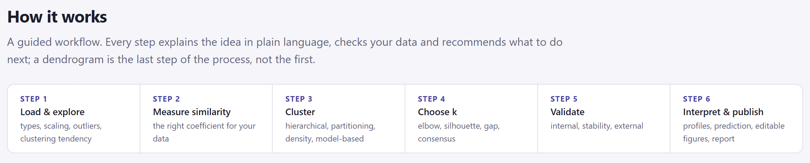
Figure 2.1. The How it works section. The six steps follow the order in which the methods section of a paper is written; the dendrogram is the end of the process, not the beginning.
Table 2.2. The six steps on the home page and the blocks that carry them out.
Step
In the app
What is done
Blocks
1
Load & explore
Assign a type to each column, scale, check for outliers and measure the clustering tendency.
2
2
Measure similarity
Choose the coefficient that suits the data and compute the matrix.
3
3
Cluster
Build the tree or the partition: hierarchical, partitioning, density-based or mixture methods.
45
4
Choose k
Decide how many clusters to keep using the elbow, the silhouette, the gap and the consensus of indices.
6
5
Validate
Internal validation, resampling stability and comparison with known groups.
6
6
Interpret & publish
Cluster profiles, prediction of new cases, editable figures and the report.
78
iNote · navigating from the home page
The buttons in the opening section take you to the corresponding section of the same home page, except Start with my data →, which opens Block 2. The cards in What's inside open their block; if you have not loaded any data yet, any card from 3 onwards takes you to Block 2 first, because every block reads from there. To return to the home page from anywhere, click the program's name at the top left or the 1 Home button on the bar.
2.2The interactive demo: k-means and a dendrogram
The demo takes a set of points in two dimensions and clusters it in the two classic ways at the same time. On the left, k-means moves its centres step by step; on the right, a real dendrogram, computed with the same engine that Block 4 uses, is recalculated whenever you change the linkage rule and is cut into k clusters. It is not a decorative animation: the numbers on the results line are the same ones you will see in the analysis blocks.
θTheory in brief · two ways of clustering the same points
k-means starts from k centres and repeats two steps until nothing changes: it assigns each point to the nearest centre and moves each centre to the mean of its points. It looks for round clusters of similar size, and it needs k in advance. Hierarchical clustering does not fix k: it starts with each point in its own cluster and merges, again and again, the two closest clusters until only one remains. The result is a tree, and cutting it at a given height produces a partition. What “closest” means is decided by the linkage rule, and that is the point of the demo: with the same points, each rule draws a different tree.
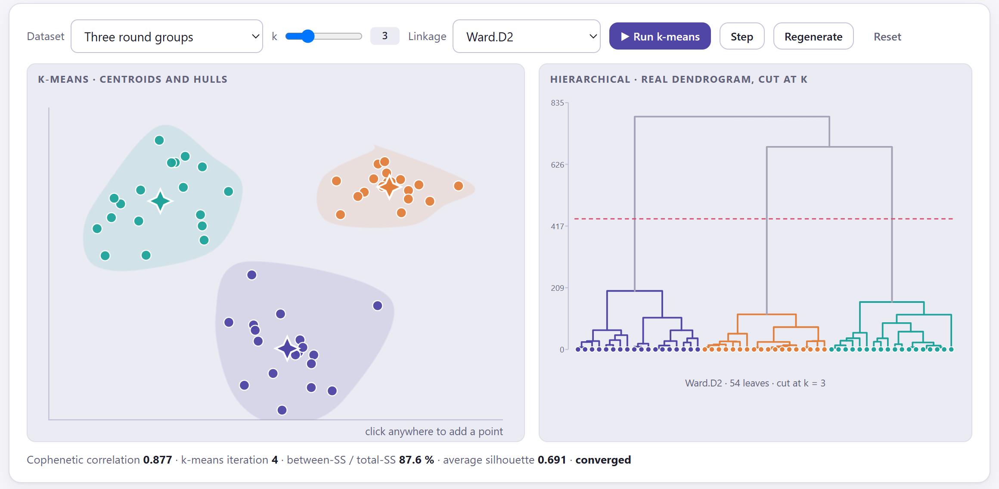
12345678
Figure 2.2. The demo with the Three round groups dataset after clicking ▶ Run k-means with k = 3 and Ward.D2 linkage. The two ways of clustering agree completely.
1Dataset: six ready-made sets of points (table 2.4).
2k: the number of clusters, from 2 to 6, for k-means and for the tree cut.
3Linkage: the linkage rule of the dendrogram; the tree is recalculated instantly.
4▶ Run k-means runs the algorithm with a pause between iterations so that you can watch the centres move.
5Step advances one iteration, Regenerate draws new points and Reset clears the clusters.
6Each k-means cluster with its centre (star) and its hull.
7The tree cut line; the branches below it are coloured by cluster.
8The results line (table 2.5).
Table 2.3. The demo controls.
Control
What it does
Dataset
Changes the set of points. Each set is generated with the same seed, so when you select it you will see exactly the points shown in this manual.
k
Sets the number of clusters. If you have already run k-means, it restarts with the new k; the tree cut moves to the height that separates k branches.
Linkage
Eight rules: single, complete, average (UPGMA), weighted (WPGMA), centroid, median, Ward.D and Ward.D2. It affects only the tree.
▶ Run k-means
Places k centres at random and repeats the iterations until convergence, one every 0.4 s.
Step
A single iteration: useful for seeing how the points are reassigned and the centres shift.
Regenerate
Draws another set of points of the same kind (another seed). The numbers will change.
Reset
Removes the k-means clusters and leaves the points in grey; the tree does not change.
Click on the left panel
Adds a point where you click (up to 150). The tree is recalculated and the k-means clusters are cleared so that you can run it again.
Table 2.4. The six sets of points and what each one teaches.
Dataset
Points
Shape
What it shows
Three round groups
54
Three well-separated round clouds.
The ideal case: all methods agree.
Four groups
60
Four clouds in the corners.
How the indices change when going from k = 3 to k = 4.
Elongated groups
58
Two elongated clouds and a round one.
k-means cuts the elongated clouds; the tree does not.
Two moons
60
Two interlocking half-moons.
Curved shapes: only single linkage recovers them.
Ring + core
64
A ring with a core inside.
One cluster inside another: k-means cannot cope.
Uniform noise (no structure)
55
Random points, with no clusters.
Algorithms return clusters even when there are none.
The results line
Below the two panels, a single line summarises the state of the demo. Its numbers will turn up again in Blocks 4, 5 and 6, so it is worth learning to read them here.
Table 2.5. The numbers on the results line.
In the app
What it measures
How to read it
Cophenetic correlation
The correlation between the original distances and the heights at which the tree joins each pair of points.
Above 0.75 the tree summarises the distances well. It changes with the linkage, not with k.
k-means iteration
How many times the points have been reassigned and the centres moved.
Few iterations with clear clusters; many when the clusters overlap.
between-SS / total-SS
The percentage of the total variation explained by the differences between clusters.
It always rises as k increases; use it to look for the elbow, not the maximum.
average silhouette
The mean silhouette of all the points (section 1.9).
0.7 or more, strong structure; 0.5, reasonable; below 0.25, doubtful.
converged
Appears when an iteration no longer changes anything.
Until then the partition is provisional.
iNote · the numbers in this manual are reproducible
The points of each dataset and the initial k-means centres are drawn with a fixed seed. As long as you do not click Regenerate, you will obtain exactly the values given in the following exercises. After regenerating, the figures change but the conclusions hold.
Exercise 1 · Three round clusters: the ideal case
▸Step by step
On the home page, click Try the live demo. The initial dataset is Three round groups, with k = 3 and Ward.D2 linkage.
Click Step several times and watch: first three stars appear in arbitrary positions, then the points change colour and the stars move towards the centre of each cloud. Click Reset and then ▶ Run k-means to see it run straight through: it converges in four iterations (figure 2.2).
Move k to 2 and then to 4, running k-means each time, and write down the last two numbers on the results line (table 2.6).
Go back to k = 3 and change the rule in Linkage. Note the cophenetic correlation and whether the tree cut still separates the three clouds (table 2.7).
Table 2.6. k-means on the three round clusters for each k.
k
Iterations
Between-SS / total
Average silhouette
2
3
33.1%
0.398
3
4
87.6%
0.691
4
3
88.7%
0.553
Table 2.7. Cophenetic correlation of the eight linkages with the same 54 points.
Linkage
Cophenetic
Linkage
Cophenetic
Single
0.800
Centroid
0.877
Complete
0.869
Median
0.855
Average (UPGMA)
0.883
Ward.D
0.864
Weighted (WPGMA)
0.862
Ward.D2
0.877
θWhat you learned
The between-cluster sum of squares always grows with k: going from 2 to 3 clusters makes it jump from 33% to 88%, but going from 3 to 4 barely moves it. That abrupt change of slope is the elbow. The silhouette, by contrast, has a clear maximum at k = 3, because with 4 clusters one cloud is split into two halves that are closer to each other than to anything else. And with such sharp clusters, all eight linkages give trees that are very faithful to the distances (cophenetic correlation from 0.80 to 0.88; average linkage, UPGMA, is the highest, as is usually the case), and all of them except single linkage separate the three clouds when cut at 3. Blocks 4 and 6 apply this same reasoning to your data, with thirteen criteria instead of two.
Exercise 2 · Two moons: where k-means goes wrong
▸Step by step
In Dataset, choose Two moons and lower k to 2.
Click ▶ Run k-means. When it converges, look at how each moon has been divided.
In Linkage, choose Single and compare the tree cut with the k-means clusters (figure 2.3).
Then try Average (UPGMA) and Ward.D2: the colours of the tree mix the moons again.
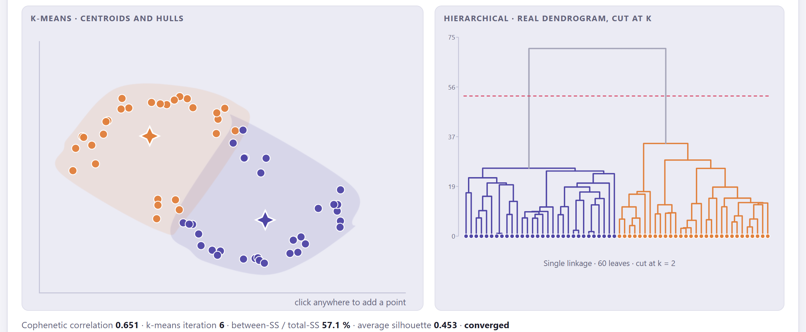
Figure 2.3.Two moons with k = 2. k-means (left) splits each moon in half, because it can only draw straight boundaries between centres. Single linkage (right) follows the chain of nearest neighbours and recovers the two moons exactly.
Table 2.8. Two moons with k = 2: agreement of each method with the true moons, measured with the adjusted Rand index (ARI; 1 = perfect agreement, 0 = chance).
Method
ARI with the moons
Cophenetic
Average silhouette
k-means
0.391
—
0.453
Tree, single linkage, cut at 2
1.000
0.651
—
Tree, UPGMA, cut at 2
0.312
0.751
—
Tree, Ward.D2, cut at 2
0.312
0.739
—
✓Rule · a high value does not mean correct clusters
Single linkage is the only rule that recovers the moons, and yet it has the lowest cophenetic correlation (0.651 against 0.751 for UPGMA). The cophenetic correlation measures how well the tree reproduces the pairwise distances, not whether the clusters are the true ones. Likewise, the k-means silhouette (0.453) is far from negligible even though the partition is absurd: the silhouette rewards compact, round clusters. With curved or elongated shapes, always look at the figure before the index.
Exercise 3 · A ring with a core
▸Step by step
Choose Ring + core, keep k = 2 and Single as the linkage.
Run k-means and compare the two panels (figure 2.4).
Switch to Complete, Average (UPGMA) and Ward.D2: none of them separates the core from the ring.
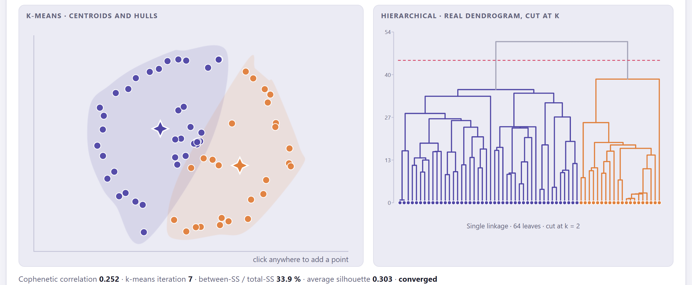
Figure 2.4.Ring + core with k = 2. k-means cuts the dataset into two halves (silhouette 0.303, 33.9% of the variation between clusters). Single linkage isolates the core as one cluster and the ring as the other: perfect agreement with the truth (ARI = 1.000) despite a cophenetic correlation of only 0.252. With complete linkage, UPGMA or Ward, the ARI stays close to zero.
θWhat you learned
A cluster inside another has no “centre” of its own: the centre of the ring falls in the core. That is why no rule that works with centres or with averages of distances can separate them, and only single linkage, which joins immediate neighbours, chains the points of the ring together. In Block 5 you will find two methods designed for these shapes: DBSCAN, which clusters by density and also recognises noise, and spectral clustering, which uses the nearest-neighbour graph. The practical rule is this: if your scatter plot shows curved, ring-shaped or elongated forms, do not trust k-means or Ward.
Exercise 4 · Elongated clusters and the problem of starting points
▸Step by step
Choose Elongated groups, raise k to 3 and go back to Ward.D2.
Run k-means. Notice how the elongated cloud on the left is shared between two centres, while the tree separates the three clouds correctly (figure 2.5).
Click Regenerate and run k-means again, several times: with other points and other initial centres, it sometimes gets it right and sometimes does not.
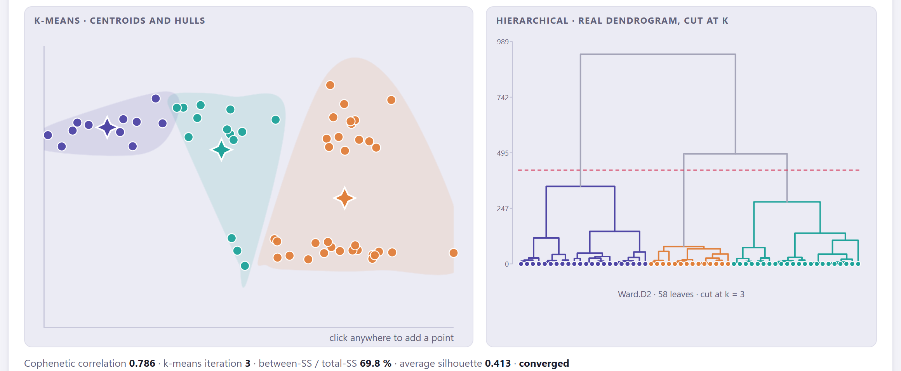
Figure 2.5.Elongated groups with k = 3. k-means (ARI = 0.385 with the true clusters, silhouette 0.413) split the horizontal cloud on the left and merged its right half with part of the large cloud. The Ward.D2 tree, and the UPGMA tree as well, recovers the three clouds (ARI = 1.000).
!Important · k-means depends on where it starts
k-means is only guaranteed to reach a local minimum of the sum of squares: the result depends on the initial centres, and with elongated clusters or clusters of different sizes a bad start produces a poor partition that nonetheless “converges”. This is why Block 5 uses the smart k-means++ initialisation by default, repeats the algorithm from many starts (nstart) and keeps the best, and also offers hierarchical k-means, which takes its centres from a Ward tree. The demo deliberately makes no repetitions, so that you can see the problem.
Exercise 5 · Uniform noise: clusters where there are none
▸Step by step
Choose Uniform noise (no structure) with k = 3 and Ward.D2.
Run k-means and look at the results line (figure 2.6).
Change k to 4, 5 and 6: the explained variation rises each time, the silhouette barely moves and the tree always delivers as many clusters as you ask for.
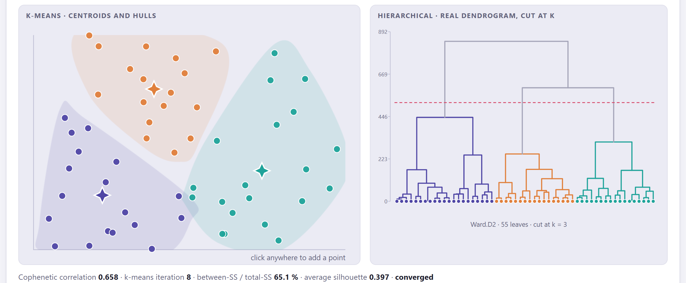
Figure 2.6.Uniform noise (no structure) with k = 3. Both methods produce three reasonable-looking clusters, with 65.1% of the variation between clusters, a silhouette of 0.397 and a cophenetic correlation of 0.658. None of these numbers reveals that the points were drawn at random.
θWhat you learned
Every clustering algorithm returns clusters, even when none exist. The indices are of little help: the silhouette of 0.40 for the noise is not far from the 0.45 for the two moons, and the elbow in the sum of squares is gentle but visible. The only defence is to ask, before clustering, whether the data have any structure, and for that Block 2 computes the Hopkins statistic with its P-value against uniform data and draws the VAT image of the distance matrix. A Hopkins value close to 0.5 means “there is nothing to find”, and that is a legitimate conclusion.
Try it yourself. With any dataset, click an empty corner of the left panel to add an isolated point and change the linkage to Single: the new point forms a cluster of one and all the others merge into the other cluster, because single linkage isolates outliers before anything else. Go back to Ward.D2 and the point joins the nearest cloud. With k-means, run the algorithm and watch how the point pulls the centre of its cluster towards itself. This is why Block 2 detects multivariate outliers before clustering.
2.3Data types and methods at a glance
The next two sections of the home page are catalogues. The first answers “Are my data suitable?” and the second “What can be computed?”. Neither has any controls: they are cards to read.
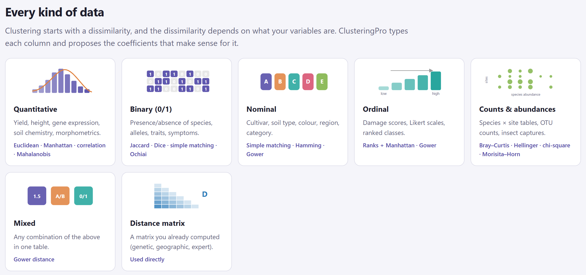
Figure 2.7. The Every kind of data section: seven types of table, typical examples and, in colour, the dissimilarity coefficients suited to each.
Table 2.9. The seven data types, the coefficients the app suggests and the blocks where they are handled.
A matrix that has already been computed: genetic, geographic, expert-based.
Used as it is.
2
Table 2.10. The fifteen methods in the gallery, by family, and the block that computes them.
Family
Card
What it is
Block
Hierarchical four cards
Agglomerative
Bottom-up merges with eight linkage rules.
4
Divisive (DIANA)
Top-down splits.
4
Tree comparison
Tanglegram, entanglement and Baker's γ between two trees.
4
Clustered heat map
A heat map with rows and columns ordered by their trees.
4
Partitioning four cards
k-means
Centroids; Hartigan–Wong, Lloyd and MacQueen algorithms; k-means++ initialisation.
5
k-medoids (PAM)
Centres that are actual observations; accepts any distance.
5
CLARA
PAM on repeated samples, for thousands of rows.
5
Fuzzy c-means
Membership degrees instead of labels.
5
Advanced three cards
Model-based
Gaussian mixtures fitted by EM; the BIC chooses the model.
5
DBSCAN
Density-based clustering: any shape, with noise.
5
Hierarchical k-means
The tree provides the initial k-means centres.
5
Validation four cards
Clustering tendency
Hopkins statistic and VAT image.
2
Optimal number of clusters
Elbow, silhouette, gap and the consensus of indices.
6
Validation
Silhouette, Dunn, resampling stability, ARI.
6
Supervised follow-up
Discriminant analysis and classification of new observations.
7
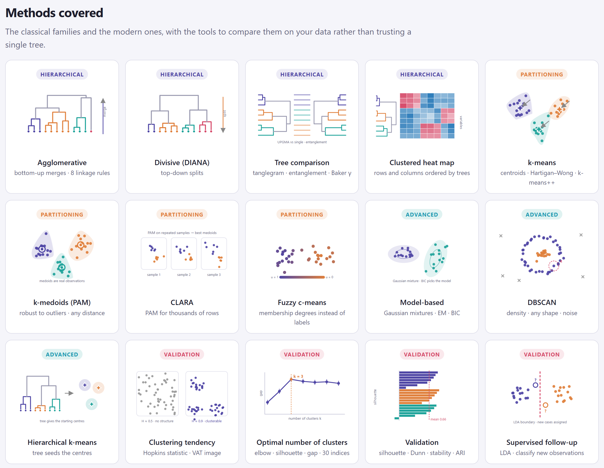
Figure 2.8. The Methods covered gallery. Each card carries the label of its family, an illustration of the method and the keywords that set it apart.
39
Fact · more than the gallery shows
The cards are a summary. Block 3 offers 39 dissimilarity coefficients, Block 4 adds flexible linkage with a β parameter, Block 5 includes spectral clustering, and Block 6 takes a vote among thirteen criteria to choose k, resamples variables to give AU and BP values to the branches of the tree, and compares algorithms across k. Each chapter of this manual covers its own block in detail.
2.4The thirteen theory lessons
The Clustering, explained without the fog section is a short course in cluster analysis in thirteen expandable lessons, each with one or two figures. You do not need to read them in order or all at once: each analysis block repeats, in its theory card, the part that matters at that step. This section introduces the lessons and gathers the rules of thumb they state, so that you have them all in one place.
Click Read the theory in the opening section: the page scrolls down to the card and opens the first lesson.
Click the title of any lesson to open or close it. Several lessons can be open at the same time.
The figures in the lessons are vector graphics: if the browser is on a small screen, they rearrange themselves below the text.
Table 2.11. The thirteen lessons: the question each one answers and where it applies.
No.
Lesson in the app
What it answers
Applies in
1
What is a cluster, and what is clustering?
What a cluster is (compactness and separation), what “unsupervised” means and which are the four families of methods.
all
2
Before clustering: are my data clusterable at all?
Hopkins, VAT, principal-component preview, correlations, outliers and missing values.
2
3
Similarity, dissimilarity and distance
The coefficients for quantitative, binary, nominal, mixed and ecological variables; the double-zero problem.
3
4
Standardisation: putting variables on the same footing
When to standardise (z, range, robust, logarithm, Hellinger) and when not to.
2
5
Hierarchical clustering and linkage rules
Agglomerative and divisive; the eight linkage rules; cophenetic correlation and agglomerative coefficient; Ward.D versus Ward.D2.
4
6
Reading (and drawing) a dendrogram
Merge heights, the arbitrary order of the leaves, the cut and what the app draws.
4
7
Comparing dendrograms
Tanglegram and entanglement, cophenetic correlation between trees, Baker's γ, Fowlkes–Mallows index.
4
8
Partitioning: k-means, PAM, CLARA and fuzzy clustering
How k-means and its variants work, medoids, CLARA, fuzzy membership and the limits of k-means.
5
9
Density-based and model-based clustering
DBSCAN (ε, minPts, noise) and Gaussian mixtures with EM and BIC.
5
10
How many clusters?
Elbow, silhouette, gap, Calinski–Harabasz, Davies–Bouldin, Dunn and the consensus; BIC for mixtures, the knee for DBSCAN.
6
11
Validating clusters
Internal validation, resampling stability, AU and BP values, external validation and comparison of algorithms.
6
12
From clusters to meaning: profiles, indicators and supervised follow-up
Profiles, v-tests, ANOVA, indicator species, discriminant analysis, classification tree and assignment of new cases.
7
13
Pitfalls checklist
What to do and what not to do before publishing (table 2.12).
8
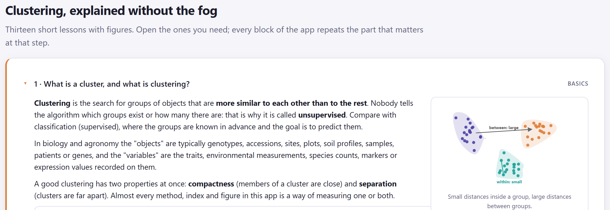
Figure 2.9. The beginning of the theory card, with lesson 1 open. Each lesson has a title with its tag on the right, text with the key terms in bold, original figures and, further down, boxes with tips or warnings.
The rules of thumb stated in the lessons
The lessons are rich in thresholds and warnings. The following boxes gather those used most often; each reappears, in more detail, in the chapter on the corresponding block.
✓Rules · thresholds worth memorising
Measure
Thresholds and interpretation
Lesson
Hopkins
Close to 0.5 the data look uniform; below 0.75, be cautious; above 0.9 there is clear structure.
2
Objects per cluster
At least 5 to 10 objects for each cluster you expect. Many variables are fine, as long as all of them are relevant.
2
Cophenetic correlation
Above 0.75 the tree is a faithful summary of the distances. The agglomerative coefficient grows with sample size: compare it only between trees built from the same data.
5
Gap
Choose the smallest k whose gap lies within one standard error of the maximum.
10
Average silhouette
0.7 or more, strong structure; 0.5, reasonable; below 0.25, no substantial structure. A negative silhouette flags an object that is probably misassigned.
11
Jaccard stability
Above 0.75 a cluster is stable; below 0.5 it is doubtful.
11
!Important · three mistakes the lessons keep warning about
The left–right order of a dendrogram does not mean closeness (lesson 6). Any node can be rotated without changing the tree: there are 2n−1 equivalent drawings. Read the height at which two objects are joined, not whether they are neighbours in the row of leaves.
Ward and k-means need Euclidean distances (lessons 5 and 13). With Bray–Curtis or Gower, use PAM or UPGMA, or transform first (Hellinger, or the square root of 1 − s).
The double zero (lesson 3). In species tables almost all cells are zeros; a coefficient that counts “both absent” as a resemblance will group sites by the species they lack. Use asymmetric coefficients: Jaccard, Bray–Curtis, Hellinger.
D2
Fact · Ward.D and Ward.D2
Ward's criterion is defined on squared Euclidean distances. Ward.D2 squares them for you and reports the heights in the original units; Ward.D applies the same formula to whatever you give it. Prefer Ward.D2, unless you are reproducing an older analysis. In the demo you can see that both give almost identical trees but with different heights.
Table 2.12. The list from lesson 13, Pitfalls checklist.
Do
Don't
Check clustering tendency first (Hopkins, VAT).
Read the left–right order of a dendrogram as proximity.
Match the coefficient to the data type; use asymmetric coefficients for presence/absence and abundances.
Use Ward or k-means on non-Euclidean distances (Bray–Curtis, Gower) without a transformation.
Standardise when units differ, and say so in the methods.
Let one variable in large units decide the clusters.
Try several linkages and algorithms and compare them (tanglegram, cophenetic correlation, ARI).
Take a single k-means run with a single start as the answer.
Choose k with several criteria and report them all.
Use double-zero coefficients (simple matching) on species tables.
Report the silhouette and a stability measure with every partition.
Test differences between clusters with ANOVA on the very variables used to build them and call the result “significant”.
Describe each cluster in terms of the variables.
Present a tree without its cophenetic correlation or a cut without its silhouette.
2.5Which method should I use? The choice table
The Which method should I use? section condenses the lessons into a table of eight rows: depending on what your data are like, which dissimilarity to use, which method to try first, which to try next and what to validate with. It is a starting point, not a rule, and Block 2 makes this same recommendation automatically as soon as it assigns types to your columns.
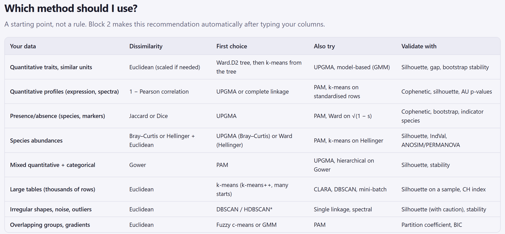
Figure 2.10. The choice table in the app. Table 2.13 reproduces its content.
Table 2.13. The choice table.
Your data
Dissimilarity
First choice
Also try
Validate with
Quantitative traits, similar units
Euclidean (scaled if needed)
Ward.D2 tree, then k-means seeded from the tree
UPGMA, Gaussian mixtures
Silhouette, gap, resampling stability
Quantitative profiles (expression, spectra)
1 − Pearson correlation
UPGMA or complete linkage
PAM, k-means on standardised rows
Cophenetic correlation, silhouette, AU values
Presence/absence (species, markers)
Jaccard or Dice
UPGMA
PAM, Ward on √(1 − s)
Cophenetic correlation, resampling, indicator species
Species abundances
Bray–Curtis, or Hellinger + Euclidean
UPGMA (Bray–Curtis) or Ward (Hellinger)
PAM, k-means on Hellinger
Silhouette, IndVal, ANOSIM/PERMANOVA
Mixed quantitative and categorical
Gower
PAM
UPGMA, hierarchical on Gower
Silhouette, stability
Large tables (thousands of rows)
Euclidean
k-means (k-means++, many starts)
CLARA, DBSCAN
Silhouette on a sample, CH index
Irregular shapes, noise, outliers
Euclidean
DBSCAN
Single linkage, spectral
Silhouette (with caution), stability
Overlapping groups, gradients
Euclidean
Fuzzy c-means or Gaussian mixtures
PAM
Partition coefficient, BIC
iNote · how to use the table
Find the row that most resembles your data table and take its three middle columns to Blocks 3, 4 and 5. If your data fall into two rows (for example, abundances with thousands of sites), the nature of the variables decides the dissimilarity and the size of the table decides the algorithm. Once Block 2 has assigned types to your columns, compare its What to do next card with this table: they almost always agree, and when they do not, the card explains why.
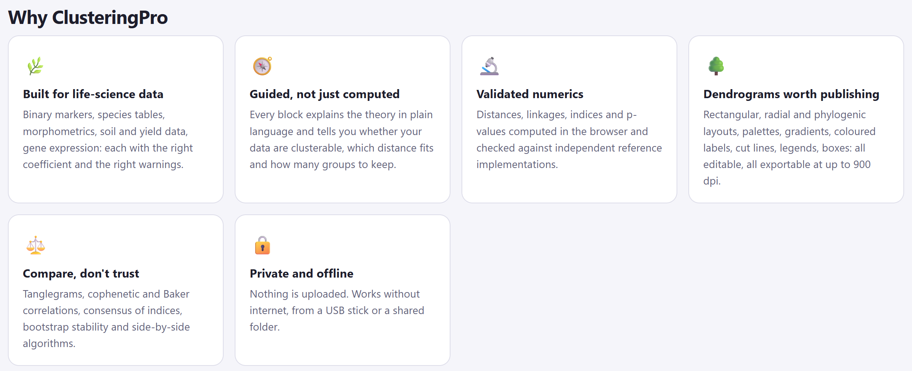
Figure 2.11. The Why ClusteringPro section: six arguments, useful when you have to justify in a project or a thesis why you chose the program.
The six Why ClusteringPro cards summarise what sets the program apart: it is built for life-science data, with the appropriate coefficient and warnings for each data type; it guides as well as computes; its calculations have been checked against reference values; its dendrograms are publication-ready and editable at up to 900 dots per inch; it compares rather than relying on a single tree; and it works offline, without uploading anything. Below them, Glossary at a glance shows on cards the twenty-nine terms that recur most often in the app, grouped by family: those of hierarchical clustering, those of partitioning, and those of exploration and validation. Appendix A defines them all.
2.6How to cite
If ClusteringPro has helped you with a thesis, a paper or a report, cite it: that way readers know which tool and which version were used for the calculations, and the program can remain free. The How to cite ClusteringPro section, at the end of the home page, has the reference ready to copy.
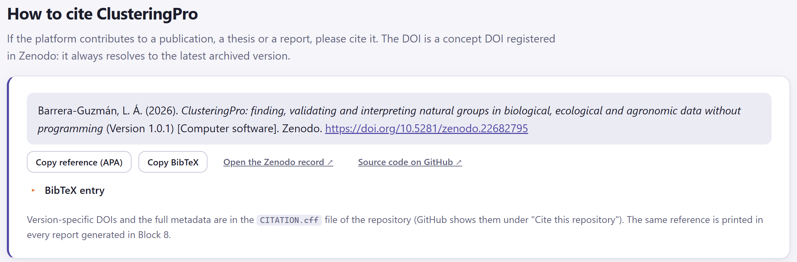
12345
Figure 2.12. The citation card.
1Copy reference (APA) copies the reference in APA format to the clipboard.
2Copy BibTeX copies the entry for LaTeX and reference managers.
3Open the Zenodo record ↗ opens the archive record, with all the versions.
4Source code on GitHub ↗ opens the repository with the source code.
5BibTeX entry expands the entry so that you can see it before copying it.
In the opening section, click How to cite; the page scrolls down to the card.
Click Copy reference (APA) or Copy BibTeX. A message confirms Reference copied to the clipboard; if the browser blocks the clipboard, select the text and copy it by hand.
Paste the reference into your reference manager or your document and adapt it to the journal's style.
In the methods section, state the version and the settings you used. The Block 8 report prints this same reference and drafts that paragraph.
Barrera-Guzmán, L. Á. (2026). ClusteringPro: finding, validating and interpreting natural groups in biological, ecological and agronomic data without programming (Version 1.0.1) [Computer software]. Zenodo. https://doi.org/10.5281/zenodo.22682795
iNote · the DOI
The identifier in the citation, 10.5281/zenodo.22682795, is the concept DOI: it always resolves to the most recent version of the program. Each version also has its own DOI, shown in its archive record (that of version 1.0.1 is 10.5281/zenodo.22682889). Cite the concept DOI together with the version number; if the journal requires that anyone be able to retrieve exactly the version you used, cite the DOI of that version. The DOIs of every version and the full metadata are in the repository's CITATION.cff file, which GitHub displays under Cite this repository.
!Important · report the settings as well
Citing the program is not enough for another researcher to repeat your analysis. In the methods, state the version of ClusteringPro, the dissimilarity coefficient, the scaling, the linkage rule or the algorithm with its parameters, the number of clusters and the criteria used to choose it, the number of resamples and the random seed. The methods paragraph drafted by Block 8 contains all of this, with the values you actually used.
With the home page, the demo and the theory at hand, the next step is to load your own data. The chapter on Block 2 explains the formats the app accepts, how it assigns a type to each column and what role each column can play, the handling of missing values, transformations and scaling, and the question that must be answered before clustering: whether the data can be clustered at all.
B2
Chapter three · Block 2 · Data & EDA
Data and exploratory analysis
Everything starts here: you load the table, confirm what each column is and what role it plays, decide what to do with missing values, transform and scale, and, before clustering, answer the question that almost nobody asks: do these data contain clusters worth looking for? The block ends with a grade from A to D and a recommended route for the blocks that follow.
3.1Input formats and how to lay out the table
3.2Variable types and the role of each column
3.3Missing values, transformation and scaling
3.4Can my data be clustered? Hopkins and VAT
3.5The grade and the recommendation
3.6Settings, tables and figures of the block
3.7Step by step with the seven examples
Block 2 is organised into four numbered cards that open as you progress: 1 · Load your data, 2 · Variable types and roles, 3 · Missing values, transformation and scaling and 4 · Exploratory analysis and clustering tendency. Above them all is a theory card with four short lessons, and at the bottom a preview of the table as it was read. This chapter follows the same order.
3.1Input formats and how to lay out the table
The first card reads the file. You can drag it onto the dashed area, click the area to browse for it, paste the contents of the clipboard or load one of the seven examples that come with the app (figure 3.1).
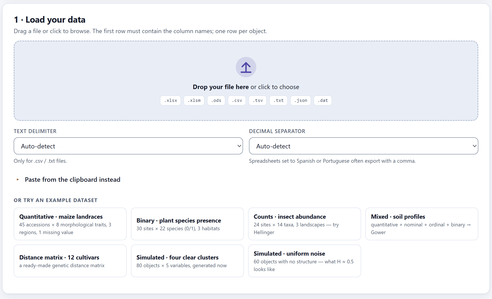
12345
Figure 3.1. The 1 · Load your data card.
1Upload area: drag the file onto it or click to choose it. The tags show the accepted formats.
2Text delimiter: the separator of text files; in automatic mode the app infers it by counting commas, semicolons, tabs or vertical bars.
3Decimal separator: point or comma; in automatic mode it is decided by majority among the numeric cells.
4Paste from the clipboard instead: an area for pasting a table copied from a spreadsheet.
5The seven examples (table 1.4 and section 3.7). The last two are generated on the fly in the browser.
Table 3.1. Formats read by Block 2.
Format
How it is read
Remarks
Spreadsheets .xlsx, .xlsm, .ods
With the app’s own reader; the first sheet is used, and the Sheet selector appears if there are several. The old binary formats .xls and .xlsb cannot be read: save the workbook as .xlsx.
Merged cells are detected and reported; dates are not used as numbers.
Delimited text .csv, .tsv, .txt, .dat, .prn
With the chosen or detected delimiter; double quotes are respected.
UTF-8 is accepted with or without a byte order mark.
.json
An array of objects (one object per row), an array of arrays, an object with columns and data, or an object whose keys are columns.
Any other layout produces an error message.
Clipboard
Whatever you paste into Paste from the clipboard instead is read as delimited text (the tabs left by a spreadsheet are detected automatically).
The file is called pasted-data.txt in the reports.
How to lay out the table
The rule is the usual one in multivariate statistics: one row per object you want to cluster (accession, site, sample, plot, profile, gene) and one column per variable, with the column names in the first row. In addition, two optional columns make everything that follows easier:
An identifier column (a unique name or code per row). It becomes the label of the dendrogram leaves and of the points on the maps.
A known grouping column (region, species, habitat, treatment). It is never used to build the clusters: it colours the figures and, in Block 6, serves for external validation.
Table 3.2. How to write each type of data in the table.
Data
How to write them
Numbers
With a decimal point or a decimal comma, but not mixed within the same column. Thousands separators are tolerated; a trailing percent sign is ignored.
Missing values
An empty cell or any of these codes: NA, N/A, NaN, null, none, ., -, --, ?, ND, S/D, missing, faltante, spreadsheet errors (#N/A, #DIV/0!…) and inf.
Binary
Two states: 0/1, yes/no, y/n, true/false, present/absent, p/a, +/−, si/no, presence/absence, t/f. The second state of each pair is coded as 1.
Nominal
Text with up to 40 categories. Watch capitalisation and accents: Clay and clay would be two different levels (the app warns you).
Ordinal
Recognised text levels (for example low < medium < high, poor < moderate < good < excellent, bajo < medio < alto, early < intermediate < late), or integer scores in a column whose name contains score, scale, grade, rating, severity, level, stage, damage or likert.
Distance matrix
A square table whose first column repeats the column names, with zeros on the diagonal and no negative values. Small asymmetries are averaged.
iNote · the word “none” counts as missing
The missing-value codes include none. If a grouping column uses that word as a category (for example, “none” for untreated sites), the app will read it as an empty cell. Replace it with another label, such as control or untreated. You will see this in the uniform noise example in section 3.7, where the Group column is “none” in every row and therefore appears as Empty and excluded.
What the app checks when reading
On loading, the app looks for the most common formatting problems and lists them below the reading message (figure 3.2). It fixes many of them by itself; those that break the one-row-per-object rule are flagged in red.
Figure 3.2. After reading the maize landraces example: the reading message (objects, columns and detected decimal separator) and the Tidy table check.
Table 3.3. File checks and what the app does with each one.
Warning
Level
What it means and what the app does
Tidy table
✅
One header row, one row per object, no merged cells and no total rows.
N title rows above the header
⚠️
There were title rows before the column names; they are skipped automatically. Check the preview.
Merged cell ranges detected
⛔
Merged cells in the spreadsheet: only the first cell keeps the value. Unmerge them and fill in every row.
Columns without a name
⚠️
They are named V1, V2… (the first unnamed one is called Object, because it is usually the label column).
Duplicated column names
⚠️
They are renamed with a suffix (_2, _3…).
Rows with more cells than the header
⚠️
The extra cells on the right are discarded.
Summary rows (Total / Mean) inside the data
⛔
Rows whose first cell reads Total, Mean, Average, Promedio, Suma, Sum or Media are removed, because they would be clustered as if they were objects.
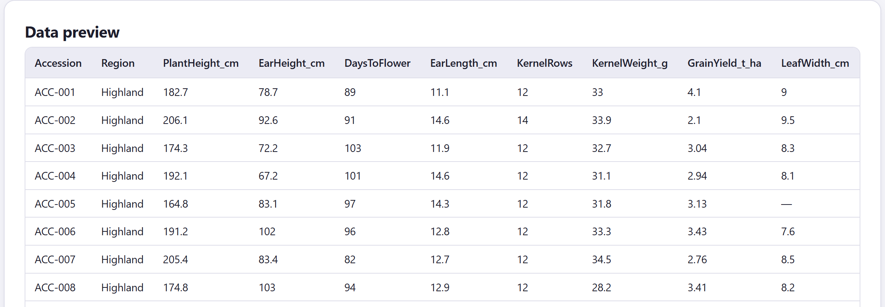
Figure 3.3. The Data preview card, at the bottom of the block, shows the table as it was read (up to 200 rows). The em dash in row ACC-005 is the example’s missing cell.
!Important · a distance matrix skips two cards
If the table is recognised as a distance matrix, the variable type and preprocessing cards do not appear: there are no variables to type and nothing to scale. The app goes straight to the exploratory analysis, where the map and the clustering tendency are computed on the principal coordinates of the matrix. Block 3 will use the matrix as it is.
3.2Variable types and the role of each column
The second card is the most important one in the block. For each column the app proposes a type (what kind of variable it is) and a role (what it is used for). The type determines which coefficients Block 3 will offer; the role determines which columns enter the distances. Review the proposal before moving on: it takes a minute and prevents entire analyses from being set up wrongly.
Table 3.4. The five variable types.
Type
What it is
Examples
Quantitative
Continuous or integer measurements.
Height, yield, pH, expression.
Count / abundance
Non-negative integers with many zeros.
Species abundances, catches, reads.
Binary (0/1)
Two states.
Present/absent, yes/no, allele A/B.
Nominal
Unordered categories.
Cultivar, soil type, colour.
Ordinal
Ordered categories.
Low < medium < high, damage scales.
Table 3.5. The five roles of a column.
Role
What it is for
How many columns
Active (used to cluster)
Defines the similarity between objects: it enters the working matrix and the distances.
At least two.
Supplementary
Does not cluster, but is kept to describe the clusters in Block 7.
As many as you like.
Object label / ID
Name of each object in dendrograms and maps.
One; choosing another turns the previous one into excluded.
Known grouping
A prior classification for colouring figures and for external validation. It never clusters.
One; choosing another turns the previous one into active.
Exclude
Ignore the column.
As many as you like.
How the app guesses the type and the role
The proposal comes from simple rules applied to the content and the name of each column (table 3.6). With well-named data it is almost always right; when in doubt, it says so in the Checks column.
Table 3.6. Detection rules, in the order in which they are applied to each column.
If the column…
…it is proposed as
Is empty
Empty, excluded.
Is numeric (at least 90% of the cells) and has only the two values of a known binary pair
Binary (0/1), active.
Is numeric, all its values are distinct and it is named ID, Code, Accession, Sample, Site, Plot, Profile, Name, Genotype…
Object label.
Is numeric and constant
Constant, excluded.
Contains non-negative integers, with more than two values, and at least 15% zeros or a name that suggests counts (_sp, abund, count, captur, reads, OTU…)
Count / abundance, active.
Contains few integers (up to 7 distinct values) and is named Group, Class, Type, Region, Habitat, Treatment, Species, Population…
Integer group codes: nominal, known grouping.
Contains few integers (up to 9) and the name suggests a scale (score, scale, grade, severity, damage…)
Ordinal with numeric levels, active.
Is numeric and none of the above applies
Quantitative, active. If it has few distinct integers, the warning “few integer values → nominal or ordinal?” is added.
Is text and all values are distinct (more than 3 rows)
Object label (or excluded if there is already one).
Is text with the two levels of a known binary pair
Binary, active.
Is text with the levels of a known ordinal scale
Ordinal, active, with the order of the scale.
Is text with more than 40 categories
Nominal, excluded.
Is text and is named like a grouping (Region, Habitat, Landscape…)
Nominal, known grouping.
Is text with up to 40 categories
Nominal, active.
60%
Fact · the community table rule
After typing the columns one by one, the app looks at the whole set: if there are at least four numeric columns of non-negative integers, they make up at least 60% of the active numeric columns and 30% of them contain zeros, all of them become Count / abundance. In this way a species-by-site table is recognised as such even if some species occur at every site.
The variable table
Each column of the file takes up one row of the table (figure 3.4). On screen the table is wider than the window and scrolls horizontally; here it is shown in two halves.
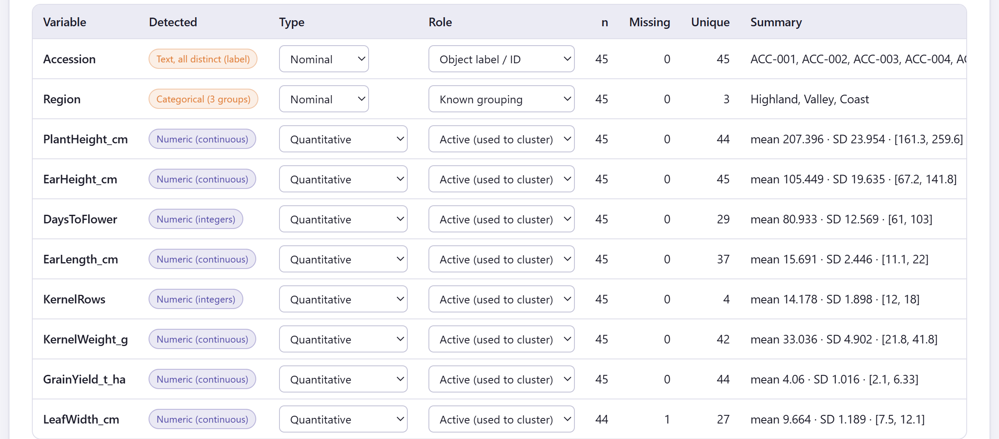
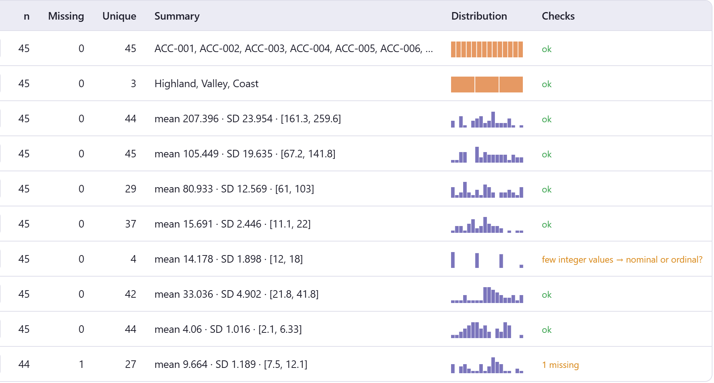
Figure 3.4. The variable table for the maize landraces example: on the left, from the name to the role; on the right, from the counts to the checks. The app recognised the label (Accession), the known grouping (Region, three groups) and eight active quantitative variables; it flagged KernelRows for having only four integer values and LeafWidth_cm for its missing cell.
Table 3.7. Columns of the variable table.
Column
What it shows
Variable
The name as it appears in the file (or the one assigned if it was missing).
Detected
What the app inferred from the content, with one colour per type: for example Numeric (continuous), Counts (17 % zeros), Binary (no / yes), Ordinal (4 levels), Categorical (3 groups), Text, all distinct (label).
Type
Menu for correcting the type. It offers only the types compatible with the content (a text column cannot be quantitative). If you choose Ordinal, a field appears below it in which to write the order of the levels separated by <.
Role
Menu for changing the role (table 3.5).
n · Missing · Unique
Cells with data, missing cells and distinct values.
Summary
Mean, standard deviation and range for numeric variables; the order of the levels for ordinal ones; which value is 0 and which is 1, with the percentage of ones, for binary ones; the first levels for nominal ones.
Distribution
A miniature histogram (numeric) or bars per level (categorical), in the colour of the type.
Checks
Warnings from table 3.8, or ok.
Table 3.8. Warnings in the Checks column.
Warning
When it appears and what to do
zero variance
All the values are equal: the variable contributes nothing and is discarded when you apply.
N missing / X % missing
Missing cells; shown in red when they exceed 20%. Decide in card 3 whether to drop or impute.
numbers mixed with text
More than 50% but less than 90% of the cells are numeric, or a number is written in words. Check the column in the file.
strongly skewed → log/sqrt? / skewed
Skewness greater than 2 (or than 1). Consider a logarithmic or square-root transformation.
N outliers |z| > 3
Values more than three standard deviations from the mean. Check them in the original data.
few integer values → nominal or ordinal?
Integers with up to seven distinct values: they may be codes. If they are, change the type.
many categories
An active nominal variable with more than 15 levels: each level becomes an indicator column and carries little weight.
levels differ only by case
Two levels that differ only in upper or lower case: unify them in the file.
The detected structure and the recommended route
Below the table, Detected structure summarises the decision in six tiles, adds the checks that affect the data set as a whole and proposes a route for the following blocks (figure 3.5). The route is derived from the profile of the data: the combination of types among the active columns (table 3.10).
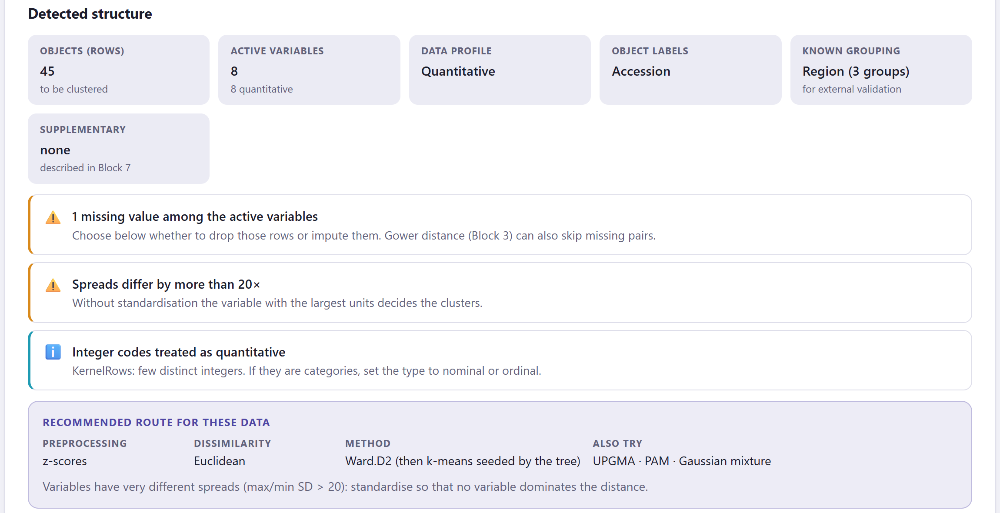
Figure 3.5.Detected structure for the maize landraces: 45 objects, 8 active quantitative variables, a label and a known grouping; three warnings (one missing cell, spreads differing by more than 20 times, integers with few values in KernelRows) and the recommended route: z-scores, Euclidean distance, Ward.D2 followed by k-means.
Table 3.9. Checks in Detected structure.
Warning
Level
What to do
No active variables
⛔
Mark at least two columns as active; the apply button stays disabled until then.
Only one active variable
⚠️
Clustering on a single variable amounts to cutting its values into intervals.
Very few objects
⛔
Fewer than 8 rows cannot support more than one or two clusters.
Fewer than 3 objects per variable
⚠️
With many variables all distances look alike; Block 3 offers clustering on principal components.
N missing values among the active variables
⚠️
Choose in card 3 between dropping rows and imputing.
Mixed variable types
ℹ️
The natural route is Gower + PAM; Gower performs the standardisation internally.
Looks like a community (species × site) table
ℹ️
Use asymmetric coefficients or the Hellinger transformation, not the raw Euclidean distance.
Spreads differ by more than 20×
⚠️
Without standardisation, the variable with large units decides the clusters.
No label column
ℹ️
Row numbers will be used as names.
Integer codes treated as quantitative
ℹ️
If those integers are categories, change the type to nominal or ordinal.
Constant variables
⚠️
They are discarded when you apply.
Table 3.10. The recommended route according to the data profile. The proposed preprocessing is copied to card 3; the rest is repeated in What to do next at the end of the block.
Profile
Preprocessing
Dissimilarity
Method
Also try
Quantitative quantitative, with or without ordinal
z (log first if some variables are strongly skewed)
Euclidean
Ward.D2 and k-means seeded from the tree
UPGMA · PAM · Gaussian mixtures
Ecological counts ≥ 60% counts
Hellinger, no scaling
Bray–Curtis on counts, or Euclidean on Hellinger
UPGMA (Bray–Curtis) or Ward.D2 (Hellinger)
PAM · k-means on Hellinger
Binary
No scaling
Jaccard (asymmetric) or simple matching (symmetric states)
UPGMA
PAM · Ward on √(1 − s)
Nominal
Range 0–1
Simple matching / Gower
PAM
UPGMA on Gower
Ordinal
Range 0–1
Manhattan on ranks / Gower
PAM or UPGMA
Ward.D2 on ranks
Mixed types
Range 0–1
Gower
PAM
UPGMA on Gower
Distance matrix
None
Your matrix, as it is
UPGMA or PAM
Complete linkage · Ward on √d if it is Euclidean
✓Decision rule · which scaling the app proposes for quantitative data
If the standard deviations of the active variables…
then
differ by more than 20 times (maximum / minimum > 20)
z-scores, with a warning: without standardisation a single variable dominates.
differ by between 3 and 20 times
z-scores; keep the raw units only if all variables share the same unit and you want the larger ones to weigh more.
are similar (less than 3 times)
z-scores anyway: it changes little and keeps the analysis comparable.
and, in addition, some variable has a skewness greater than 1.5
log(x + 1) is proposed before scaling.
3.3Missing values, transformation and scaling
The third card builds the working matrix: the numeric table that all the following blocks will see. Four menus and one button (figure 3.6). The initial values are those of the recommended route; you can change them and press Apply and explore → again as many times as you like: everything that follows is recalculated.
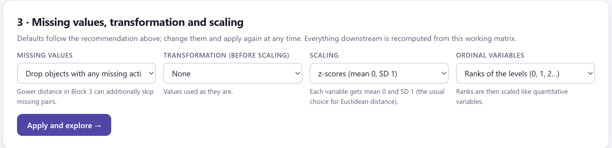
Figure 3.6. The 3 · Missing values, transformation and scaling card with the values proposed for the maize landraces. Below each menu, a line explains the chosen option.
Table 3.11. Options for Missing values and Ordinal variables.
Option
What it does
Drop objects with any missing active value
Removes the rows with any missing value in the active columns. This is the safe choice when there are few of them; the app reports the percentage removed and complains if it exceeds 20%.
Impute (mean / median / mode)
Fills each missing value with the mean (quantitative), the median (counts and ordinal levels) or the mode (binary and nominal) of its column. All rows are kept; the message states how many cells were imputed.
Ranks of the levels (0, 1, 2…)
Each ordinal variable is coded with the rank of its level, from lowest to highest, and then scaled like a quantitative one.
Numeric scores if the levels are numbers
If the levels are numbers (a 1–5 scale, for example), they are used as they are instead of the ranks.
Table 3.12. Options for Transformation (before scaling). Row-wise transformations are applied to the count columns; if there are none, to all the quantitative ones. Negative values block them (log and square root use the absolute value with its sign; row-wise ones are skipped with a warning).
Option
Formula
What it is for
None
—
The values are used as they are.
log(x + 1)
log(x + 1) per cell
Compresses large values and keeps zeros; for skewed positive data.
Square root
√x per cell
Milder than the logarithm; the classic variance-stabilising transformation for counts.
Hellinger (row-wise)
√(x / row total)
Turns an abundance table into something that Euclidean distance, Ward and k-means handle well.
Chord (row-wise)
x / √Σx²
Each object becomes a unit vector; distances reflect the shape of the profile, not its size.
Relative abundance (row-wise)
x / row total
Proportions per object.
Presence / absence
1 if x > 0
Reduces abundances to presence.
Table 3.13. Options for Scaling. Binary variables are never scaled; the indicator columns of nominal variables are multiplied by 0.7071 so that a nominal variable weighs as much as a quantitative one.
Option
Formula
When to use it
z-scores (mean 0, SD 1)
(x − mean) / SD
The usual option with Euclidean distance.
Range 0–1
(x − min) / (max − min)
Preserves the shape of the distribution; this is what Gower does internally. Sensitive to outliers.
Robust (median / IQR)
(x − median) / IQR
Like z, but resistant to extreme values.
Divide by max |x|
x / max |x|
Keeps zeros at zero; useful with sparse data.
None (raw units)
—
Only if all variables share the same unit and you want those with greater spread to weigh more.
θTheory in brief · what the working matrix contains
After applying, each object is a row of numbers: quantitative variables and counts transformed and scaled, ordinal variables as scaled ranks, binary variables as unscaled 0/1, and each nominal variable converted into as many indicator columns as it has levels (up to 40), scaled by 0.7071. The Euclidean distance of the exploratory analysis, the principal component map, the VAT image and the Hopkins statistic are all computed on this matrix. Block 3 reads the original types again in order to offer coefficients that respect each kind of variable; the working matrix is only the common starting point. You can download it with ⬇ Download the preprocessed matrix (CSV) at the end of the block.
3.4Can my data be clustered? Hopkins and VAT
Every algorithm returns clusters, whether they exist or not (you saw this with the uniform noise in the demo, exercise 5 of chapter 2). That is why the fourth card, before showing a single dendrogram, measures the clustering tendency with two complementary tools: a number with its P-value, the Hopkins statistic, and an image, the VAT. They are accompanied by the principal component map, the correlation heat map and the multivariate outlier plot.
θTheory in brief · the Hopkins statistic
We take m random points inside the box that encloses the data and measure the distance from each one to its nearest real object (sum u). We also take m real objects at random and measure the distance from each one to its nearest real neighbour (sum w). The statistic is H = u / (u + w). If the objects are spread at random, an artificial point and a real object have neighbours equally close and H is around 0.5. If the objects form clusters, each real object has neighbours very close by (small w), whereas many artificial points fall in the gaps between clusters (large u), and H approaches 1.
ClusteringPro uses m equal to half the number of objects (between 10 and 200), repeats the draw 20 times and averages. And instead of the theoretical approximation, which is valid only for small m, it calibrates the result by Monte Carlo: it simulates 80 uniform tables with the same number of objects and variables and the same range, computes H for each one and reports the 95% band of those values and a P-value, the fraction of simulations that give an H as large as the observed one. With more than 12 variables, or with a distance matrix, H is computed on the principal components that account for 90% of the variance (from 2 to 10), because in many dimensions all distances look alike.
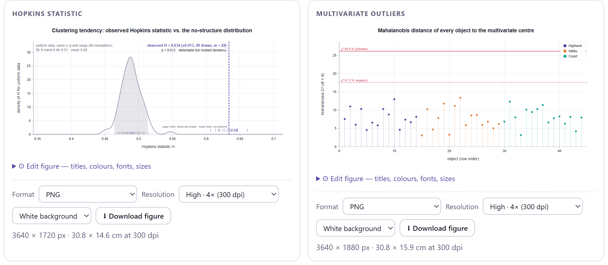
12345
Figure 3.7. The two figures for clustering tendency and outliers, with the maize landraces.
1Density curve of H over the 80 simulated uniform tables; the grey strip is the 95% band (here 0.46–0.51).
2The observed H (dotted line): 0.634 ± 0.013 with m = 22, P = 0.012, “detectable but modest tendency”.
3Rug marks: above, the 20 draws of the observed H; below, the simulations.
4Mahalanobis distance D² of each object from the multivariate centre, with the chi-squared reference lines at 97.5% (suspect) and 99.9% (extreme); the objects above them are labelled.
5Points coloured by the known grouping, if there is one.
✓Decision rule · how the app reads the Hopkins statistic
If…
Level
Reading
P ≤ 0.05 and H ≥ 0.70
✅ clear
Clear clustering tendency: the data are far from spatial randomness; it is worth looking for clusters.
P ≤ 0.05 but H < 0.70
⚠️ modest
Detectable but modest: more than chance produces, but not by much. Expect a few well-populated clusters or gradients. With few objects per cluster H remains modest even when the map shows clear clouds: let the map and the VAT have their say.
P > 0.05 but H ≥ 0.62
⚠️ moderate
Moderate: some structure, perhaps gradients rather than discrete clusters.
P > 0.05 and H < 0.62
⛔ weak or none
Weak or no clustering tendency: the neighbour structure is that of random points. Any algorithm will still return clusters, but they may be arbitrary.
θTheory in brief · the VAT image
VAT stands for visual assessment of (cluster) tendency. The distance matrix is reordered so that each object sits next to its nearest neighbour among those already placed (starting with the object farthest from all the others and continuing as when building a minimum spanning tree), and it is drawn as an image: in the classic grey palette, dark means close. If there are clusters, dark blocks appear along the diagonal, and their number is a first estimate of k. If there are none, the image is a gradient without blocks. When you have provided a known grouping, a colour strip on the left shows whether the blocks match it.
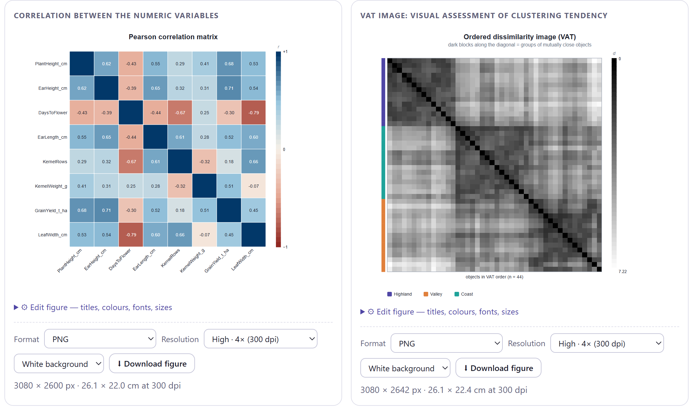
Figure 3.8. On the left, the matrix of Pearson correlations between the numeric variables of the working matrix (blue positive, red negative; the values are printed with up to 18 variables). On the right, the VAT image of the maize landraces: three dark blocks that match the region strip quite well, although the first two touch.
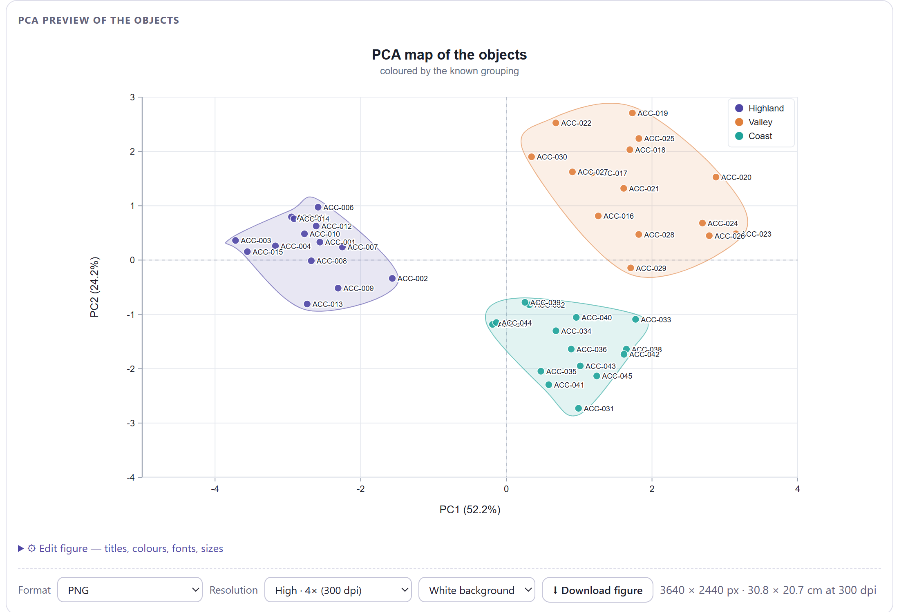
Figure 3.9. The principal component map of the objects (76% of the variance on the first two axes), coloured by the known grouping and with hulls per group. With a distance matrix the map shows principal coordinates (MDS). Labels are shown automatically with up to 60 objects.
iNote · the map is less misleading with the percentage in view
The map shows two axes; the percentage in brackets tells you how much variance they capture. At 76%, what you see is almost everything there is. At 49%, as in the binary example or the uniform noise, half of the variation lies outside the plane, and two objects that look like neighbours may not be. In those cases the VAT and the Hopkins statistic, which use all the dimensions, carry more weight than the map.
3.5The grade and the recommendation
At the top of the fourth card, a one-letter verdict summarises everything above (figure 3.10): the readiness grade (labelled readiness in the app) from A to D, a sentence that explains it, the tiles with the figures that support it, the list of checks and the What to do next card with what you should do in Blocks 3 to 6.
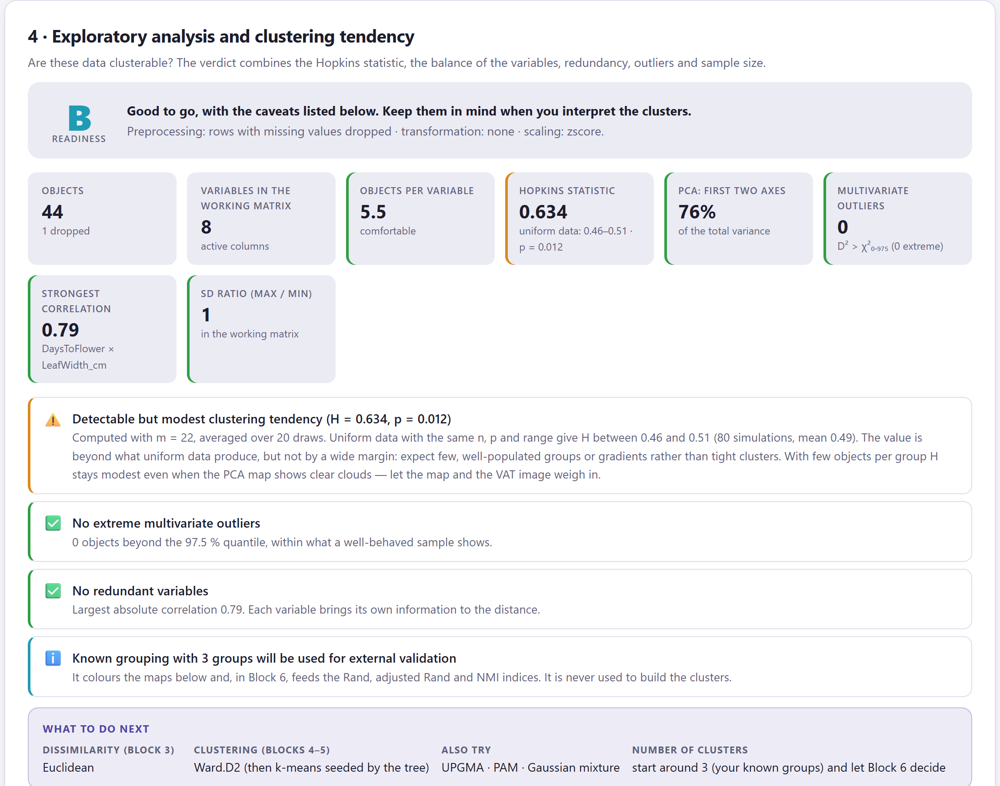
1234
Figure 3.10. The top of the 4 · Exploratory analysis and clustering tendency card with the maize landraces.
1The grade (here B) and the preprocessing line with which it was computed.
2Eight figure tiles (table 3.14); the coloured border repeats the traffic light of each one.
3Interpreted checks (table 3.15).
4What to do next: dissimilarity, method, alternatives and where to start with the number of clusters.
Table 3.14. The figure tiles and their traffic lights.
Tile
What it is
Traffic light
Objects
Objects in the working matrix and how many were dropped because of missing values.
—
Variables in the working matrix
Columns of the matrix; with nominal variables it shows how many are numeric and how many are indicators.
—
Objects per variable
The ratio n / p, counting each nominal variable as one variable.
green ≥ 5 · amber 3–5 · red < 3
Hopkins statistic
H, the uniform band and the P-value.
The rule in section 3.4.
PCA (or MDS): first two axes
Variance captured by the first two axes of the map.
green ≥ 50% · amber 30–50%
Multivariate outliers
Objects with D² above the 97.5% quantile, and how many of them are extreme (99.9%).
amber if they exceed 10% of the objects
Strongest correlation
The largest |r| between numeric variables and which pair produces it.
amber if |r| > 0.95
SD ratio (max / min)
Ratio between the largest and the smallest standard deviation in the working matrix.
amber if > 10
Table 3.15. Checks in card 4 and what they suggest.
Check
Level
What it suggests
Clear / detectable but modest / moderate / weak or no clustering tendency (Hopkins)
✅ ⚠️ ⛔
According to the rule in section 3.4.
N extreme objects (Mahalanobis D² beyond the 99.9 % quantile)
⚠️
Names up to eight objects. Hierarchical methods will isolate them on their own branch and k-means will drag the centres towards them: consider PAM, robust scaling or removing them after checking their values.
N objects beyond the 97.5 % Mahalanobis quantile
⚠️
More than 10% of the objects are far from the centre: heavy tails or an elongated structure. PAM and single linkage suffer less than k-means and Ward.
No extreme multivariate outliers
✅
What a well-behaved sample shows.
X and Y are nearly redundant (|r| = …)
⚠️
Two almost identical variables count twice in the Euclidean distance: remove one or cluster on components (Block 3).
No redundant variables
✅
Each variable contributes information of its own.
Variables with very different spreads and no scaling
⛔
You chose not to scale and the largest SD is more than 10 times the smallest: the distance is that variable. Scale and apply again.
Spreads still differ after transformation
⚠️
Even after scaling, one variable is far more spread out (heavy tails or many identical values); with row-wise transformations this is expected, but make sure a single abundant species does not take over.
Many rows dropped for missing values
⚠️
More than 20% of the objects were dropped: imputation keeps them, and Gower can skip missing pairs.
Known grouping with N groups will be used for external validation
ℹ️
It colours the figures and feeds the Rand, ARI and NMI indices in Block 6.
✓Decision rule · how the grade is computed
Letter
Condition
The app’s sentence
A
No red or amber warnings
The data are ready for clustering: clear tendency, balanced variables, no red flags.
B
One or two amber warnings, no red ones
Good to go, with the caveats listed below. Keep them in mind when you interpret the clusters.
C
One red warning, or more than two amber ones
Clustering is possible but fragile. Address the flagged points, or treat the results as exploratory.
D
Two or more red warnings
These data do not support a clustering analysis as they stand.
Counted as red: weak or no tendency, very different spreads without scaling, and fewer than 8 objects. Counted as amber: modest or moderate tendency, extreme outliers or more than 10% suspect objects, redundant variables, different spreads after transformation, more than 20% of rows dropped, and fewer than 3 objects per variable.
!Important · the grade is not a verdict set in stone
A B with “modest tendency” is the most common result with real data sets of a few dozen objects: the Hopkins statistic is conservative with small samples. Read the grade together with the map and the VAT. A C caused by unscaled spreads is fixed with one click; a C caused by weak tendency deserves a pause: ask yourself whether the variables are the right ones before going on. And an honest D is worth more than a pretty dendrogram.
3.6Settings, tables and figures of the block
The block produces six editable figures, each in its own card with the Edit figure panel and the download controls described in section 1.6. Table 3.16 summarises the controls specific to each one; the style and typography controls are common to all of them.
Table 3.16. The six figures of the block and their specific controls.
Figure
What it shows
Specific controls
Spread of every variable after preprocessing
Boxes for each variable of the working matrix (figure 3.11).
Values (after transformation and scaling, or raw), Order (as in the table, or by spread), Row height, Hide dummy columns, Show mean (◇), palette and legend position.
Correlation between the numeric variables
Matrix of Pearson correlations (figure 3.8, left). It does not appear with purely binary data or with distance matrices.
Colour map, Show values.
PCA (or MDS) preview of the objects
Map of the objects on the first two axes (figure 3.9).
Axis titles, Object labels (automatic, all, none), label and point size, point shape, Convex hulls per group, point colour when there are no groups, palette and legend.
VAT image
Reordered distance matrix (figure 3.8, right).
Colour map (classic greys or another ramp), Known-group strip, palette and legend.
Hopkins statistic
Observed H against the distribution without structure (figure 3.7, left). It does not appear with fewer than 6 objects.
Colour of the observed value and of the null curve.
Multivariate outliers
Mahalanobis D² per object (figure 3.7, right). It does not appear with distance matrices or with fewer than 5 objects.
Sort objects by D², point size, outlier colour, palette and legend.
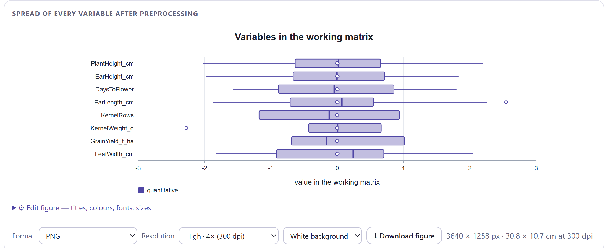
Figure 3.11.Spread of every variable after preprocessing: one box plot per variable of the working matrix, with a diamond at the mean, coloured by type. With z-scores all the boxes are centred on zero and have comparable spread; the circles are values beyond the whiskers.
iNote · what goes into the report
Block 8 includes in the report the variable table, the tiles and checks of cards 2 and 4, and the six figures as you have edited them. If you change a title or a palette here, that is how they will appear in the report. The ⬇ Download the preprocessed matrix (CSV) button saves the working matrix with the labels and the known grouping, in case you want to reproduce the analysis in another program.
3.7Step by step with the seven examples
Each example illustrates a different situation. The steps are always the same: load, review types and roles, apply and read the verdict. The figures in this section are those given by the app with the proposed values; the two simulated examples use a fixed seed, so they are reproducible too.
Table 3.17. The seven examples at a glance, with the values proposed by the app.
Example
n
p
Profile
Preprocessing
H (P)
Grade
Maize landraces
44
8
Quantitative
z
0.634 (0.012)
B
Species presence
30
22
Binary
none
0.559 (0.012)
B
Insect abundance
24
14
Ecological counts
Hellinger, no scaling
0.533 (0.049)
B
Soil profiles
36
14 (8 + 6)
Mixed
range 0–1
0.815 (0.012)
A
Distance matrix
12
7 axes
Matrix
none
0.581 (0.025)
B
Four simulated clusters
80
5
Quantitative
z
0.784 (0.012)
A
Uniform noise
60
5
Quantitative
z
0.474 (0.840)
C
Example 1 · Maize landraces: the quantitative case with one missing cell
▸Step by step
On the home page press Start with my data → and, among the examples, Quantitative · maize landraces. The app reads 45 objects × 10 columns with a decimal point and reports Tidy table.
Review the variable table (figure 3.4): Accession is the label, Region the known grouping (Highland, Valley, Coast) and the eight measurements are active quantitative variables. Note the two warnings: KernelRows has only four integer values (12, 14, 16, 18: kernel rows, a count that is best treated as quantitative here) and LeafWidth_cm has one missing cell.
Read Detected structure (figure 3.5): the spreads differ by more than 20 times (plant height is measured in hundreds of centimetres; yield, in single tonnes), so the route proposes z-scores.
Leave card 3 as it is (drop rows with missing values, no transformation, z) and press Apply and explore →. The message says that 1 row (2%) was dropped and 44 objects remain.
Read the verdict (figure 3.10): B, with a modest tendency (H = 0.634, P = 0.012), no outliers and no redundancies (maximum correlation 0.79, between days to flowering and leaf width). Look at the map (figure 3.9): three clear clouds by region. The VAT (figure 3.8) shows three blocks.
What to do next: Euclidean distance, Ward.D2 followed by k-means, and start with k = 3 because of the three known regions.
Try it yourself: change Missing values to Impute and apply again: all 45 objects are kept and the message reports 1 cell imputed with the mean. Then try Scaling = None (raw units): the SD ratio tile shoots up, the red warning about unscaled spreads appears and the grade drops to C. It is the quickest demonstration of why we standardise.
In the variable table, the 22 species appear as active Binary 0/1, Site as the label and Habitat (Forest, Grassland, Wetland) as the known grouping. The detected structure warns: fewer than 3 objects per variable.
The recommended route does not scale anything and proposes Jaccard (or simple matching if both states are informative) with UPGMA. Apply.
Verdict B: modest tendency (H = 0.559, P = 0.012, computed on 10 components that account for 89% of the variance), no correlations (binary variables are not included in the heat map) and 49% of the variance on the first two axes.
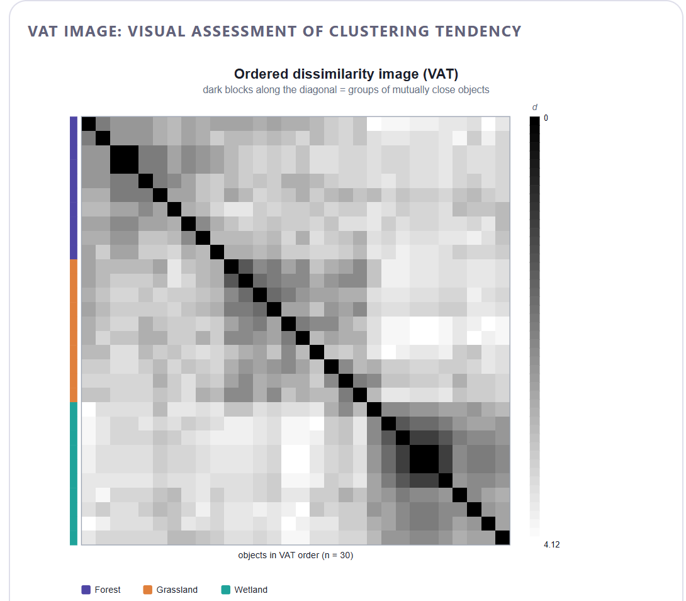
Figure 3.12. The VAT of the 30 sites. With Euclidean distance on zeros and ones the blocks are already hinted at and follow the habitat strip; Block 3 will make them sharper with the Jaccard coefficient, which ignores shared absences.
θWhat you learned
With binary data Block 2 does not scale, and its exploratory analysis is based on the Euclidean distance between the 0/1 values, which equals the square root of the number of mismatches. It is a provisional view: you choose the definitive dissimilarity (Jaccard, Dice, simple matching…) in Block 3, according to what a zero means. That is why the map captures only half of the variance and H is modest: it is not that the sites lack structure, but that it is not yet being measured with the right coefficient.
Example 3 · Insect abundance: counts and Hellinger
The 14 arthropod families appear as Counts with their percentage of zeros (from 0 to 17%); although several have no zeros, the community table rule types them all as counts. Landscape (Organic_field, Conventional, Hedgerow) is the known grouping.
The detected structure says Looks like a community (species × site) table and the route proposes Hellinger without scaling, with Bray–Curtis or Ward.D2 on Hellinger. Apply.
Verdict B: H = 0.533 with P = 0.049, right at the limit; no outliers; maximum correlation 0.82, between aphids and bees. The map (figure 3.13) captures 75% of the variance and separates the three landscapes.
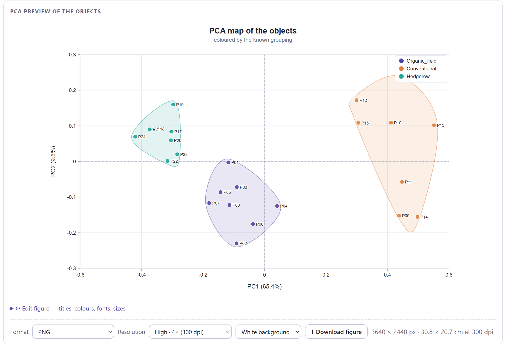
Figure 3.13. Principal component map of the 24 sites after the Hellinger transformation. The three landscapes form separate clouds; the first axis (65%) runs from hedgerows to conventional fields.
Try it yourself: change Transformation to None and Scaling to z-scores, and apply. You will see that the map changes and the grade suffers: standardising by column gives a rare family the same weight as a dominant one, which is exactly the opposite of what ecologists want, and raw Euclidean distances make two sites look similar because of the families that both lack. Hellinger avoids both problems.
Example 4 · Soil profiles: mixed types
▸Step by step
Load Mixed · soil profiles: 36 profiles × 10 columns, with no known grouping.
Look at the variable table: six quantitative variables (pH, organic matter, clay, sand, CEC, slope), Texture as nominal with 6 levels, Drainage as ordinal with 4 recognised levels (poor < moderate < good < excessive) and Calcareous as binary (no = 0, yes = 1). All are active.
The detected structure warns Mixed variable types and the route proposes range 0–1, Gower and PAM. Apply.
Verdict A: clear tendency (H = 0.815, P = 0.012, on 5 components with 93% of the variance), no outliers, maximum correlation 0.94, between clay and CEC (high, but below the redundancy threshold).
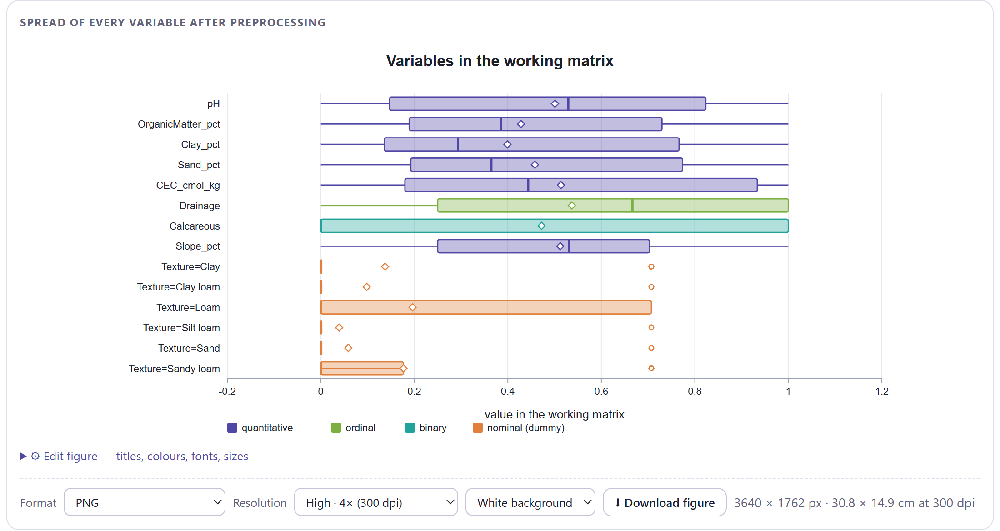
Figure 3.14. The working matrix of the soil profiles: 8 numeric columns (the quantitative variables and drainage as ranks, on a 0–1 scale; the binary variable unscaled) plus 6 indicator columns for texture, in orange, which take the values 0 or 0.7071.
iNote · the indicators are only for exploration
The six Texture=… columns exist so that the map, the VAT and the Hopkins statistic can be computed on a numeric matrix. The Gower distance in Block 3 does not use them: it compares the texture of two profiles by asking whether it matches or not, which is the appropriate treatment for a nominal variable.
Example 5 · Genetic distance matrix
▸Step by step
Load Distance matrix · 12 cultivars. The message says that it was recognised as a distance matrix of 12 objects and that no scaling is applied.
Cards 2 and 3 do not appear. The app applies automatically and shows card 4 with a principal coordinate (MDS) map instead of the principal component map.
Verdict B: H = 0.581 (P = 0.025) on 4 axes with 92% of the variance; the first two axes of the map capture 81%. There are no outlier or correlation tiles because there are no variables.
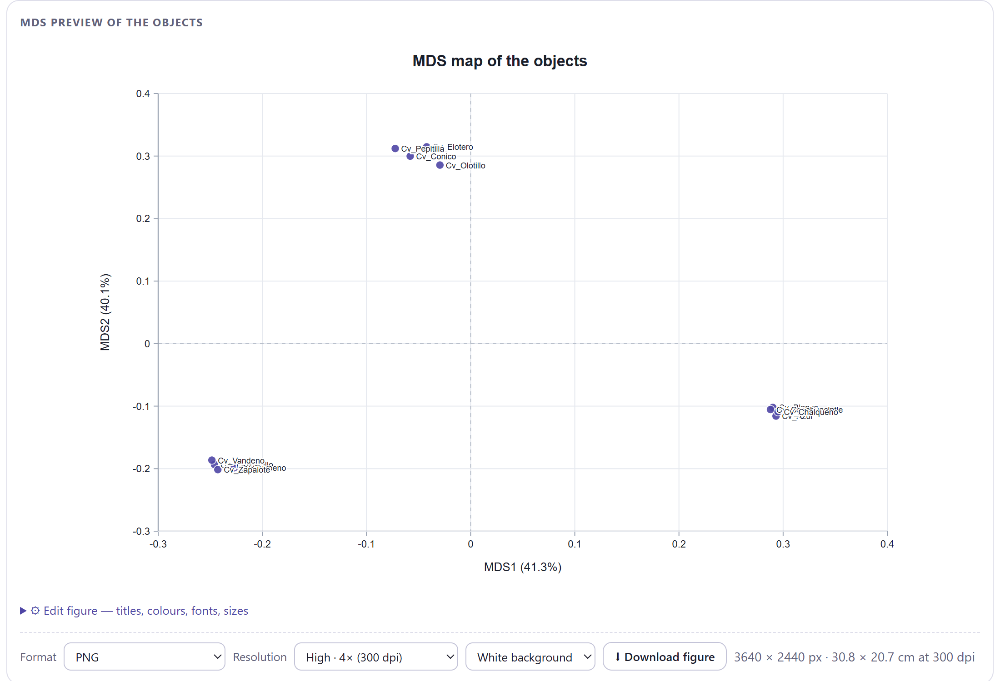
Figure 3.15. Principal coordinates of the 12 cultivars from the genetic matrix: three tight clusters of four cultivars each (Azul, Blanco, Cacahuacintle, Chalqueño; Cónico, Elotero, Olotillo, Pepitilla; Tabloncillo, Tuxpeño, Vandeño, Zapalote). Even with so few objects the labels overlap; the figure editor lets you enlarge the map or remove them.
Examples 6 and 7 · Four simulated clusters and uniform noise
▸Step by step
Load Simulated · four clear clusters: 80 objects × 5 variables generated on the fly around four centres, with the Group column as the known grouping. Apply with the proposed values (z).
Verdict A: H = 0.784 (P = 0.012), 91% of the variance on two axes, one suspect object but no extreme ones. Make a mental note of the Hopkins figure.
Now load Simulated · uniform noise: 60 objects × 5 random variables. The Group column is “none” in every row and therefore appears as Empty and excluded (note in section 3.1).
Apply and compare: verdict C with the red warning Weak or no clustering tendency (H = 0.474, P = 0.840), 49% of the variance on two axes and a maximum correlation of 0.19 (figure 3.17).
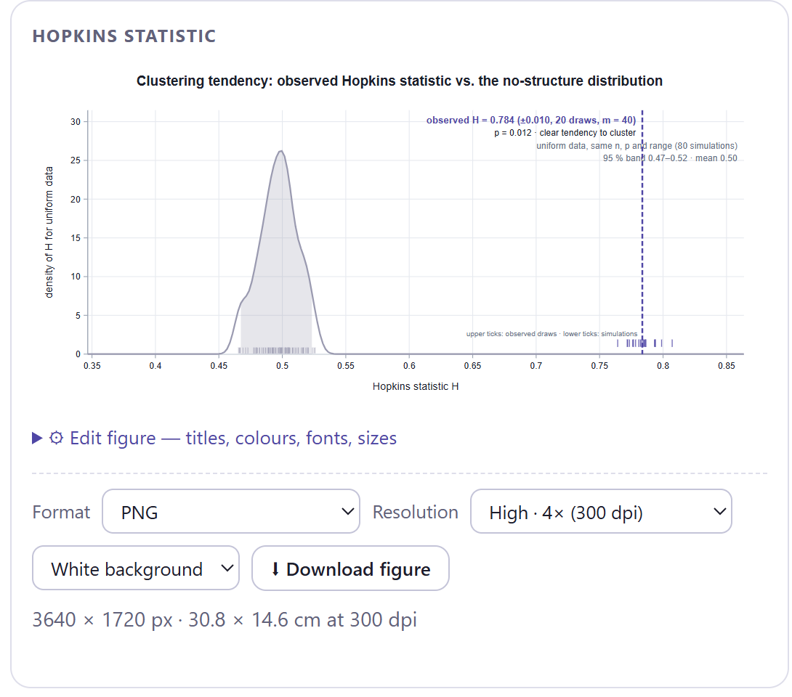
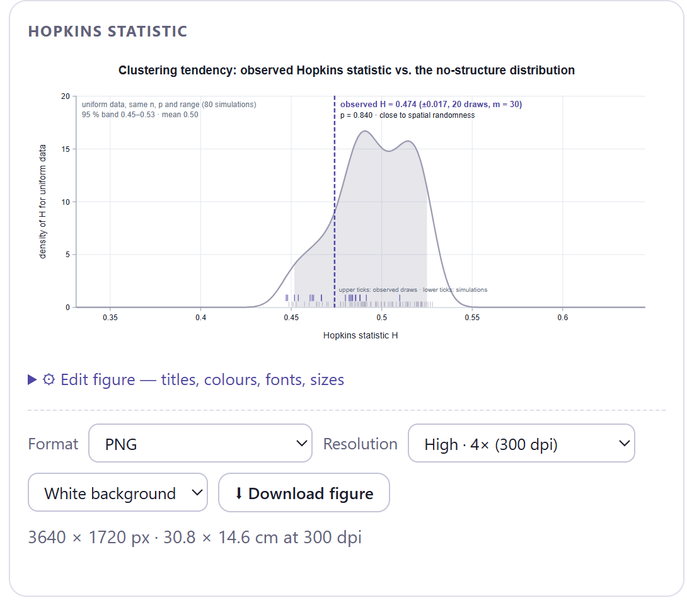
Figure 3.16. The Hopkins statistic with structure (left: H = 0.784, far to the right of the 0.47–0.52 band of the uniform data) and without it (right: H = 0.474, inside the 0.45–0.53 band). In the second case the observed line falls in the middle of the null curve, and the P-value of 0.84 says that 84 out of every 100 random tables give an equal or larger H.
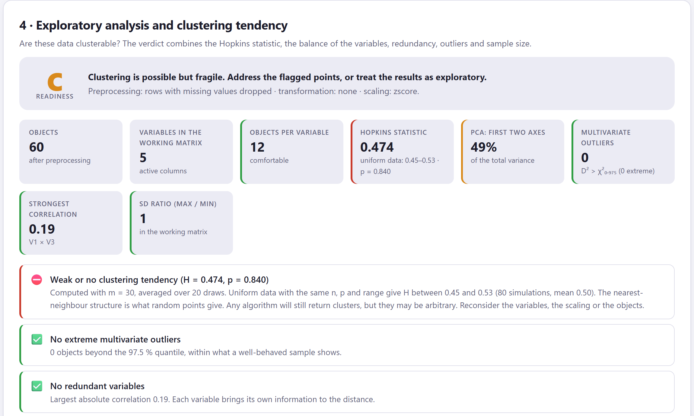
Figure 3.17. The verdict for the uniform noise: C because of a single red warning. All the other tiles are green; nothing in the data except the Hopkins statistic reveals that there are no clusters.
θWhat you learned
The two simulated examples are the yardstick of the block. The four-cluster example shows what an A looks like: H far from the uniform band, a map with much of the variance on two axes, a VAT with sharp blocks. The noise example shows that a table without any clusters can have plenty of objects per variable, no outliers and no redundancies, and still not deserve a dendrogram. When your real data give an H close to 0.5 with a high P, you know what it means: there is nothing to find with those variables, and saying so is a result.
!Important · come back here when you change your mind
Block 2 is not a one-off step. If in Block 3 you discover that one variable dominates, or in Block 7 that a cluster is defined by a single column, come back, change the type, the role or the scaling, apply again, and everything that follows is recalculated from the working matrix. Later blocks are disabled until you recompute them, so that you never mix results from two different preprocessing runs.
With the working matrix built and the tendency checked, the next step is to measure how similar the objects are to one another. The Block 3 chapter presents the 39 similarity and distance coefficients and explains when to use each one according to the type of data, how to diagnose a distance matrix and how to compare coefficients before choosing.
B3
Chapter four · Block 3 · Distances
Similarity and distance
Clustering algorithms never see your variables: they see a matrix of dissimilarities between pairs of objects. How that matrix is computed is the most consequential decision of the whole analysis, more so than the choice of algorithm. This block offers 39 coefficients in six families, diagnoses the matrix they produce, draws it in four ways and lets you compare candidates before you commit.
4.1Similarity, dissimilarity and distance
4.2The 39 coefficients, by data type
4.3Metric and Euclidean: why it matters
4.4Diagnosing the matrix
4.5Comparing coefficients
4.6Settings, tables and figures of the block
4.7Step by step
Block 3 has three cards: 1 · Choose the coefficient, where you choose the family and the coefficient and compute it; 2 · The dissimilarity matrix, with the diagnosis, the neighbours table and five figures; and 3 · Compare candidate coefficients, which measures how much the matrix changes when you change the coefficient. At the top, the theory card summarises in three lessons what this chapter explains at length. The block becomes available once Block 2 has built the working matrix, and everything that follows (trees, partitions, validation) is computed from the matrix you produce here.
4.1Similarity, dissimilarity and distance
These three words are often confused, and it is worth pinning them down now, because the app uses them precisely.
A similaritys measures likeness: it equals 1 when two objects are identical and falls towards 0 the more they differ. The coefficients for binary data (Jaccard, Dice, simple matching…) are similarities.
A dissimilarityd measures difference: it equals 0 for identical objects and grows with the difference. Any similarity becomes a dissimilarity through d = 1 − s, and that is what the app does: every coefficient, whatever its definition, delivers a dissimilarity matrix with zeros on the diagonal.
A distance is a dissimilarity that also satisfies the triangle inequality (section 4.3). Euclidean, Manhattan and Hellinger distances do; Bray–Curtis and many 1 − s conversions do not always. In everyday language “distance” is used for all of them, and so does this manual when there is no risk of confusion.
θTheory in brief · why the coefficient matters more than the algorithm
Two sites with twenty species each may be “similar” because they share many species, because their abundances are proportional, or because both lack the same fifty species of the region. Each coefficient decides which of these things counts, and by how much. The clustering algorithm merely rearranges the numbers it receives: if the matrix says two sites are close, any method will put them together. Switching from UPGMA to Ward moves a few objects; switching from Euclidean to Bray–Curtis can change the very meaning of “cluster”. That is why this block comes before the clustering blocks, and why it includes a tool for comparing coefficients.
The choice card
The first card shows the recommendation that Block 2 derived from the data profile, the coefficient families available for your table, the chosen coefficient with its formula and parameters, and the compute button (figure 4.1).
1234576
Figure 4.1. The 1 · Choose the coefficient card with the maize landraces.
1Recommendation from Block 2: the proposed dissimilarity and the reason for it.
2Family tabs. Only those your data allow are shown: with quantitative variables, Binary (0/1) and Counts & abundances derived from them are offered as well (table 4.2).
3Coefficient: the coefficients of the active family. The proposed one is already selected.
4Data source (quantitative family only): the working matrix from Block 2 or the raw numeric variables.
5The formula, a note and the range of the coefficient. With Minkowski the order p appears; with principal components, how many to keep; with Gower, the panel in figure 4.3.
7Take the square root of the dissimilarity (√d): makes Bray–Curtis, Jaccard, Sørensen and simple matching Euclidean without changing the order of the pairs (section 4.3).
6Compute the dissimilarity matrix →. You can change the coefficient and recompute as often as you like; the following blocks are disabled until you run them again.
4.2The 39 coefficients, by data type
The catalogue is organised into six families that correspond to the data types of Block 2. Table 4.1 tells you which family to use and which to avoid; table 4.2, where each family takes its data from; table 4.3 lists the coefficients with their formula and use. All the formulas are also shown in the app when you select a coefficient.
Table 4.1. Which family to use for each kind of data (the first lesson of the theory card).
Data
Use
Avoid
Quantitative with comparable units (scaled)
Euclidean, Manhattan; Mahalanobis if the variables are correlated; Euclidean on principal components to remove noise
Correlation distances with fewer than about 5 variables
Profiles: expression, spectra, series
1 − Pearson, 1 − Spearman, cosine
Euclidean when only the shape matters
Presence/absence where 0 = absent
Jaccard, Dice, Ochiai, Kulczynski
Simple matching (rewards shared absences)
Binary with two informative states
Simple matching, Rogers and Tanimoto
Jaccard (ignores one of the states)
Abundances, counts
Bray–Curtis, Ružička, Morisita–Horn; Hellinger or chord if you need Euclidean geometry
Raw Euclidean (dominated by abundant species and double zeros)
Nominal / ordinal
Simple matching of categories, ranks for ordinal variables, Gower
Treating category codes as numbers
Mixed types
Gower (optional weights)
Indicators + Euclidean, except with few categories
Table 4.2. The six families and where they take their data from. A family appears as a tab only if the table has what it needs.
Family (tab)
Data used
Appears when…
Quantitative
The numeric columns of the working matrix (quantitative, counts and ordinal as ranks; not binary variables or indicators), or the same variables in raw form if you choose Raw numeric variables.
there is at least one active numeric variable.
Binary (0/1)
The active binary variables. If there are none, the non-negative numeric variables coded as presence (x > 0 → 1); the app says so in the note on the result.
there are binary or non-negative numeric variables.
Nominal / ordinal
Nominal variables (by category match), declared binary variables and ordinal variables (by ranks). Quantitative variables are ignored.
there is at least one nominal, ordinal or binary variable.
Counts & abundances
The raw non-negative numeric variables (without the transformation or scaling of Block 2): each ecological coefficient applies its own standardisation.
there are at least two numeric variables with no negative values.
Mixed (Gower)
All the active variables, each with the dissimilarity appropriate to its type; or the full working matrix for the Euclidean variant.
always.
Supplied matrix
The distance matrix you loaded, as is, square-rooted or squared.
the input was a matrix (in which case it is the only tab).
θTheory in brief · the 2 × 2 table of binary coefficients
For two objects with p binary variables, four quantities are counted: a, the variables in which both have 1; b, those in which only the first has 1; c, those in which only the second does; and d, those in which both have 0. Every binary coefficient is a combination of a, b, c and d (figure 4.2). The key decision is what to do with d, the shared absences: Jaccard, Dice, Ochiai and Kulczynski ignore them (asymmetric coefficients), because the fact that two sites both lack a species does not make them alike; simple matching and Rogers and Tanimoto count them as matches (symmetric), which is correct when 0 and 1 are two equally informative states, such as male/female or allele A/B.
Figure 4.2. The 2 × 2 table that summarises two binary objects, and the most widely used coefficients. Cell d is what divides the two schools.
Table 4.3. The coefficients in the catalogue, by family, with the formula shown by the app. Similarities s are converted with d = 1 − s.
Coefficient
Formula
Range
When to use it
Quantitative · quantitative data
Euclidean
d = √Σ(xᵢ − yᵢ)²
0–∞
The straight line. The default for k-means and Ward; sensitive to scale and outliers.
Squared Euclidean
d = Σ(xᵢ − yᵢ)²
0–∞
What Ward and k-means minimise internally; exaggerates large differences.
Manhattan (city block)
d = Σ|xᵢ − yᵢ|
0–∞
Sum of absolute differences; a single extreme variable has less influence.
Minkowski (order p)
d = (Σ|xᵢ − yᵢ|ᵖ)^(1/p)
0–∞
p = 1 Manhattan, p = 2 Euclidean, large p → Chebyshev.
Chebyshev (maximum)
d = max|xᵢ − yᵢ|
0–∞
Only the largest difference counts.
Canberra
d = Σ|xᵢ − yᵢ| / (|xᵢ| + |yᵢ|)
0–p
Differences relative to magnitude; for positive, skewed data. Terms with xᵢ = yᵢ = 0 are omitted.
Mahalanobis
d = √(x − y)ᵀ S⁻¹(x − y)
0–∞
Euclidean after removing the correlations between variables (computed via principal components).
Euclidean on principal components
d = √Σₖ(PCₖ(x) − PCₖ(y))²
0–∞
Keeps the first k components: removes noise and redundancy before clustering.
Pearson correlation distance
d = 1 − r(x, y)
0–2
Two objects are alike when their profiles rise and fall together, whatever their level. Standard for gene expression.
Absolute Pearson distance
d = 1 − |r(x, y)|
0–1
Opposite profiles also count as alike.
Spearman correlation distance
d = 1 − ρ(x, y)
0–2
Profile likeness based on ranks; robust to outliers and to monotonic transformations.
Kendall correlation distance
d = 1 − τ(x, y)
0–2
Based on concordant and discordant pairs of variables.
Cosine distance
d = 1 − x·y / (‖x‖ ‖y‖)
0–2
The angle between the profiles; ignores their length.
Binary (0/1) · binary data (a, b, c, d as in figure 4.2)
Jaccard
s = a / (a + b + c)
0–1
Asymmetric: shared absences do not count. The default for species and markers.
Dice / Sørensen
s = 2a / (2a + b + c)
0–1
Asymmetric; gives double weight to shared presences.
Simple matching
s = (a + d) / (a + b + c + d)
0–1
Symmetric: 0 and 1 equally informative (male/female, allele A/B).
Rogers & Tanimoto
s = (a + d) / (a + d + 2(b + c))
0–1
Symmetric; mismatches weigh double.
Sokal & Sneath (asymmetric)
s = a / (a + 2(b + c))
0–1
Asymmetric; mismatches weigh double.
Russell & Rao
s = a / (a + b + c + d)
0–1
Shared presences over all variables; absences reduce similarity.
Ochiai
s = a / √((a + b)(a + c))
0–1
The cosine similarity for binary data.
Kulczynski
s = ½ [a/(a + b) + a/(a + c)]
0–1
Mean of the two conditional proportions of shared presences.
Hamming (mismatches)
d = b + c
0–p
Number of variables in which the two objects differ.
Yule
d = (1 − Q)/2, Q = (ad − bc)/(ad + bc)
0–1
Association-based; 0.5 means independence.
Nominal / ordinal · categorical data
Simple matching (categories)
d = variables with different categories / p
0–1
Proportion of non-matching categories, over the nominal (and binary) variables.
Manhattan on normalised ranks
d = Σ|rank(xᵢ) − rank(yᵢ)| / (kᵢ − 1) / p
0–1
Ordinal variables compared by rank, each rescaled to 0–1.
Gower (categorical + ordinal)
d = mean of the 0–1 dissimilarity of each type
0–1
Simple matching for nominal variables, rank difference for ordinal ones, Jaccard-style for binary ones.
Counts & abundances · ecological data (X, Y = totals of each object)
Bray–Curtis
d = Σ|xᵢ − yᵢ| / Σ(xᵢ + yᵢ)
0–1
The workhorse for community tables; ignores double zeros; 1 = no species in common. Not Euclidean (use √d for Ward).
Ružička (quantitative Jaccard)
d = 1 − Σmin(xᵢ, yᵢ) / Σmax(xᵢ, yᵢ)
0–1
Jaccard generalised to abundances.
Kulczynski (quantitative)
d = 1 − ½ [Σmin/X + Σmin/Y]
0–1
Less sensitive than Bray–Curtis to differences in total abundance.
Morisita–Horn
d = 1 − 2Σxᵢyᵢ / [(Σxᵢ²/X² + Σyᵢ²/Y²) X Y]
0–1
Almost independent of sample size; emphasises the dominant species.
Hellinger distance
d = √Σ(√(xᵢ/X) − √(yᵢ/Y))²
0–√2
Euclidean distance between square roots of relative abundances; suitable for Ward, k-means and PCA.
Chord distance
d = √Σ(xᵢ/‖x‖ − yᵢ/‖y‖)²
0–√2
Euclidean distance between profiles rescaled to unit length.
Chi-square distance
d = √(Σ₊₊) · √Σⱼ(1/cⱼ)(xⱼ/X − yⱼ/Y)²
0–∞
The distance of correspondence analysis; rare species weigh more.
Canberra (abundances)
d = Σ|xᵢ − yᵢ| / (xᵢ + yᵢ), over species present in at least one object
0–p
Every species weighs the same, whatever its abundance.
Each variable contributes 0–1; quantitative variables are scaled by their range internally, so the scaling of Block 2 has no effect here.
Euclidean on the working matrix
d = √Σ(xᵢ − yᵢ)² over scaled columns and indicators
0–∞
The quick alternative: categories become 0/1 columns with weight 1/√2. Less well founded than Gower.
Supplied matrix · loaded matrix
As supplied
d = D
—
Your matrix, unchanged.
Square root
d = √D
0–√max
Makes many non-Euclidean dissimilarities Euclidean (Bray–Curtis, Jaccard), which benefits Ward and PCoA.
Squared
d = D²
0–max²
When your matrix holds square-rooted distances and you need the original scale.
Figure 4.3. The Gower panel with the soil profiles: the Mixed (Gower) tab, the formula, the Binary variables menu (asymmetric, ignoring shared absences, or symmetric) and, expanded, Variable weights with one weight per variable (1 by default, from 0 to 10).
iNote · Gower weights
A weight of 2 on a variable makes it count twice; a weight of 0 removes it from the calculation without changing its role in Block 2. This is the clean way to give more importance to a decisive measurement (for example, texture in soil profiles) or to test how much the matrix changes without a doubtful variable. If you use weights, report them in the methods: the automatic paragraph in Block 8 includes them.
4.3Metric and Euclidean: why it matters
Not all dissimilarities behave like distances on a map. Two properties determine which methods you can apply without distortion, and the app checks both on every matrix.
θTheory in brief · two properties
A dissimilarity is metric when it satisfies the triangle inequality: for any three objects, d(x, z) ≤ d(x, y) + d(y, z). This is what you expect of a real distance: going from x to z via y cannot be shorter than going directly. It is Euclidean (more precisely, Euclidean-embeddable) when the objects can be placed as points in some Euclidean space so that the distances between the points reproduce all the d exactly. Every Euclidean dissimilarity is metric; the converse does not always hold.
This matters because Ward, k-means on coordinates and principal coordinates analysis (PCoA, the map in this block) assume Euclidean geometry. On a non-Euclidean matrix they still run, but they distort: the PCoA percentages no longer add up properly, negative eigenvalues appear and Ward may merge clusters in a strange order. The usual remedy is to take the square root of the dissimilarity: √d is Euclidean for Bray–Curtis, Jaccard, Sørensen and simple matching. Single, complete and average linkage and PAM, on the other hand, need only the matrix: any dissimilarity, metric or not, will do.
The app checks both properties when it computes the matrix:
Triangle inequality: all triples of objects are tested (up to 120 objects; beyond that, a sample of 200,000 triples) and the percentage of violations is reported. Zero violations = metric.
Euclidean embeddability: the double-centred matrix of the PCoA is decomposed and the fraction of the eigenvalue mass that is negative is measured. At 0% the matrix is exactly Euclidean; below 1% it is considered Euclidean; between 1 and 10%, nearly; above 10%, not.
✓Decision rule · what to do according to the diagnosis
If the matrix…
then
is Euclidean (negative mass < 1%)
Anything goes: Ward, k-means on the PCoA axes, PCoA percentages.
is nearly Euclidean (1–10%)
Ward and PCoA are acceptable; the percentages are approximate.
is not Euclidean (≥ 10%)
Prefer UPGMA, complete linkage or PAM. If you want Ward or k-means, tick Take the square root of the dissimilarity (√d) on card 1 and recompute (with a loaded matrix, choose Square root on the Supplied matrix tab).
is not metric (violates the triangle inequality)
Hierarchical methods work (centroid and median linkage may show inversions); k-means needs coordinates: use PAM or a PCoA.
4.4Diagnosing the matrix
When you click Compute the dissimilarity matrix →, the second card appears (figure 4.4): seven summary boxes, a list of interpreted checks, the table of each object’s three nearest neighbours and the figures described in section 4.6.
123
Figure 4.4. The 2 · The dissimilarity matrix card with the Euclidean distance for the maize landraces.
1The seven boxes (table 4.4), with their traffic-light colour on the border.
2Checks (table 4.5). The first always states which data the matrix was computed from and which variables were included.
3Nearest neighbours of every object: the neighbours table (figure 4.5), collapsed.
Table 4.4. The diagnostic boxes.
Box
What it is
Traffic light
Coefficient
The coefficient and its parameter (order p, components kept, type of binary variables in Gower).
—
Objects
Objects and number of pairs, n(n − 1)/2.
—
Range of d
Minimum, maximum, mean and median of the dissimilarities.
—
Identical pairs (d = 0)
Pairs of objects at zero distance: duplicates or ties.
amber if they exceed 5% of the objects
Triangle inequality
holds (metric) or the percentage of triples that violate it.
green if it holds, amber if not
Euclidean embeddable
yes, nearly or no, with the percentage of negative mass.
green < 1% · amber 1–10% · red ≥ 10%
2-D map quality
The stress of the PCoA map and the variance captured by its two axes.
green < 0.1 · amber 0.1–0.2 · red ≥ 0.2
Table 4.5. Checks on the matrix and what they suggest.
Check
Level
What it suggests
Computed on… / Variables used
ℹ️
Which data the matrix came from (working matrix, raw variables, binary variables, counts, the loaded matrix) and which variables were included. Check it: it is easy to compute an ecological coefficient on variables that are not counts.
N pairs of objects at distance 0
ℹ️ ⚠️
Names the identical pairs. They will always be merged first; with many ties the order of the dendrogram becomes arbitrary.
The coefficient is not a metric
⚠️
Percentage of triples that violate the triangle inequality, and which methods to avoid (rule in section 4.3).
Euclidean-embeddable / Nearly Euclidean / Not Euclidean-embeddable
✅ ℹ️ ⚠️
According to the negative mass; the red warning suggests the square root.
The 2-D map is a poor summary
⚠️
Stress ≥ 0.2: distant pairs are poorly placed on the plane. Judge similarity from the heat map and the tree, not from the map.
Wide spread of dissimilarities
ℹ️
Coefficient of variation of the dissimilarities > 0.45: some pairs are much closer than others, a good sign. Look for two peaks in the distribution figure.
All pairs are about equally dissimilar
⚠️
Coefficient of variation < 0.15: the objects are evenly spread, which happens with many dimensions or with no structure. Clusters will be fragile.
Known groups: between-group distances are N× the within-group ones
✅ ℹ️ ⚠️
Ratio of the mean dissimilarity between known groups to that within them: > 1.5, the coefficient separates the grouping well; 1.1–1.5, modestly; below that, it barely distinguishes it: try another one in the comparison.
Figure 4.5.Nearest neighbours of every object: for each object, its three nearest neighbours with the dissimilarity in brackets. ACC-001 and ACC-012 are each other’s nearest neighbour (0.712): they will be the first merge in any tree.
√d
Fact · the square root fixes more than it seems
Bray–Curtis, Jaccard, Sørensen and simple matching are not Euclidean, but their square roots are. That is why card 1 has the Take the square root of the dissimilarity (√d) checkbox, and the Supplied matrix tab the Square root option: with a single click, a matrix that produced negative eigenvalues becomes suitable for Ward, k-means on PCoA and reliable percentages. UPGMA and complete-linkage trees are the same with d or with √d, because the square root preserves the order of the distances.
4.5Comparing coefficients
How much does the choice matter for your data? The third card answers with numbers: tick several coefficients, and the app recomputes each matrix and correlates their pairwise dissimilarities. If all the matrices say the same thing, the choice is harmless; if not, your clusters depend on it and you should say so in your paper.
Figure 4.6. The 3 · Compare candidate coefficients card with the maize landraces. Each checkbox carries the label of its family; the app ticks in advance the coefficient in use and the typical candidates of its family. When you click Compare, the paragraph interpreting the result, figure 4.7 and the correlation table appear below.
Figure 4.7.Agreement between coefficients: the Pearson correlation between the dissimilarities of each pair of coefficients (the editor lets you switch to Spearman). Euclidean and Manhattan almost coincide (0.98); Canberra and the Pearson correlation distance differ the most (0.76).
Table 4.6. How the app reads the comparison. The decisive correlation is the lowest one among all the pairs.
Minimum correlation
App message and consequence
> 0.90
All the coefficients agree closely: the choice matters little; the clusters should be stable across coefficients.
0.70–0.90
The coefficients agree moderately: expect some objects to change cluster depending on the coefficient; choose on theoretical grounds (data type, double zeros, scale) and check stability in Block 6.
< 0.70
The coefficients disagree substantially: your clusters depend on this decision. Prefer the coefficient that matches the data type and the question, and report the comparison.
Besides the paragraph and the figure, the table Pearson correlation between the pairwise dissimilarities of each coefficient repeats the correlations and, if there is a known grouping, adds the column Between / within (known groups): the ratio of between-group to within-group distances for each coefficient. The paragraph names the one with the highest ratio. This is a hint, not a verdict: a high ratio says that the coefficient separates your known groups, which are not always the clusters you want to discover.
!Important · comparing is no substitute for choosing
The comparison measures agreement, not correctness. Four coefficients can agree on an inappropriate result if they all ignore what matters (for example, four Euclidean-type coefficients on untransformed abundances). Choose first according to the nature of the data (table 4.1) and use the comparison to judge how much caution to apply when interpreting and what to report. And remember that the comparison is made with the current parameters (data source, p, Gower weights).
4.6Settings, tables and figures of the block
The block produces five figures of the matrix and a sixth for the comparison, all editable and exportable like those of Block 2 (table 4.7). The first four are read together: the heat map shows the whole matrix, the PCoA summarises it on a plane, the Shepard diagram tells you how far that plane can be trusted, and the distribution tells you whether close and distant pairs are clearly separated.
Figure 4.8.Dissimilarity matrix as a heat map: the Euclidean matrix of the 44 maize landraces with the objects in VAT order (near neighbours together), yellow = close. The colour strips repeat the known grouping; the three light blocks on the diagonal match the three regions. With 18 objects or fewer, the values are printed in the cells.
Figure 4.9.Principal coordinates (classical MDS) of the dissimilarity: the best plane for the matrix, with the stress and variance in the subtitle, hulls by known group and automatic labels for up to 60 objects. With the Euclidean distance on the working matrix it coincides with the component map of Block 2; with any other coefficient it is the only way to “see” the matrix on a plane.
✓Decision rule · how to read the stress of the map
Stress
Reading
< 0.10
The map reproduces the distances well: you can reason from it.
0.10–0.20
Acceptable representation; read distant pairs with caution and confirm on the heat map.
≥ 0.20
Poor two-dimensional representation: trust the matrix (heat map, neighbours table, tree), not the map.
Stress is computed after linearly rescaling the map distances, because classical PCoA always shrinks them slightly; this way it measures only the distortion, not that harmless shrinkage.
Figure 4.10. On the left, the Shepard diagram: each point is a pair of objects, with its original dissimilarity on the horizontal axis and its distance on the map on the vertical axis; the closer the points hug the diagonal, the more faithful the map (here r² = 0.942, stress 0.171: acceptable, but distant pairs should be read with caution). On the right, the Distribution of the pairwise dissimilarities with its density curve, mean and median: two peaks, one of close pairs around 2 and another of distant pairs around 4.5, which is exactly what is expected when there are clusters.
Figure 4.11.Nearest-neighbour network: on the PCoA map, each object is joined to its k nearest neighbours (3 by default); thick edges are mutual neighbourhoods and grey ones cross between known groups. In the maize data there are no grey edges at all: the three regions form three closed networks, which anticipates that the clusters found in Block 4 will match them.
Table 4.7. The six figures of the block and their specific controls.
Figure
What it shows
Specific controls
Dissimilarity matrix as a heat map
The full matrix as an image (figure 4.8).
Object order (VAT, UPGMA tree order, by known grouping, table order), Colour map, Dark = similar, Show values (n ≤ 18), labels, Known-group strips, palette and legend.
Principal coordinates (classical MDS)
The PCoA map (figure 4.9).
Titles and axes, labels and their size, point size and shape, Convex hulls per group, colour without groups, palette and legend.
Shepard diagram
Faithfulness of the map (figure 4.10, left).
Title, point colour, palette.
Distribution of the pairwise dissimilarities
Histogram and density of the dissimilarities (figure 4.10, right).
Title, Bins (0 = automatic), bar and curve colour, palette.
Nearest-neighbour network
Network of k neighbours on the PCoA (figure 4.11).
Title, Neighbours (k) from 1 to 10, labels, point size, colour of between-group edges, palette and legend.
Agreement between coefficients
Correlations between coefficients (figure 4.7).
Title, Use Spearman (rank) correlation, Colour map.
iNote · downloading the matrix
⬇ Download the matrix (CSV) saves the full matrix with the object labels in the first row and the first column, to six decimal places. That file can be loaded back into Block 2 as a distance matrix, or taken to another program. The Block 8 report includes the boxes, the checks, the neighbours table and the figures as you edited them.
4.7Step by step
With each example from Block 2 already applied with its proposed values, Block 3 proposes a coefficient and ticks a few candidates for comparison in advance. Table 4.8 summarises what you will obtain; the exercises that follow dwell on what each case teaches.
Table 4.8. The seven examples with the proposed coefficient: diagnosis and comparison.
Example
Coefficient
Pairs
Euclidean (negative mass)
Stress
Between / within
Comparison: minimum r
Maize landraces
Euclidean
946
yes (0%)
0.171
1.94
0.76 (Canberra vs Pearson): moderate agreement
Species presence
Jaccard
435
nearly (4.7%)
0.279
1.60
0.94 (Dice vs simple matching): close agreement
Insect abundance
Bray–Curtis
276
nearly (4.1%)
0.230
1.89
0.96 (Ružička vs Morisita–Horn): close agreement
Soil profiles
Gower
630
nearly (5.1%)
0.129
—
0.98 (Gower vs Euclidean with indicators)
Distance matrix
As supplied
66
nearly (7.2%)
0.185
—
1.00 (as supplied vs square root)
Four simulated clusters
Euclidean
3,160
yes (0%)
0.070
4.18
0.90 (Euclidean vs Canberra): moderate agreement
Uniform noise
Euclidean
1,770
yes (0%)
0.319
—
0.56 (Euclidean vs Canberra): substantial disagreement
Exercise 1 · Maize landraces: Euclidean distance and its alternatives
▸Step by step
With the maize data applied in Block 2, click Continue to similarity and distance → or the 3 Distances button on the bar. The recommendation is Euclidean; the active tab is Quantitative and the coefficient is Euclidean on the working matrix (figure 4.1).
Click Compute the dissimilarity matrix →. Read the boxes (figure 4.4): 946 pairs, dissimilarities from 0.712 to 7.223, no identical pairs, metric and exactly Euclidean (as expected: the Euclidean distance always is), stress 0.171 with 76% of the variance on two axes.
The checks add that the distances between regions are 1.94 times the distances within each region: the coefficient separates the known grouping well.
Open the neighbours table (figure 4.5) and scroll down through figures 4.8 to 4.11: three blocks in the heat map, three clouds in the PCoA, two peaks in the distribution and no grey edges in the network.
On the third card, leave the four candidates ticked (Euclidean, Manhattan, Canberra, Pearson) and click Compare (figures 4.6 and 4.7).
θWhat you learned
Euclidean and Manhattan are almost indistinguishable (r = 0.98): with standardised variables and no outliers, choosing between them is a matter of taste. The Pearson correlation distance is a different matter: it compares the shape of each accession’s profile (tall but with a short ear, for example) and ignores its overall level, and even so it separates the regions better (ratio 2.62 versus 1.94). With only eight variables the correlation between profiles is noisy, so the Euclidean distance remains the sensible choice; but the comparison tells you that if a reviewer asked for a “correlation distance”, the clusters would change only in part (r = 0.81 with the Euclidean distance).
Exercise 2 · Species presence: Jaccard and double zeros
▸Step by step
With the binary example applied, go to Block 3. There are only three tabs: Binary (0/1), Nominal / ordinal and Mixed (Gower), because there are no quantitative variables. The proposed coefficient is Jaccard.
Compute. Boxes: 435 pairs, dissimilarities from 0 to 1 with a mean of 0.752, 2 identical pairs (S02 = S09 and S21 = S24: sites with exactly the same species), metric, nearly Euclidean (4.7% negative mass in 11 eigenvalues) and stress 0.279: the flat map is a poor summary.
Look at the heat map (figure 4.12): three blocks that match the habitats, with the Wetland block very sharp. The distances between habitats are 1.60 times those within them.
Compare Jaccard, Dice, simple matching and Ochiai: all correlate above 0.94; Dice and Ochiai are almost identical (r = 1.00).
Figure 4.12. The Jaccard matrix of the 30 sites in VAT order. Compare it with the Euclidean VAT of Block 2 (figure 3.12): with a coefficient that ignores shared absences the blocks are sharper, and the two pairs of identical sites appear as yellow cells off the diagonal.
θWhat you learned
The fact that Jaccard and simple matching correlate at 0.94 here does not contradict the double-zero theory: this table has 22 species and few shared absences between sites from different habitats. With a regional table of 200 species, in which each site has 15, simple matching would declare all sites alike (they share 170 absences) and the correlation would drop. The rule still stands: for species presence/absence, use asymmetric coefficients. And high stress (0.279) is normal with binary data: the dissimilarities take few distinct values and a plane cannot reproduce them; read the heat map and, in Block 4, the tree.
Exercise 3 · Insect abundance: Bray–Curtis and company
▸Step by step
With the insect data applied (Hellinger in Block 2), go to Block 3. The active tab is Counts & abundances and the coefficient is Bray–Curtis. Pay attention to the note on the result: it is computed on the raw counts, not on the transformed working matrix.
Compute: 276 pairs, dissimilarities from 0.153 to 0.794, metric, nearly Euclidean (4.1%), stress 0.230 (the map is a poor summary, even though it captures 71% of the variance), and the distances between landscapes are 1.89 times those within them.
Compare Bray–Curtis, Ružička, Morisita–Horn and Hellinger (figure 4.13): close agreement, minimum correlation 0.96. Morisita–Horn gives the highest between/within ratio (3.26).
Go back to Bray–Curtis, tick Take the square root of the dissimilarity (√d) and compute (figure 4.14): the matrix becomes exactly Euclidean (0% negative mass) with the same order of pairs; on the other hand, the flat map gets worse (stress 0.343) and the between/within ratio drops to 1.37, because the square root compresses large differences.
Try Hellinger distance as the main coefficient and compute again: the matrix becomes exactly Euclidean, which opens the door to Ward and k-means in the following blocks.
Figure 4.13. The comparison of four ecological coefficients with the 24 insect sites: all correlations lie between 0.96 and 0.99. For these data the choice is harmless and you can make it on geometric grounds: Hellinger if you want Ward or k-means, Bray–Curtis if you are going to use UPGMA or PAM.
Figure 4.14. Bray–Curtis with the square root: the Euclidean embeddable box changes to yes with 0% negative mass and the note on the result adds Square root taken. The stress of the map rises to 0.343: the square root evens out the dissimilarities and a plane reproduces them less well, but the UPGMA and complete-linkage trees will be identical to those from the matrix without the square root.
Exercise 4 · Soil profiles: Gower
▸Step by step
With the soil data applied, go to Block 3. There are five tabs (the quantitative variables also allow derived binary variables and counts) and the active one is Mixed (Gower), with asymmetric binary variables and all weights set to 1 (figure 4.3).
Compute: 630 pairs, dissimilarities from 0.038 to 0.869, metric, nearly Euclidean (5.1%), stress 0.129 with 86% of the variance on two axes; the spread check reports Wide spread of dissimilarities (coefficient of variation 0.52): a good sign.
Look at the PCoA (figure 4.15): with no known grouping there are no colours, but three clear clouds and one outlying profile (PR-01) can be seen.
Compare Gower with Euclidean on the working matrix: r = 0.98. With six texture categories and a single nominal variable, the indicator coding of Block 2 almost reproduces Gower.
Figure 4.15. PCoA of the Gower distance between the 36 profiles: three clouds (left, centre and right) and profile PR-01 set apart at the bottom. The first axis alone captures 76% of the positive variance.
Try it yourself: open Variable weights, set Texture to 3 and compute again. The stress and the clouds change little, but the neighbours table reorganises itself by texture. Then try Binary variables = Symmetric: with a single binary variable (calcareous yes/no) the effect is small, but with a battery of markers absent from most profiles it would be large.
Exercise 5 · Distance matrix: as supplied or square-rooted
▸Step by step
Load the genetic matrix in Block 2 and go to Block 3. There is a single tab, Supplied matrix, with three options: as supplied, square root and squared.
Compute with As supplied (figure 4.16): 66 pairs, dissimilarities from 0.15 to 0.61 with a median of 0.54 (most pairs are distant), metric, nearly Euclidean (7.2% negative mass in 4 eigenvalues), stress 0.185.
The heat map prints the values in the cells because there are 12 objects or fewer: three blocks of four cultivars, with distances of 0.15 to 0.22 within blocks and 0.5 to 0.6 between them.
Compare As supplied with Square root: r = 1.00. Now compute with the square root: the negative mass falls and the Euclidean diagnosis improves, without changing the order of any pair.
Figure 4.16. The diagnosis of the genetic matrix of 12 cultivars used as supplied: metric, nearly Euclidean (7.2%) and with a map of medium quality (stress 0.185).
Exercise 6 · Four clusters and noise: when the coefficients disagree
▸Step by step
Load and apply Simulated · four clear clusters; in Block 3 compute the Euclidean distance: 3,160 pairs, stress 0.070 (the map is faithful), coefficient of variation 0.46 and between-group distances 4.18 times the within-group ones. Compare the four candidates: minimum correlation 0.90 (Euclidean vs Canberra).
Now load and apply Simulated · uniform noise and compute the Euclidean distance: stress 0.319 and the poor-map warning (49% of the variance), and a distribution with a single peak (figure 4.17).
Compare the same four coefficients: the minimum correlation drops to 0.56 and the app warns The coefficients disagree substantially.
Figure 4.17. Uniform noise seen from Block 3: the Shepard diagram fans out (r² = 0.496, stress 0.319) and the distribution of dissimilarities is a single bell centred on 3.0, without the peak of close pairs that clusters produce.
θWhat you learned
When there is real structure, reasonable coefficients agree because they all “see” the same gaps between clusters; disagreement appears only in the details. Without structure, each coefficient ranks the pairs in its own way and the matrices are weakly correlated: there is nothing to see, and each one makes up something different. That is why a comparison with low correlations is not only a warning about the choice but also a second signal (after the Hopkins statistic) that there may be no clusters. The distribution of dissimilarities confirms it: a single peak, with all pairs at similar distances.
!Important · what to report from this block
In the methods section: the coefficient (with its parameter, if any), the data it was computed on (standardised working matrix, raw counts, declared binary variables), whether it is metric and Euclidean and, if you made a comparison, the minimum correlation between candidates. One sentence is enough: “The Bray–Curtis distance was computed on the raw abundances (metric, nearly Euclidean: 4.1% negative mass); Ružička, Morisita–Horn and Hellinger produced matrices correlated with it above 0.96.” The automatic paragraph in Block 8 writes it with your values.
With the dissimilarity matrix computed and diagnosed, the next chapter uses it to build the trees: the eight linkage rules and the divisive method, cophenetic correlation, how to cut the tree, the dendrogram studio with all its drawing options, the heat map with trees and the comparison of linkages by means of tanglegrams.
B4
Chapter five · Block 4 · Hierarchical
Hierarchical clustering
From the matrix of Block 3 a tree is built: each object starts on its own and clusters are merged until only one remains. This chapter explains the ten rules that decide how clusters are merged, the three numbers that tell you whether the tree deserves your trust, how to cut it, the dendrogram studio with its six layouts and more than forty settings, the heat map with trees, and the comparison of rules by means of tanglegrams.
5.1Agglomerative and divisive
5.2Linkage rules
5.3Cophenetic correlation and tree coefficients
5.4Cutting the tree
5.5The dendrogram studio
5.6Heat map with trees
5.7Comparing linkages and tanglegrams
5.8Step by step
Block 4 has three cards. In 1 · Build the tree you choose the linkage rule and build the tree. In 2 · The tree and its cut you evaluate it, cut it into clusters and draw it. In 3 · Compare linkage rules and draw tanglegrams you compare it with the trees produced by other rules. At the top, the theory card sums up in three lessons what to look at before trusting a tree. The block becomes available as soon as Block 3 computes a dissimilarity matrix.
5.1Agglomerative and divisive
Hierarchical clustering does not produce a single partition but a whole family of nested partitions: from n clusters of one object each to a single cluster containing them all. It is represented by a dendrogram, in which the height of each merge is the dissimilarity at which the two branches were joined. There are two ways to build it (figure 5.1).
Figure 5.1. The two ways of building a hierarchy. Both give the same kind of tree, with a height at each merge, and everything the block offers (cut, studio, comparison) applies equally to both.
The agglomerative method starts with each object in its own cluster and, at each step, merges the two closest clusters and recomputes the distance from the new cluster to all the others. After n − 1 merges a single cluster remains. What “closest” means is decided by the linkage rule (section 5.2). ClusteringPro implements nine agglomerative rules.
The divisive method DIANA goes the opposite way. It starts with all objects together, takes the cluster with the largest diameter (the largest dissimilarity between two of its members), starts a splinter group with the object that is farthest, on average, from the others, and moves into it the objects that are closer to it than to the rest. It repeats this until every object stands alone. It tends to recover a few large clusters better, because its first decisions, those at the top of the tree, are made by looking at all the objects.
Figure 5.2. The 1 · Build the tree card with the maize landraces. The recommendation comes from the Block 3 diagnosis: with a Euclidean matrix it proposes Ward.D2 and explains why. When you choose Flexible beta (Lance–Williams), the β for flexible linkage field also appears.
✓Decision rule · which rule the app proposes
If the Block 3 matrix…
then
is Euclidean or nearly so (negative mass < 5%)
Ward.D2: compact clusters of similar variance. The alternative is UPGMA if what matters is how faithfully the tree reproduces the distances. With community tables it adds that UPGMA on Bray–Curtis remains the classic choice.
is not Euclidean (negative mass ≥ 5%)
UPGMA (average), which needs only the matrix. If you want Ward, go back to Block 3 and tick the square root (√d).
iNote · size and time
Agglomeration works on the full matrix, and its cost grows with the cube of the number of objects. With a few hundred objects the tree takes less than a second; the app accepts up to 1500. The rule comparison in card 3 is limited to 600 objects. For larger tables, use the partitioning methods of Block 5.
5.2Linkage rules
When two clusters are merged, one must decide how far the new cluster lies from each of the others. That decision is the linkage rule, and it changes the shape of the clusters the tree produces (figure 5.3). All the agglomerative rules in the app are computed with the Lance–Williams update formula (table 5.1), the same one used by the reference statistical software.
Figure 5.3. What each rule measures between two clusters. The red line is the distance the rule uses to decide whether those two clusters are the next to be merged. Ward does not measure a distance but how much the within-cluster sum of squares would grow if they were merged, which depends on the distance between centroids and on the size of the clusters.
θTheory in brief · the Lance–Williams formula
If clusters i and j, with ni and nj objects, are merged, the distance from the new cluster to any other cluster k is computed from the distances already known:
Each rule is a choice of the four coefficients (table 5.1). At no step is it necessary to go back to the original data, which is why any rule can be applied to a dissimilarity matrix, although the centroid, median and Ward rules only make geometric sense if that matrix is Euclidean. For those three, the app squares the distances before agglomerating and takes the square root of the heights, so that the dendrogram axis stays in the units of the matrix.
Table 5.1. The ten rules in the Linkage rule menu, with their Lance–Williams coefficients (for centroid, median and Ward they apply to squared distances; nijk = ni + nj + nk).
In the app
αi · β · γ
Character
Ward.D2 (minimum variance)
(ni + nk)/nijk · −nk/nijk · 0
Merges the clusters that least increase the within-cluster variance. Compact clusters of similar size. Requires Euclidean distances.
Average · UPGMA
ni/(ni + nj) · 0 · 0
Mean of all dissimilarities between members. Balanced; it usually gives the highest cophenetic correlation. A classic in taxonomy and ecology.
Complete (farthest neighbour)
½ · 0 · +½
Distance of the farthest pair. Compact clusters of similar diameter; an outlier delays the merging of its cluster.
Single (nearest neighbour)
½ · 0 · −½
Distance of the closest pair. Recovers elongated or curved shapes, but tends to chain objects one by one.
Weighted · WPGMA (McQuitty)
½ · 0 · 0
Like UPGMA, but each subcluster carries the same weight regardless of its size.
Centroid · UPGMC
ni/(ni + nj) · −ninj/(ni + nj)² · 0
Distance between centroids. Can produce reversals (section 5.3).
Median · WPGMC
½ · −¼ · 0
Centroid without weighting by size. Same risk of reversals.
Ward.D (on unsquared d)
as Ward.D2, on unsquared d
Ward's formula applied to unsquared distances. Only for reproducing older analyses.
Flexible beta (Lance–Williams)
(1 − β)/2 · β · 0
A single adjustable parameter. With β = −0.25 it behaves like a space-conserving average; more negative values give more compact clusters (similar to Ward).
DIANA (divisive)
— (does not agglomerate)
Successive splits by diameter. Good for a few large clusters.
D2
Fact · Ward.D versus Ward.D2
Ward's criterion is defined on squared Euclidean distances. Ward.D2 squares them for you and returns heights in the units of the matrix: it is the correct version. Ward.D applies the same formula to unsquared distances; it gives similar trees but with a different height scale and, sometimes, a different merge order. It exists because for years it was what some programs did. Use it only if you need to reproduce a result published with it.
5.3Cophenetic correlation and tree coefficients
When you click Build the tree →, the second card appears. Before you look at the dendrogram, five tiles and a list of checks tell you whether the tree is a good summary of the matrix (figure 5.4).
123456
Figure 5.4. The tiles and checks of the Ward.D2 tree for the maize landraces.
1Method: the rule, the number of objects and the dissimilarity coefficient.
2Cophenetic correlation, with a traffic light.
3Agglomerative coefficient (or Divisive coefficient with DIANA).
4Suggested k (height jumps): the three values of k with the largest height jumps.
5Reversals: merges that occur lower than an earlier one.
6Interpreted checks (table 5.3).
θTheory in brief · the three numbers of a tree
The cophenetic distance between two objects is the height at which they are joined in the tree. The cophenetic correlation is the Pearson correlation between those heights and the original dissimilarities of the matrix: it measures how much of the matrix survives being summarised as a tree. UPGMA usually gives the highest value, because its rule averages distances; Ward and complete linkage sacrifice fidelity in exchange for compact clusters.
The agglomerative coefficient is the average, over all objects, of 1 − (height of the object's first merge / height of the last merge of the tree). Near 1, objects are merged very early relative to the final merge: a clear structure. It grows with the number of objects and depends heavily on the rule (Ward inflates it), so it is only useful for comparing trees of the same data built with the same rule. With DIANA it is computed in the same way and is called the divisive coefficient.
A reversal occurs when a cluster is merged at a lower height than an earlier merge that formed it: the branch goes “down” instead of up. Only the centroid and median rules can produce them. They make a cut by height ambiguous.
Table 5.2. Traffic light of the tiles.
Tile
Green
Amber
Red
Cophenetic correlation
≥ 0.75
0.60–0.75
< 0.60
Agglomerative coefficient
≥ 0.70
0.50–0.70
—
Reversals
0
1 or more
—
Table 5.3. Tree checks and what they suggest.
Check
Level
What it suggests
The tree is a faithful summary of the dissimilarities
✅
The distances read from the dendrogram are reliable.
Moderate cophenetic correlation
⚠️
The tree distorts some distances. Compare rules in card 3: UPGMA usually maximises the correlation.
Low cophenetic correlation
⛔
The dendrogram represents the matrix poorly. Try another rule, another coefficient (Block 3) or a partitioning method (Block 5).
N reversals in the tree
⚠️
Cut by number of clusters rather than by height, or use average or Ward.
Chaining
⚠️
More than 70% of the merges in the upper half of the tree add a single object to a growing cluster: chains instead of compact clusters. Typical of single linkage on gradients.
This linkage assumes Euclidean distances
⚠️
Ward, centroid or median on a non-Euclidean matrix (negative mass ≥ 10%): take √d in Block 3 or use average or complete.
Divisive analysis
ℹ️
Reminds you how DIANA works and that its divisive coefficient replaces the agglomerative one.
Weak hierarchical structure
ℹ️
Coefficient < 0.5: objects are merged late relative to the final merge; the data look more like a gradient than like nested clusters.
Cut suggestions
ℹ️
The three largest height jumps, with their size relative to the height of the tree (section 5.4).
Figure 5.5. The same maize data with DIANA: cophenetic correlation 0.844 (almost the same as Ward.D2) and divisive coefficient 0.772. The Divisive analysis check recalls what the method does; the height jumps again suggest k = 3, 2 and 4.
5.4Cutting the tree
Cutting the dendrogram at a given height produces a partition: each branch that crosses the cut line is a cluster. The block offers a figure to help you decide where to cut, a control to make the cut and two tables to view the result.
When it builds the tree, the app already cuts it: into as many clusters as the known grouping has, if there is one, or at the first suggested k. Clusters are numbered from left to right in leaf order, so cluster 1 is always the leftmost one in the dendrogram. If you cut by height, the app counts how many branches the line crosses and updates k; if you cut by k, the line is placed halfway between the two merges that separate k − 1 from k clusters.
θTheory in brief · reading the jumps
A long vertical stretch without merges in the dendrogram means that the clusters below are well separated. In the height figure, that stretch appears as a large jump between the bar for k − 1 and the bar for k. The app sorts the jumps from largest to smallest between k = 2 and k = 12 and highlights the first three; the Suggested k tile and the Cut suggestions check give the same three, with the size of each jump as a percentage of the total height. It is a first idea: Block 6 tests it against the silhouette, the gap statistic, stability and ten other criteria.
Figure 5.6.Merge heights: where to cut with the Ward.D2 tree of the maize data. Each bar is the height of the merge that leaves k clusters; in orange, the three largest jumps between consecutive bars. From k = 2 to k = 3 the height drops from about 12 to about 6, and from there on the bars barely drop: below three clusters the merges are long, above it they are all short.
12345
Figure 5.7.Cut the tree with the maize data cut into three clusters.
1Cut by: Number of clusters or Height.
2The value of k (or the height, depending on the mode).
3Apply the cut: recomputes the tables, moves the cut in the studio and in the heat map, and notifies the following blocks.
4The partition: members of each cluster and cut height.
5If there is a known grouping, the cross-tabulation with the adjusted Rand index (ARI) and purity, and a sentence that interprets them.
✓Decision rule · how the app reads the cross-tabulation
ARI
App sentence
> 0.80
The tree recovers your known grouping almost exactly.
0.50–0.80
Substantial agreement with the known grouping, with some objects placed differently.
0.20–0.50
Partial agreement: the clusters and the known grouping capture different structure.
< 0.20
The clusters are unrelated to the known grouping (an ARI near 0 is what random labels give).
Purity is the proportion of objects that fall into the majority known group of their cluster. A low ARI does not mean that the tree is wrong: it may be finding a different structure, just as real, that the prior classification does not capture.
5.5The dendrogram studio
The studio is the central figure of the block. By default it draws a rectangular dendrogram with branches coloured by cluster, shaded boxes, the cut line, the cluster numbers, the leaves with their names and, if there is a known grouping, a coloured dot under each leaf (figure 5.8). Everything can be changed from Edit figure, and every setting is saved for the report.
!Important · left–right order does not mean closeness
Any node of the tree can be rotated without changing anything: a dendrogram with n leaves has 2n−1 equivalent drawings, and Leaf order chooses one of them. Two neighbouring leaves in the row may be joined very high up; two leaves far apart may belong to the same low branch. The only thing you can read from a dendrogram is the height at which two objects are joined. Use the leaf order to make the figure readable (for example, aligned with the first PCoA axis), never as a result.
Figure 5.8. The studio with its initial settings. The Ward.D2 tree of the maize data cut at k = 3: three boxes (C1, C2, C3), the cut line with its label, labels coloured by cluster, leaf dots coloured by region, and the legend with the sizes of the clusters and the regions. The dots confirm what the ARI says: each box contains a single region.
Table 5.4. The studio's own controls, grouped by function.
Group
Controls
What they do
Layout
Layout
Six layouts: rectangular with the leaves at the bottom, triangular, horizontal with the leaves on the right, horizontal triangular, radial (circular) and radial triangular (fan).
Cut
Clusters k (cut), Cut by, Cut height
They cut the figure only, without touching the block's partition; useful for seeing what another k would look like before applying it.
Branch colour
Colour branches by, Cluster palette, Known-group palette, Gradient colour map, Colour above the cut, Single colour
By cluster of the cut, by known grouping (a branch is coloured if all its leaves belong to the same group), by height gradient or in a single colour; branches above the cut use the neutral colour.
Show them (automatic up to 120 leaves), size, colour by cluster, by known grouping or plain, extra rotation, and italics for scientific names.
Leaf symbols
Leaf symbols, Symbol size, Different shapes per group
A dot under each leaf coloured by known grouping or by cluster, and different shapes per known group for greyscale printing.
Cut and boxes
Show cut line, Cut line colour, Cluster boxes, Box fill opacity, Dashed boxes, Cluster numbers
The dashed cut line (a circle in the radial layouts), the shaded boxes for each cluster (sectors in radial layouts) and the labels C1, C2…
Simplify
Collapse clusters into triangles, Hang leaves
Replaces each cluster with a triangle showing its size; hangs the leaves at a fraction of the height instead of aligning them at zero.
Leaf order
Leaf order, Reverse order
Rotates the branches without changing the tree: default order, along the first PCoA axis, by known grouping, compact clusters first, or alphabetical where possible.
Axis
Height axis, Axis title, Guide circles (radial)
The height axis (guide circles in radial layouts) and its title.
Radial
Inner radius %, Start angle, Sweep angle
Central hole, start angle and opening of the circle (from 90 to 360°; with less than 360 the result is a fan).
Legend
Legend content, Legend position
Clusters, known groups, both or none; automatic, top right or top left, below the figure, or hidden.
Figure 5.9. The Content & colours tab of the studio's Edit figure panel. The Style & typography tab holds the settings common to all figures (theme, typefaces, sizes, margins) described in section 1.6.
Figure 5.10. The same tree in two more layouts. On the left, Radial / circular with guide circles: the cut is the dashed circle and the boxes are sectors. On the right, Horizontal with Collapse clusters into triangles: each cluster is reduced to a triangle showing its size, which reveals the upper part of the tree when there are many leaves.
iNote · when the legend hides branches
The automatic position places the legend at the top right, inside the plot area. If the tree is tall on that side, the legend may hide branches or the cut label. Change it to Below the plot in Legend position, or reduce its content with Legend content. Practice 1 in section 5.8 uses this option.
5.6Heat map with trees
Below the studio, Heat map of the variables with the object tree crosses the objects, ordered by the tree, with the numerical variables of the working matrix (figure 5.11). It is the most direct way to see which variables distinguish the clusters. It does not appear when the input is a distance matrix or when there are fewer than two numerical variables.
Figure 5.11. The heat map of the maize data: 44 objects × 8 variables as z-scores (red high, blue low). On the left, the object tree coloured by cluster; at the top, a UPGMA tree of the variables; on the right, the region and cluster strips. It is read in blocks: the top cluster (highlands) has late flowering and short plants; the bottom one (valleys) has tall plants, long ears, heavy kernels and high yield.
Table 5.5. The heat map's own controls.
Control
What it does
Clusters k
Cut of the object tree used to colour it (independent of the block's cut).
Cell colour map
The colour ramp of the cells.
z-score the variables
Standardises each column so that all of them use the full scale; untick it to see the values of the working matrix.
Cluster the variables too
Orders the columns with a UPGMA tree of Euclidean distances between standardised variables and draws it at the top.
Object labels, Label size, Label colour
Row labels (automatic up to 80 objects), size, and colour by cluster or plain.
Tree size (px), Leaf order
Width of the object tree and leaf order, as in the studio.
iNote · block downloads
Below the heat map, ⬇ Cluster membership (CSV) saves the cluster of each object (with the known grouping, if there is one) and ⬇ Merge table (CSV) saves the n − 1 merges of the tree with their step, the two branches joined, the height and the size of the resulting cluster. This table lets you rebuild the dendrogram in another program. The Continue to partitioning methods → button takes you to Block 5.
5.7Comparing linkages and tanglegrams
Different rules give different trees from the same data. Instead of trusting just one, the third card computes them all on the same matrix and measures how much they agree. A structure that survives every rule is real; one that appears with a single rule deserves suspicion.
Table 5.6. Columns of the comparison table and measures of agreement between trees.
Measure
What it compares
Reading
Cophenetic r
Each tree against the original matrix (section 5.3).
Higher = more faithful tree.
Aggl./div. coefficient
Strength of the hierarchical structure of each tree.
Only between trees built with the same rule.
Reversals
Reversals in each tree.
Ideally 0.
Cluster sizes at k
Cluster sizes when each tree is cut at the current k.
Very unequal sizes (58 / 1 / 1) betray chaining.
ARI vs (current rule)
The partition of each tree at k against that of the tree from card 1.
1 = same partition.
Fowlkes–Mallows Bk
Proportion of pairs of objects that are together in both trees cut at k.
1 = same partition; 0 = nothing in common.
ARI vs known groups
Each partition against the known grouping.
Which rule recovers it best.
Baker's γ (figure 5.13)
Rank correlation of the step at which each pair of objects first falls into the same cluster, in one tree and in the other.
Measures the whole hierarchy, not just the cut.
Cophenetic correlation between trees (figure 5.13)
Pearson correlation between the merge heights of each pair in both trees.
Alternative to Baker's γ in the figure editor.
Figure 5.12. The 3 · Compare linkage rules and draw tanglegrams card with the maize data. Six rules are ticked by default (Ward.D2, average, complete, single, weighted and DIANA); the paragraph interprets the result and the table gives, for each rule, its fidelity and its agreement with the tree built in card 1.
!Important · low Baker agreement does not always mean different clusters
In the maize data, WPGMA has a Baker's γ of 0.63 with the other rules and yet, when cut into three clusters, all rules give exactly the same partition (ARI and Fowlkes–Mallows = 1.000). The difference lies in the order of the merges: WPGMA, which does not weight by cluster size, orders differently the merges that occur within each region and above them. Baker's γ is sensitive to these changes of order because it works with steps, not heights. When the partitions coincide, the app says so explicitly in the card's paragraph; read it together with the ARI columns before concluding that “the clusters change with the rule”.
Figure 5.13.Agreement between linkage methods: Baker's γ between each pair of trees for the maize data. Five rules agree above 0.98; WPGMA stands apart (0.63–0.64). The editor lets you switch to the correlation between cophenetic matrices.
The tanglegram
The tanglegram places two trees face to face, with the same leaves connected by lines (figure 5.14). Choose the trees in Left tree and Right tree (by default, the tree from card 1 and the average tree, or Ward.D2 if the tree from card 1 is already average) and click Draw the tanglegram. The app rotates the branches of both trees, without changing them, so that the lines cross as little as possible, and summarises the result below the figure.
θTheory in brief · entanglement and untangling
Entanglement measures how far each leaf moves between its position in the left tree and in the right tree, with the differences raised to the power 1.5 and divided by the worst possible case (the reversed order): 0 is the same order, 1 is the reversed order. Since the leaf order is arbitrary (section 5.5), entanglement only makes sense after untangling: the app rotates the branches of one tree to follow the order of the other, then those of the other, and repeats, keeping the best combination. The number of crossings counts the pairs of lines that intersect.
Figure 5.14. Tanglegram of Ward.D2 versus average with the maize data. Lines and branches are coloured by the clusters of the left tree at k = 3. Almost all lines are horizontal: there are only 9 crossings, all within the same cluster. Below the figure: entanglement 0.005, Baker's γ 0.995, cophenetic correlation between trees 0.992 and Fowlkes–Mallows 1.000.
Table 5.7. The tanglegram's own controls.
Control
What it does
Colour by clusters of the left tree (k)
Colours branches and lines by the clusters of the left tree; with k = 1 everything takes the Connector colour.
Untangle (rotate branches)
Turns untangling on; untick it to see both trees in their default order.
Labels, Label size
Leaf names next to each tree (shown by default up to 80 leaves).
Space between trees, Branch width, Connector width
Proportion of the width given to the lines, and line widths.
5.8Step by step
With each example prepared in Blocks 2 and 3 using the proposed settings, table 5.8 summarises what Block 4 gives. The practices focus on what each case teaches; in several of them the proposed rule is changed on purpose.
Table 5.8. The seven examples in Block 4. Rule used, fidelity, automatic cut and comparison.
Example
Rule
Cophenetic
Coef.
Jumps
k · ARI
Comparison
Maize landraces
Ward.D2
0.843
0.911
3 · 2 · 4
3 · 1.000
UPGMA the most faithful (0.848); same partition with all six rules
Species presence
UPGMA*
0.890
0.588
2 · 3 · 4
3 · 0.898
Ward.D2 recovers the habitats (ARI 1.000); single linkage chains
Insect abundance
UPGMA*
0.901
0.671
2 · 4 · 6
3 · 0.419
Ward.D2 recovers the landscapes (ARI 1.000)
Soil profiles
UPGMA
0.898
0.856
2 · 3 · 4
2 · —
All agree (Baker's γ ≥ 0.92)
Distance matrix
UPGMA
0.990
0.701
3 · 6 · 11
3 · —
All give the same partition
Four simulated clusters
Ward.D2
0.902
0.974
4 · 2 · 3
4 · 1.000
Same partition with all six rules
Uniform noise
Ward.D2
0.488
0.856
3 · 6 · 4
3 · —
Baker's γ down to −0.02; single gives 58 / 1 / 1
* The app proposes Ward.D2 for these two nearly Euclidean matrices; in the practices UPGMA, the classic choice for Jaccard and Bray–Curtis, is built first and then compared with Ward.D2.
Practice 1 · Species presence: UPGMA, Ward and the site that does not fit
▸Step by step
With the binary example and Jaccard computed, go to Block 4. The recommendation is Ward.D2 because Jaccard is nearly Euclidean (4.7% negative mass). Change Linkage rule to Average · UPGMA and click Build the tree →.
Tiles: cophenetic 0.890 (very faithful), agglomerative coefficient 0.588, jumps at k = 2, 3 and 4, no reversals. The app cuts into three clusters because there are three habitats.
The cross-tabulation gives ARI 0.898 and purity 97%: the wetland and forest clusters are pure, but the third contains 10 grassland sites and one forest site, S05.
In the studio, change Legend position to Below the plot so that the legend does not hide the upper part of the tree (figure 5.15). S05 is the rightmost leaf, with its red dot among blue dots, and it joins the grassland cluster very high up.
Click Compare the ticked rules. Ward.D2, complete and WPGMA separate the three habitats exactly (ARI 1.000, sizes 10 / 10 / 10); single linkage chains (20 / 7 / 3, cophenetic 0.541) and Baker's γ between single and DIANA drops to 0.34.
Figure 5.15. UPGMA on Jaccard with the 30 sites, cut into three clusters and with the legend below. Leaves S21 and S24, and S02 and S09, are joined at height zero: they are the pairs of identical sites that Block 3 detected. S05, a forest site (red dot), ends up at the end of the grassland cluster.
θWhat you learned
UPGMA reproduces the distances better (0.890 versus 0.833 for Ward.D2), but Ward.D2 recovers the habitats better. There is no contradiction: UPGMA faithfully depicts S05 as lying halfway between forest and grassland, and Ward's rule, which favours clusters of similar size, assigns it to the forest. Which tree to report depends on the question. If you want to describe the floristic similarity between sites, use UPGMA; if you want a partition into vegetation types, use Ward and, in Block 6, check the stability of that doubtful site.
Practice 2 · Insect abundance: the same tree, two different cuts
▸Step by step
With the insects and Bray–Curtis, build the tree with Average · UPGMA: cophenetic 0.901, jumps at k = 2 (42% of the height), 4 and 6.
The app cuts into three clusters (there are three landscapes) and the cross-tabulation gives ARI 0.419: one cluster of 16 sites mixing 8 organic and 8 hedgerow sites, and the 8 conventional sites split into 3 and 5.
Compare rules: all agree on the hierarchy (Baker's γ ≥ 0.88), but Ward.D2 and WPGMA, cut into three, give 8 / 8 / 8 and recover the landscapes (ARI 1.000).
Draw the tanglegram of average versus Ward.D2 (figure 5.16): zero crossings and entanglement 0.000, but Fowlkes–Mallows at k = 3 of only 0.653.
Figure 5.16. Average (left) versus Ward.D2 (right) with the 24 sites. The leaf order is identical and no lines cross, but the colours, which mark the three clusters of the left tree, show where the cut falls: UPGMA first separates the two subclusters of conventional fields (orange and green); Ward first separates organic fields from hedgerows, within the purple cluster.
θWhat you learned
Two trees can have the same shape and yet produce different partitions when cut at the same k, because what changes is the relative height of the merges. In UPGMA, the difference between the two subclusters of conventional fields is larger than the difference between organic fields and hedgerows; in Ward, which penalises large, heterogeneous clusters, the reverse is true. UPGMA's largest height jump is at k = 2 (conventional fields versus organic fields and hedgerows), not at k = 3: the tree suggests that the main structure of these communities has two levels, not three.
Practice 3 · Soil profiles: colouring by height
▸Step by step
With the soils and Gower, the recommendation is UPGMA (Gower has 5.1% negative mass). Build the tree: cophenetic 0.898, coefficient 0.856, jumps at k = 2 (35%), 3 (21%) and 4. With no known grouping, the app cuts at the first jump: two clusters of 12 and 24 profiles.
In the studio, change Colour branches by to height gradient and Leaf symbols to coloured by cluster (figure 5.17).
Compare rules: Baker's γ ≥ 0.92 for all pairs; only DIANA moves one profile when cutting into two (23 / 13).
Try Clusters k (cut) = 3 in the editor: the cluster of 24 splits into two of 12 profiles, exactly at the second jump.
Figure 5.17. UPGMA on Gower with branches coloured by a height gradient (viridis: purple low, yellow high) and leaf dots by cluster. The gradient makes the three levels of the tree visible: low merges within each soil type, an intermediate merge at about 0.43 and the final merge at about 0.66.
Practice 4 · Genetic matrix: a fan with italic names
▸Step by step
With the matrix of 12 cultivars used as is, build UPGMA (proposed): cophenetic 0.990, jumps at k = 3 (64% of the height), 6 and 11. Cut into three clusters of four cultivars.
In the studio, choose Layout = Radial triangular (fan) and tick Italic labels (taxa) (figure 5.18).
Compare rules: all six give the same partition and the same cophenetic correlation (0.990). Baker's γ drops to 0.55 between single and DIANA; the app's paragraph explains that the difference lies in the order of the merges, not in the clusters.
Figure 5.18. The 12 cultivars in a radial fan with italic labels. Without a height axis, the radial layout is mainly a presentation figure: to read heights, turn on Guide circles (radial).
Practice 5 · Four simulated clusters: collapsing to see the top
▸Step by step
With the four simulated clusters and the Euclidean distance, build Ward.D2: cophenetic 0.902, coefficient 0.974, jumps at k = 4 (58% of the height), 2 and 3. Cut into four clusters of 20 with ARI 1.000.
In the studio, tick Collapse clusters into triangles (figure 5.19): the 80 names disappear and the upper part of the tree becomes visible.
Compare rules: all six give exactly the four simulated clusters. The tanglegram of Ward.D2 versus average has 81 crossings, but entanglement 0.015 and Baker's γ 0.991: all the crossings occur within the clusters.
Figure 5.19. Ward.D2 with the four clusters collapsed. Each triangle carries its number and its size; the height of its apex is that of the cluster's last internal merge (about 2), and the cut falls far above it (7.4). This is what a 58% jump looks like.
Practice 6 · Uniform noise: a tree that summarises nothing
▸Step by step
With the uniform noise and the Euclidean distance, build Ward.D2. A red warning appears: cophenetic 0.488. However, the agglomerative coefficient is 0.856, almost the same as for the maize data.
Look at the height figure (figure 5.20): the bars drop gradually, with no clear step; the “best” jump, at k = 3, is only 22% of the height.
Compare rules: Baker's γ reaches −0.02 between single and WPGMA, and each rule cut into three clusters gives different sizes (24 / 18 / 18 with Ward, 58 / 1 / 1 with single).
Now build with Single (nearest neighbour) (figure 5.21): cophenetic 0.427 in red and the Weak hierarchical structure warning with a coefficient of 0.374.
Figure 5.20. The Ward.D2 heights with uniform noise: a gentle staircase, without the cliff seen in the maize data (figure 5.6) or in the simulated clusters. The three highlighted jumps are barely larger than the rest.
Figure 5.21. Single linkage on the same noise: cophenetic 0.427, coefficient 0.374 with the weak-structure warning, and a height figure that is almost flat from k = 3 onwards.
θWhat you learned
A high agglomerative coefficient does not prove that clusters exist: Ward always inflates it, because its criterion makes the last merge much higher than the first ones even when the data are noise. It is the cophenetic correlation, the shape of the height figure and the disagreement between rules that reveal the lack of structure. This is the third warning sign, after the Hopkins statistic in Block 2 and the disagreement between coefficients in Block 3.
!Important · what to report from this block
In the methods section: the linkage rule (with β if you used flexible beta), the dissimilarity coefficient on which the tree was built, the cophenetic correlation, the cut criterion and height, and the number of clusters. If you compared rules, the most faithful rule and whether the partitions coincide. One sentence is enough: “The tree was built with UPGMA on Bray–Curtis distances (cophenetic correlation 0.901) and cut into two clusters at the largest height jump; Ward, complete, single, weighted and DIANA produced concordant hierarchies (Baker's γ ≥ 0.88).” The automatic paragraph in Block 8 drafts it with your values.
With the tree built, cut and compared, the next chapter presents the other major family: methods that look directly for k clusters without building a hierarchy. These are k-means and its variants, PAM and CLARA, fuzzy clustering, Gaussian mixtures, DBSCAN and spectral clustering, together with a comparison of all of them at the same k.
B5
Chapter six · Block 5 · Partitioning
Partitioning and advanced methods
A tree offers every partition at once; the methods in this block search for one directly. Here you will find k-means and its tree-seeded version, PAM and CLARA, fuzzy clustering, Gaussian mixtures, DBSCAN and spectral clustering: eight algorithms with different assumptions, all judged by the same silhouette and comparable with one another at the same number of clusters.
6.1k-means and its variants
6.2PAM and CLARA
6.3Fuzzy c-means
6.4Gaussian mixtures
6.5DBSCAN and spectral clustering
6.6Coordinates versus matrix
6.7Settings, tables and figures of the block
6.8Comparing methods at the same k
6.9Step by step
Block 5 has three cards. In 1 · Choose the method you choose the algorithm, the number of clusters and their parameters. 2 · The partition shows the result with its tiles, checks, tables and figures. 3 · Compare methods at the same k runs several algorithms with the same k and measures how far they agree. The theory card sums up in three lessons what each method assumes. The block becomes available as soon as Block 3 computes a matrix; if you have also built a tree in Block 4, the initial value of k is that of its cut.
Table 6.1. The eight methods at a glance (the first lesson of the theory card).
Method
Works with
Assumes
Needs k?
Strength
k-means
coordinates
round, Euclidean clusters of similar size
yes
Fast and well known; many starts avoid poor optima.
Hierarchical k-means
coordinates
as k-means
yes
Starts from the centroids of the Block 4 tree: reproducible.
PAM (k-medoids)
any dissimilarity
clusters around a central object
yes
Resistant to outliers; medoids are real objects; works with Gower, Bray–Curtis and Jaccard.
CLARA
any dissimilarity
as PAM
yes
Thousands of objects.
Fuzzy c-means
coordinates
as k-means, with soft boundaries
yes
Membership degrees reveal intermediate objects and gradients.
Gaussian mixture (EM + BIC)
coordinates
ellipsoidal Gaussian components
the BIC chooses
Probability and uncertainty for each object; the BIC chooses k and the shape.
DBSCAN
any dissimilarity
dense regions separated by empty zones
no (ε, minPts)
Arbitrary shapes; flags outliers as noise.
Spectral
any dissimilarity
connected neighbourhood graph
yes
Curved, nested or elongated shapes (moons, rings).
✓Decision rule · which method the app proposes
If…
it proposes
the input is a distance matrix
PAM: it works on the matrix and its medoids are real objects.
the data are mixed, nominal, binary or ordinal
PAM, for the same reason: the Block 3 coefficient is not a Euclidean distance between coordinates.
it is a community table
PAM on Bray–Curtis (or k-means on Hellinger-transformed data).
Block 2 flagged extreme outliers
PAM: medoids resist outliers better than centroids.
the data are quantitative and there is a tree in Block 4
Hierarchical k-means: seeded with the centroids of the cut, reproducible.
the data are quantitative and there is no tree
k-means (Hartigan–Wong, many starts).
The coordinate source is set automatically: the working matrix if the Block 3 coefficient is Euclidean (or a matrix was loaded), the PCoA axes in any other case. The initial value of k is the Block 4 cut, or the number of known groups, or 3.
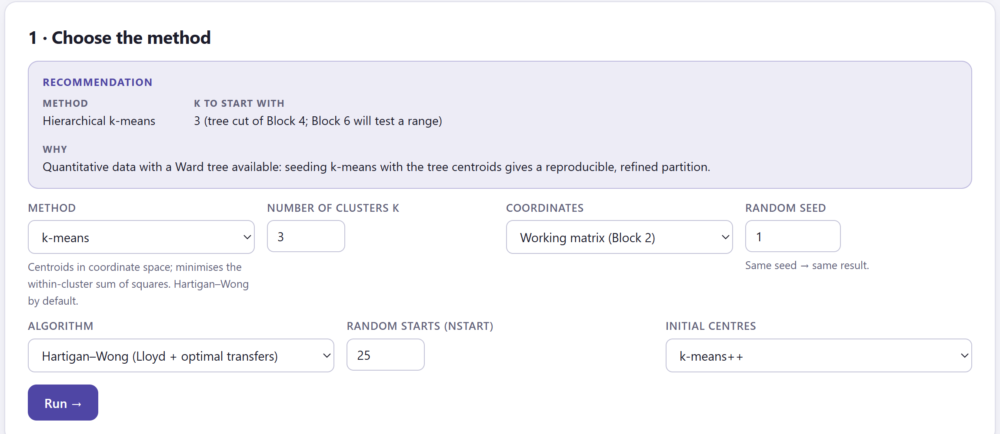
1234567
Figure 6.1. The 1 · Choose the method card with the maize races and k-means selected.
1Recommendation: proposed method, k to start with and the reason (table 6.2).
2Method, with a line summing up what the selected one does.
3Number of clusters k (hidden with DBSCAN, and with mixtures when the BIC chooses).
4Coordinates: only for coordinate-based methods (section 6.6).
5Random seed: the same seed always gives the same result.
6The method's own parameters; here, those of k-means.
7Run →.
6.1k-means and its variants
k-means is the most widely used partitioning method. You saw how it works step by step in the demo on the home page (chapter 2); here the focus is on its variants, its parameters and what the app returns.
θTheory in brief · what k-means minimises
k-means looks for k centres that minimise the within-cluster sum of squares (W): the sum, over all objects, of the squared distance to the centre of their cluster. Since the total sum of squares (T) does not depend on the partition, minimising W is equivalent to maximising the between-cluster sum, B = T − W. The Between-SS / total-SS tile gives B/T, the percentage of the variation explained by the partition.
Finding the exact minimum is impossible except with very few objects; the algorithms reach a local minimum that depends on where they start. That is why the run is repeated from many starts and the one with the lowest W is kept.
Table 6.2. k-means parameters.
Control
Options and effect
Algorithm
Hartigan–Wong (default): Lloyd iterations followed by optimal-transfer passes, which move an object to another cluster if that lowers W, even when the object is closer to its current centre; it usually gives the lowest W. Lloyd / Forgy: assigns all objects and then moves all centres, until nothing changes. MacQueen: updates the centre after each individual reassignment.
Random starts (nstart)
How many times the run is repeated from different initial centres (25 by default, up to 500). The solution with the lowest W is kept.
Initial centres
k-means++: the first centre at random and each subsequent one with probability proportional to its squared distance to those already chosen, which spreads the centres out. Random objects: k objects at random.
Random seed
Fixes the random draw of starts: with the same seed the result is identical.
Hierarchical k-means (Hierarchical k-means) draws nothing at random: it cuts the Block 4 tree into k clusters, computes their centroids and runs a single Hartigan–Wong k-means from them. It combines the best of both worlds: the partition is reproducible, like that of the tree, and is then refined to reduce W, which cutting a tree does not do. It requires a tree to exist; otherwise, the app warns you.
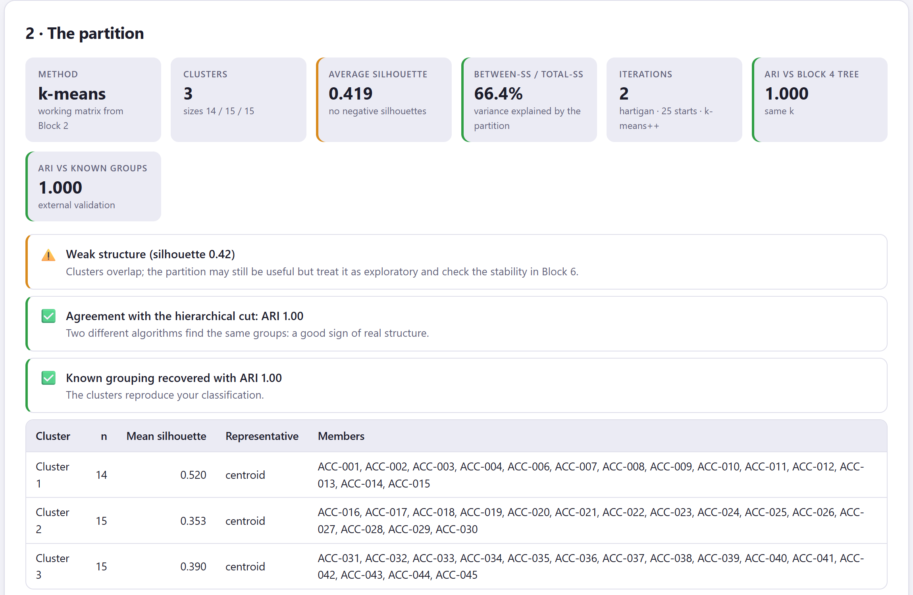
123
Figure 6.2. The 2 · The partition card with k-means on the maize races: silhouette 0.419, 66.4% of the variation explained, two iterations and full agreement with the tree and with the regions.
1Tiles (table 6.3). They change with the method: here, those of k-means are shown.
2Interpreted checks (table 6.4).
3Cluster table with size, average silhouette, representative (centroid or medoid) and members. Below it, the cross-tabulations with the known grouping and with the tree cut.
Table 6.3. Partition tiles. The first four appear whenever they apply; the rest depend on the method.
Tile
What it is
Traffic light
Method · Clusters
Method and working space; number of clusters with their sizes (with DBSCAN, noise objects).
—
Average silhouette
Average silhouette on the Block 3 dissimilarity and how many objects have a negative silhouette. With noise, it is computed without it; with a single cluster, it is undefined.
green ≥ 0.5 · amber 0.25–0.5 · red < 0.25
Between-SS / total-SS
Variation explained (coordinate-based methods).
green > 60% · amber > 40%
Iterations
k-means: iterations, algorithm, starts and type of initialisation.
—
Total cost · Best sample
PAM: sum of dissimilarities to the medoids, and swaps. CLARA: best sample, its size and cost.
—
Partition coefficient
Fuzzy c-means: partition coefficient, its normalised version and the entropy (section 6.3).
normalised: green > 0.7 · amber > 0.4 · red
Model · Mean uncertainty
Mixtures: chosen model and k, BIC and log-likelihood; mean uncertainty and objects above 0.25.
—
ε · minPts · Noise
DBSCAN: parameters and whether ε came from the knee; noise and core points.
noise: amber > 30%
Affinity graph
Spectral: graph type, neighbours and σ.
—
ARI vs Block 4 tree · ARI vs known groups
Adjusted Rand index with the tree cut and with the known grouping.
green > 0.7 · amber > 0.4
Table 6.4. Partition checks.
Check
Level
What it suggests
Strong / Reasonable / Weak / No substantial structure
✅ ✅ ⚠️ ⛔
Average silhouette ≥ 0.7, ≥ 0.5, ≥ 0.25 or lower. With a weak structure, treat the partition as exploratory and check its stability in Block 6.
Cluster N is poorly defined
⚠️
The worst cluster has an average silhouette < 0.2: it may be a superfluous cluster or a gradient split in two.
N tiny clusters
⚠️
Clusters of fewer than 3 objects: probably outliers. PAM or DBSCAN handle them better.
Agreement with the hierarchical cut
✅ ℹ️
With the same k as the tree: if ARI > 0.7, two different algorithms find the same clusters; if not, the objects that switch are the ambiguous ones.
Known grouping recovered with ARI
✅ ℹ️ ⚠️
Agreement with the known grouping (> 0.7, 0.4–0.7, lower).
Coordinate method on the working matrix
ℹ️
A coordinate-based method on the working matrix when Block 3 used another coefficient: choose the PCoA axes or compare with PAM (section 6.6).
The silhouette ignores the noise objects
ℹ️
DBSCAN with more than 20% noise: the silhouette describes only the dense cores.
More than 30 % of the objects are noise · A single dense cluster
⚠️ ℹ️
DBSCAN: increase ε or decrease minPts; or decrease ε to split the single cluster.
Very fuzzy partition
⚠️
Normalised partition coefficient < 0.4: the clusters overlap heavily or m is too large (try 1.5).
BIC chose … with k = …
ℹ️
How many fits were compared and which model won; prefer the simplest one whose BIC is within a few units of the best.
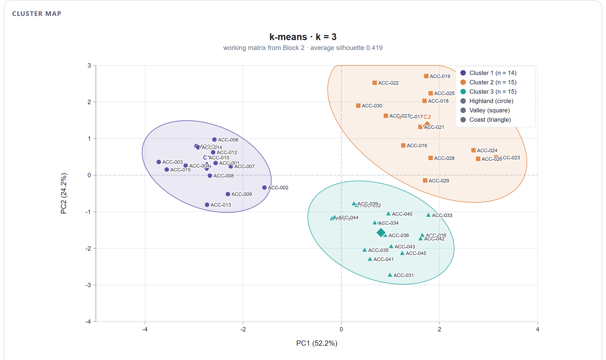
Figure 6.3. k-means Cluster map with the maize data: the objects on the first two components, coloured by cluster, with the 95% concentration ellipse of each cluster, its centroid (diamond) and the shape of each point given by the known region. The three clusters match the three shapes.
6.2PAM and CLARA
PAM (partitioning around medoids) is k-means with two decisive changes: the centre of each cluster is a real object, the medoid, and what is minimised is the sum of dissimilarities, not of squares. That is why it accepts any Block 3 matrix and why an outlier carries much less weight.
θTheory in brief · BUILD and SWAP
PAM works in two phases. BUILD chooses a first medoid, the object with the smallest sum of dissimilarities to all others, and then adds, one at a time, the object that most reduces the total cost. SWAP tries exchanging each medoid for each non-medoid object, applies the swap that lowers the cost the most and repeats until no swap brings an improvement. Finally, each object is assigned to the nearest medoid. The Total cost tile gives that cost and how many swaps were needed; with clear clusters, BUILD usually gets it right and SWAP changes nothing.
CLARA applies PAM to several random samples of the data set (5 by default, of 40 + 2k objects each) and assigns all objects to the medoids of each sample; it keeps the medoids with the lowest total cost. It makes it possible to work with thousands of objects; with few, the sample covers them all and CLARA coincides with PAM.
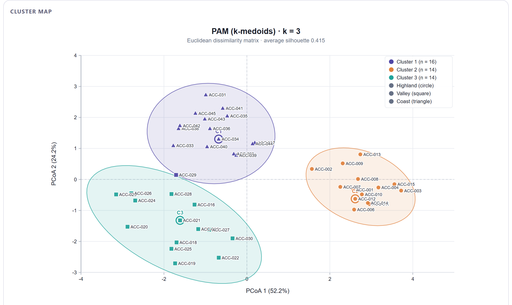
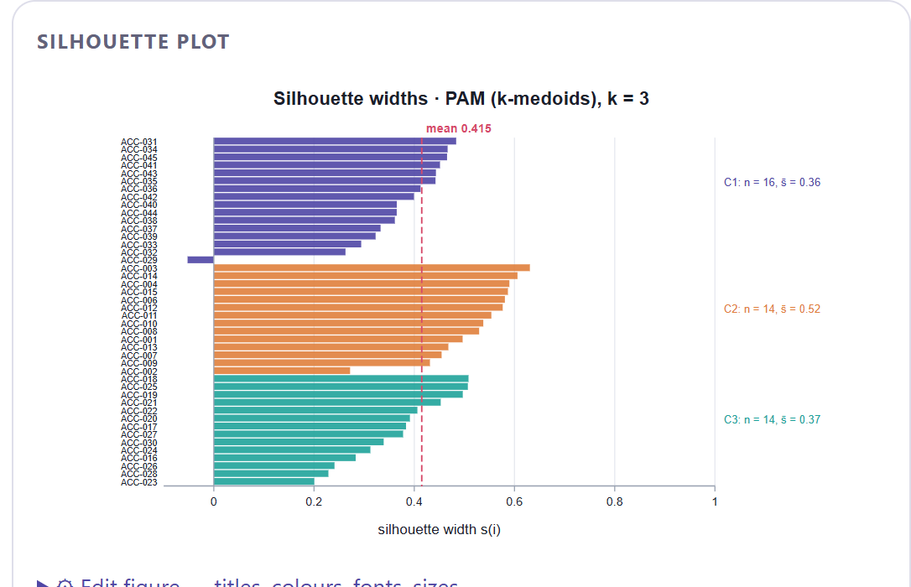
Figure 6.4. PAM with the maize data. On the left, the map with the medoids shown as rings (ACC-034, ACC-012 and ACC-021). On the right, the silhouette: ACC-029, a valley accession, ends up in the coastal cluster and is the only negative bar (−0.052). The rest of the partition matches k-means; that is why the ARI with the regions is 0.929 and not 1.
Table 6.5. PAM and CLARA parameters.
Control
Effect
PAM
Only k. It is deterministic (it uses no seed). Limit in the app: 800 objects; above that, use CLARA.
Samples (CLARA)
Number of samples (1 to 50). The more samples, the more likely it is to find good medoids.
Sample size (CLARA)
Objects per sample; 0 = 40 + 2k. If it is larger than n, all objects are used.
6.3Fuzzy c-means
In the partitions above, each object belongs to a single cluster. Fuzzy c-means, by contrast, gives it a membership degree in each cluster, between 0 and 1, summing to 1 for each object. An object with 0.95 in one cluster is typical; one with 0.47, 0.30 and 0.23 lies between clusters.
θTheory in brief · the fuzzifier m and the partition coefficient
Like k-means, the algorithm alternates two steps: it computes the memberships of each object from its relative distance to the centres, and moves each centre to the mean of all objects weighted by their membership raised to the power m. The fuzzifierm controls how soft the boundaries are: with m close to 1, memberships approach 0 or 1 (almost k-means); with m = 2, the usual value, they are clearly gradual; with larger m, everything tends towards 1/k. The “hard” partition shown by the map and the silhouette assigns each object to its maximum membership.
Dunn's partition coefficient is the average of the sum of squared memberships: it equals 1 if all of them are 0 or 1, and 1/k if all are equal. The normalised version, (k·PC − 1)/(k − 1), ranges from 0 to 1 whatever the value of k. The partition entropy measures the same thing the other way round: 0 is crisp.
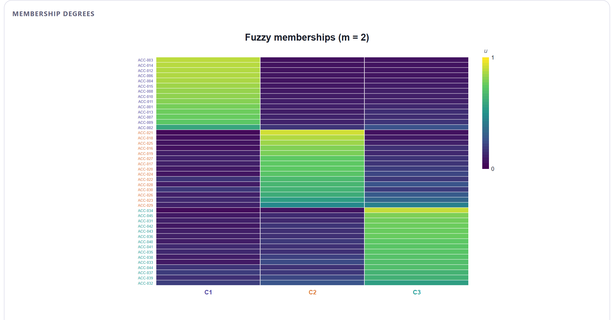
Figure 6.5.Membership degrees with the maize data (m = 2): one row per object, sorted by cluster and by membership, and one column per cluster. The partition matches k-means, but the normalised coefficient is only 0.429: the maximum memberships range from 0.93 to 0.47. The rows at the bottom of each block are the intermediate objects: ACC-002, ACC-023, ACC-032 and ACC-029 (0.47, the same one that PAM left with a negative silhouette).
Table 6.6. Parameters and outputs specific to fuzzy c-means.
Element
What it is
Fuzzifier m
From 1.1 to 5; 2 by default. The closer to 1, the crisper.
Map with Fade uncertain objects
The opacity of each point follows its maximum membership: intermediate objects, at the edges of the ellipses, appear faded.
⬇ Cluster membership (CSV)
Adds one column per cluster, u_C1, u_C2…, in addition to the assigned cluster and the silhouette.
6.4Gaussian mixtures
Model-based clustering assumes that the data come from a mixture of multivariate normal distributions, one per cluster, each with its own mean, covariance matrix and proportion. Fitting the mixture gives each object a probability of belonging to each component and makes it possible to choose k and the shape of the clusters with a statistical criterion, the BIC.
θTheory in brief · EM and BIC
The EM algorithm starts from a k-means solution and alternates two steps: the E step computes, with the current parameters, the posterior probability of each object in each component; the M step re-estimates means, covariances and proportions, weighting by those probabilities. Each round increases the likelihood, until it stops changing. The uncertainty of an object is 1 minus its maximum probability.
The BIC used by the app is 2·log-likelihood − (number of parameters)·log n: higher is better. It rewards fit and penalises complexity, so a model with free covariances only wins if it improves the likelihood substantially. A component with fewer objects than it needs to estimate its covariance (fewer than p + 2 in VVV, 3 in VVI, 2 in the others) is considered degenerate and the fit is rejected.
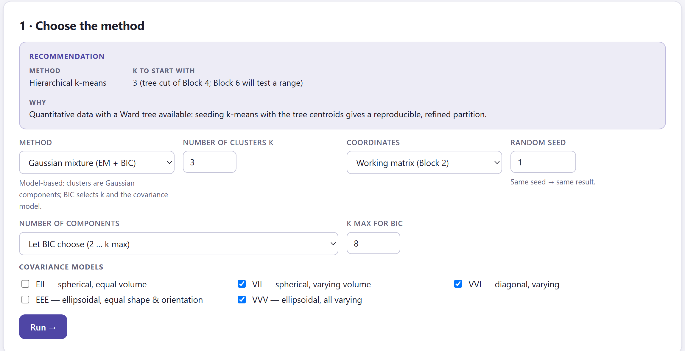
Figure 6.6. The mixture parameters: Number of components (let the BIC choose between 2 and k max for BIC, or a fixed k) and the five covariance models, of which VII, VVI and VVV are ticked by default.
Table 6.7. The five covariance models. The first letter refers to volume, the second to shape and the third to orientation: E = equal across clusters, V = variable, I = identity (spherical or aligned with the axes).
Model
In the app
Shape of the clusters
Covariance parameters
EII
spherical, equal volume
Spheres of the same size (what k-means assumes).
1
VII
spherical, varying volume
Spheres of different sizes.
k
VVI
diagonal, varying
Axis-aligned ellipsoids of free shape and size.
k·p
EEE
ellipsoidal, equal shape & orientation
Rotated ellipsoids, all identical.
p(p + 1)/2
VVV
ellipsoidal, all varying
Ellipsoids free in every respect.
k·p(p + 1)/2
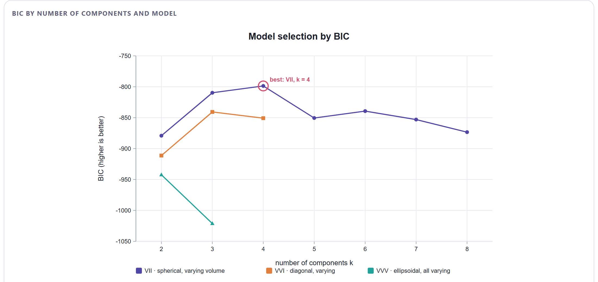
Figure 6.7.BIC by number of components and model with the maize data (8 variables, 44 objects). The best is VII with k = 4 (BIC −798.7), only just above VII with k = 3 (−809.7). VVV, with 36 covariance parameters per component, could only be fitted with 2 and 3 components and falls far below; with more components the clusters are too small and the app rejects the fit.
!Important · the BIC does not know your groups
With the maize data, the BIC prefers four components: it splits the valley accessions into a cluster of 10 and another of 5 (ARI with the regions 0.873). This is not an error: with spherical components, a somewhat elongated cluster is better described by two spheres. Eleven BIC units between k = 3 and k = 4 is a small difference. The rule of thumb from the check applies here: prefer the simplest model whose BIC is within a few units of the best, and let Block 6 decide k with more criteria. To see the three-component solution, choose Fixed k with k = 3.
6.5DBSCAN and spectral clustering
The two remaining methods do not assume round clusters. DBSCAN defines them by density and leaves out, as noise, whatever is not dense. Spectral clustering defines them by connectivity in a neighbour graph. Both work on the matrix.
Figure 6.8. The three types of object in DBSCAN. Two parameters suffice: the radius ε and the minimum number of objects, minPts, that must lie within that radius for an object to be a core point.
Choosing ε with the neighbour plot
With ε set to 0, the app chooses it automatically. For each object it computes the distance to its (minPts − 1)-th neighbour, sorts those distances in decreasing order and looks for the knee: the point on the curve farthest from the straight line joining its ends. Objects whose distance lies above ε are not core points; they may end up as border points or as noise. The rule of thumb for minPts is the number of dimensions plus one, and at least 4.
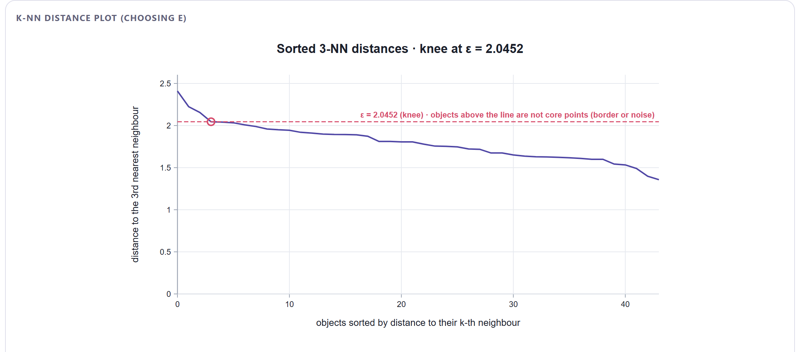
Figure 6.9.k-NN distance plot (choosing ε) with the maize data and minPts = 4: distance from each accession to its third neighbour, sorted. The knee gives ε = 2.045. Only three accessions lie above the line; since they are close to core points, they join as border points, and DBSCAN recovers the three regions with no noise (ARI 1.000, 41 core points).
iNote · ε returns to 0 when the data change
After running DBSCAN, the ε field shows the value chosen by the knee. If you then compute another matrix in Block 3 or load other data, the field returns to 0 so that the knee is recalculated: an ε intended for a different scale of distances would make no sense. If you want a fixed ε, type it in after computing the matrix.
θTheory in brief · spectral clustering
Spectral clustering turns the matrix into a graph: each object is linked to its nearest neighbours (7 by default) with a Gaussian weight that decreases with distance, exp(−d²/2σ²), where σ is by default the median of the distances to those neighbours. It then normalises the graph, takes the first k eigenvectors, which summarise how it is connected, and runs k-means on them. Two objects that are far apart in a straight line but linked by a chain of neighbours end up together, which is why it recovers moons and rings that k-means breaks apart. The controls are Affinity graph (k-nearest-neighbour graph or fully connected), Neighbours and Kernel width σ. In the app it accepts up to 500 objects.
6.6Coordinates versus matrix
k-means, hierarchical k-means, fuzzy c-means and Gaussian mixtures need coordinates: they compute means of objects. PAM, CLARA, DBSCAN and spectral clustering use the matrix directly. The Coordinates menu decides where the coordinates come from when they are needed.
Table 6.8. The two coordinate sources.
Source
What it is
Use it when
Working matrix (Block 2)
The working matrix: transformed and scaled variables, with indicator columns for the nominal ones.
The Block 3 coefficient is the Euclidean distance on those variables.
PCoA axes of the Block 3 dissimilarity
All the positive axes of the principal coordinates analysis of the matrix: Euclidean coordinates that reproduce the dissimilarity as closely as possible.
The coefficient is another one (Bray–Curtis, Jaccard, Gower…): this way the coordinate-based method respects the chosen dissimilarity.
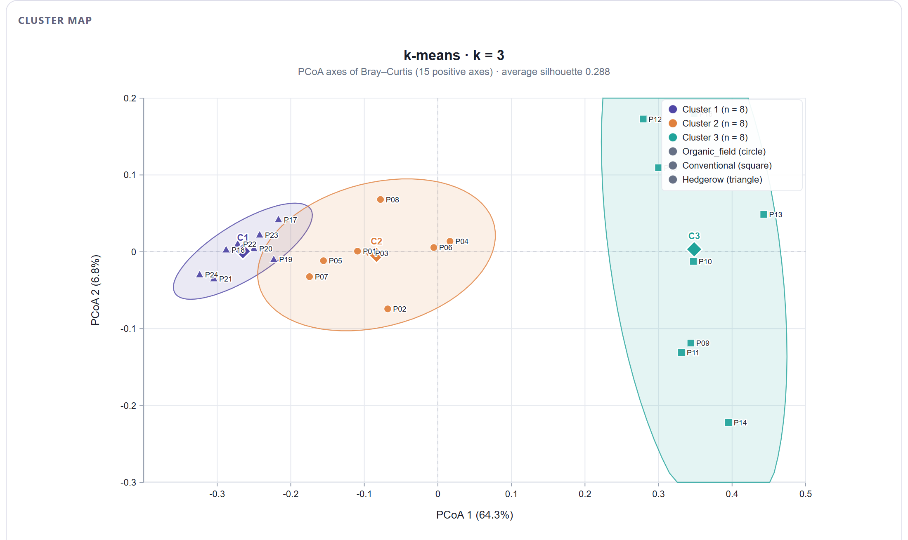
Figure 6.10. k-means on the PCoA axes of Bray–Curtis with the 24 insect sites: it recovers the three landscapes exactly (8 / 8 / 8, ARI 1.000) with 15 positive axes. The map shows the first two; the ellipse of the conventional-field cluster, which is very elongated, is clipped at the edge of the plot.
!Important · the silhouette is always computed on the Block 3 matrix
Whatever the method and the coordinate source, the silhouette is measured with the Block 3 dissimilarity. In this way all methods are judged by the same yardstick and the comparison in card 3 is fair. The Between-SS / total-SS tile, on the other hand, is computed in the coordinate space used by the method, so it is not comparable across different sources.
6.7Settings, tables and figures of the block
The block produces up to five figures, all editable and exportable. The map, the silhouette and the sizes appear with any method; the membership map, with fuzzy c-means and mixtures; the neighbour plot, with DBSCAN; the BIC profile, with mixtures when several fits are compared.
Table 6.9. The figures of the block and their own controls.
Figure
What it shows
Specific controls
Cluster map
The objects on two axes, by cluster (figures 6.3, 6.4 and 6.10).
Cluster region (95% ellipse, convex hull or none) and its opacity; Centres (centroid ◆, medoid as a ring, or none); cluster numbers; labels (automatic up to 60); point size and shape; Shape by known group; Fade uncertain objects; noise colour; palette and legend.
Silhouette plot
One bar per object, sorted within each cluster, with the mean in red and the summary by cluster on the right (figure 6.4).
Object labels (n ≤ 80), colour of the mean line, palette.
Cluster sizes
Objects per cluster with their average silhouette; noise in grey.
Memberships or probabilities by object and cluster (figure 6.5).
Colour map, labels (up to 80), palette.
k-NN distance plot
Distances to the (minPts − 1)-th neighbour, sorted, with ε and the knee (figure 6.9).
Title, palette.
BIC by number of components and model
BIC of each fit, with the best one marked (figure 6.7).
Palette and legend.
θTheory in brief · reading the silhouette plot
For each object, a is its mean dissimilarity to the other members of its cluster and b its mean dissimilarity to the nearest neighbouring cluster; its silhouette is (b − a)/max(a, b). A long bar to the right is a well-placed object; a bar close to zero, an object on the boundary; a bar to the left, an object that would be better off in the neighbouring cluster. A cluster of short, even bars is a diffuse cluster; a cluster with a few negative bars at the end has misassigned members. The thresholds for the mean are those of section 1.9: 0.7 strong, 0.5 reasonable, 0.25 weak.
iNote · what goes into the report and the download
⬇ Cluster membership (CSV) saves, for each object, its label, the known grouping if there is one, the assigned cluster (0 = noise), the memberships or probabilities if the method provides them, and the silhouette. The partition from this block is the one used by Block 6, to validate it, and by Block 7, to describe the clusters; the Block 8 report includes its tiles, tables and figures exactly as you edited them.
6.8Comparing methods at the same k
The third card runs the ticked methods with the k from card 1 and measures their agreement with the adjusted Rand index. DBSCAN does not take part because it chooses its own number of clusters; the Block 4 tree cut, on the other hand, can be included. The cut, k-means, PAM, fuzzy c-means and the Gaussian mixture are ticked by default.
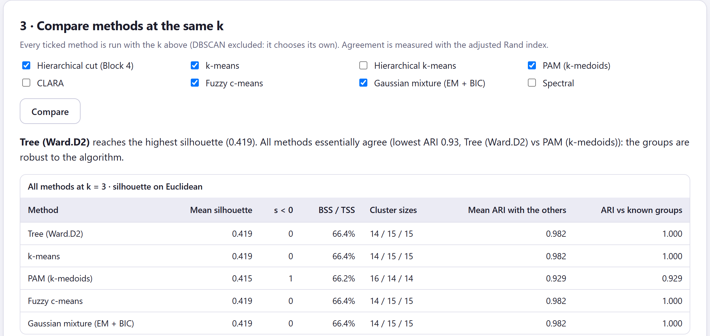
Figure 6.11. The comparison with the maize data at k = 3: four of the five methods give the same partition (silhouette 0.419, 66.4%); PAM differs by one accession (ACC-029). The paragraph concludes that the clusters are robust to the algorithm.
Table 6.10. Columns of the comparison and how the app summarises it.
Element
What it is
Mean silhouette · s < 0
Average silhouette on the Block 3 matrix and objects with a negative silhouette.
BSS / TSS
Variation explained, in the coordinate space chosen in card 1.
Cluster sizes
Cluster sizes.
Mean ARI with the others
Average ARI with the other methods: the highest is the most “central”.
ARI vs known groups
Agreement with the known grouping, if there is one.
Paragraph
Names the method with the highest silhouette and reads the minimum pairwise ARI: > 0.8, All methods essentially agree (clusters robust to the algorithm); 0.5–0.8, Moderate agreement (a stable core, with the rest depending on the method); lower, Methods disagree (the partition is not robust: review k in Block 6 or the methods' assumptions).
iNote · in the comparison the parameters are fixed
To keep the comparison fast and reproducible, each method is run with standard values, not with those of card 1: k-means with 10 starts and k-means++, hierarchical k-means from the cut, PAM and CLARA with their default values, fuzzy c-means with m = 2, the mixture with fixed k and the VVI and VVV models, and spectral clustering with 7 neighbours. All of them use the seed and the coordinate source from card 1. That is why the mixture gives three clusters here, even though the BIC preferred four.
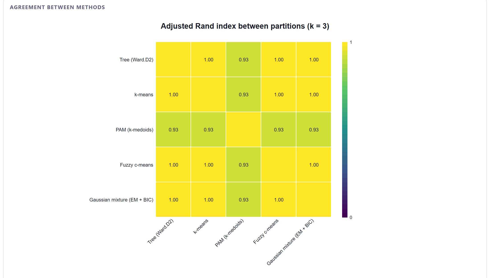
Figure 6.12.Agreement between methods: the ARI between each pair of partitions. With the maize data everything is yellow except the PAM row and column (0.93).
6.9Step by step
With each example prepared in Blocks 2 to 4 using the proposed values (UPGMA in the binary and insect examples, as in chapter 5), table 6.11 summarises the method that Block 5 proposes and other runs that teach something. The exercises go through each case in detail.
Table 6.11. The seven examples in Block 5.
Example
Method
k
Silhouette
ARI groups
Remark
Maize races
Hierarchical k-means*
3
0.419
1.000
Same as k-means, fuzzy, DBSCAN and spectral.
PAM
3
0.415
0.929
ACC-029 with a negative silhouette.
Mixture (BIC)
4
0.387
0.873
VII splits the valleys into 10 and 5.
Species presence
PAM*
3
0.334
1.000
Places site S05 better than the tree.
DBSCAN
2
0.551
0.462
57% noise; the silhouette sees only the cores.
Insect abundance
PAM*
3
0.294
0.610
4 / 8 / 12: splits the organic fields.
k-means on PCoA
3
0.288
1.000
8 / 8 / 8: the three landscapes.
Soil profiles
PAM*
2
0.575
—
Same as the tree; fuzzy and mixture move one profile.
Distance matrix
PAM*
3
0.665
—
DBSCAN (minPts 3) leaves Olotillo as noise.
Four simulated clusters
Hierarchical k-means*
4
0.714
1.000
Strong structure; DBSCAN with no noise.
Uniform noise
Hierarchical k-means*
3
0.174
—
Red warning; the methods disagree (minimum ARI 0.19).
* Method proposed by the app. With a tree in Block 4 and quantitative data it proposes hierarchical k-means, which in these three examples gives the same partition as k-means.
Exercise 1 · Maize races: eight methods, one answer
▸Step by step
With the maize data and the Ward.D2 tree cut into three clusters, go to Block 5. The recommendation is hierarchical k-means with k = 3 on the working matrix. Click Run →: silhouette 0.419, 66.4% explained, one iteration, ARI 1.000 with the tree and with the regions.
Switch to k-means and run it (figures 6.2 and 6.3): the same partition, in two iterations with 25 starts.
Run PAM (k-medoids) and CLARA (figure 6.4): 16 / 14 / 14, silhouette 0.415, with ACC-029 in the coastal cluster. CLARA gives exactly the same result: with 44 objects, its sample of 46 covers them all.
Run Fuzzy c-means (figure 6.5), DBSCAN (figure 6.9) and Spectral: all three reproduce the regions.
Run Gaussian mixture (EM + BIC) (figure 6.7): the BIC chooses VII with four components.
Go back to k-means and click Compare (figures 6.11 and 6.12).
θWhat you learned
When the structure is clear, algorithms with very different assumptions (centroids, medoids, memberships, density, graphs) arrive at the same place, and that agreement is the best evidence that the clusters are real. What changes are the details, and they are informative: PAM, fuzzy c-means and the silhouette point to the same doubtful accession, ACC-029, and the Gaussian mixture suggests that the valley cluster has substructure. None of this changes the main conclusion, but these are the objects worth reviewing in the original data. And the “weak” silhouette of 0.42 coexists with perfect agreement: three clusters that touch can be very stable.
Exercise 2 · Species presence: PAM, k-means on PCoA and DBSCAN
▸Step by step
With Jaccard and the UPGMA tree, the app proposes PAM. Run it: 10 / 10 / 10, silhouette 0.334, ARI 1.000 with the habitats and 0.898 with the tree. PAM places in the forest cluster site S05, which the UPGMA tree left with the grasslands (chapter 5).
Switch to k-means with the Working matrix source: the same partition, but the Coordinate method on the working matrix check appears. Switch to PCoA axes: the same partition, and the warning disappears.
Run DBSCAN with the automatic values (figures 6.13 and 6.14): ε = 0.4, two clusters (4 grasslands and 9 wetlands) and 17 noise objects (57%). The silhouette rises to 0.551.
Run the Gaussian mixture on the PCoA axes: the BIC chooses VVI with two components, wetlands versus everything else (ARI 0.554).
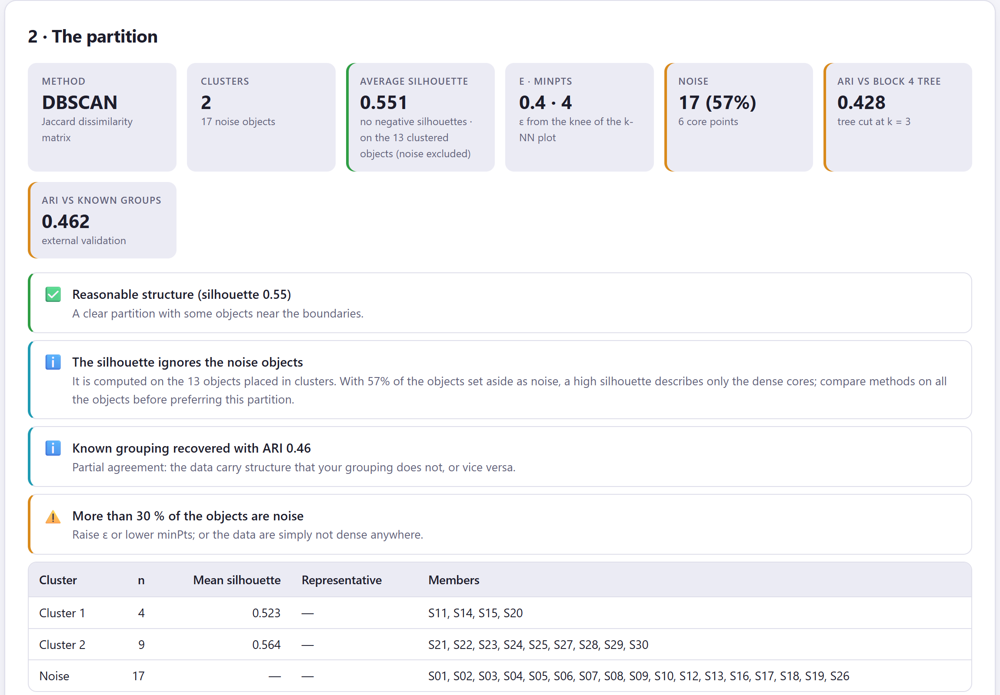
Figure 6.13. DBSCAN on Jaccard: a “reasonable” silhouette of 0.551 computed on only 13 sites, with the warnings that it ignores the noise and that more than 30% of the objects were left out. The forests, more heterogeneous in their composition, do not reach the density of a core and all end up as noise.
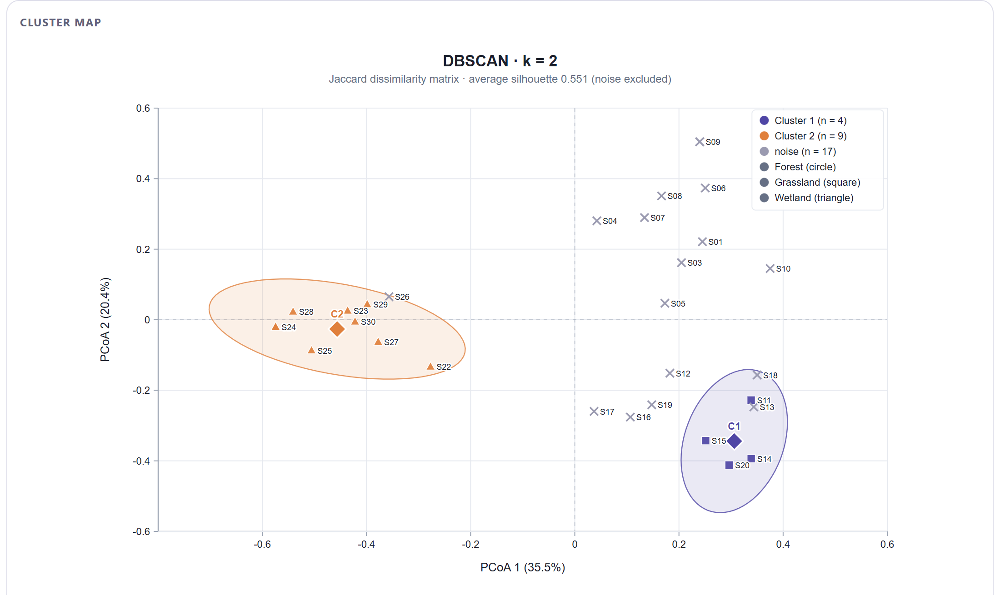
Figure 6.14. The DBSCAN map: noise is drawn as grey crosses. Only the wetlands (on the left) and a core of four grasslands form dense clusters.
!Important · do not compare silhouettes with and without noise
DBSCAN can “improve” the silhouette simply by leaving out the difficult objects. A silhouette of 0.551 on 13 objects is not better than one of 0.334 on all 30. To compare methods, use card 3, which runs every method on all the objects (which is precisely why DBSCAN is excluded), or compare the ARI with a reference. DBSCAN is valuable here for a different reason: it tells you that the forests do not form a compact core in terms of floristic composition.
Exercise 3 · Insect abundance: the matrix and its coordinates
▸Step by step
With Bray–Curtis and the UPGMA tree, the app proposes PAM. Run it: 4 / 8 / 12, silhouette 0.294, ARI 0.610 with the landscapes. A cluster of four organic fields (P02, P04, P06, P08) separates; the other four fall in with the hedgerows.
Switch to k-means with PCoA axes (figure 6.10): 8 / 8 / 8, ARI 1.000, silhouette 0.288 and the warning Cluster 2 is poorly defined (0.19) on the organic fields.
Run fuzzy c-means with the same source: the same partition, but a normalised coefficient of 0.292 and the Very fuzzy partition warning.
θWhat you learned
The two partitions have almost the same silhouette and describe different things. PAM, which minimises dissimilarities to real objects, recognises that the organic fields are heterogeneous: half of them resemble the hedgerows. k-means on the PCoA, which minimises squares, prefers three clusters of equal size and recovers the landscapes, but the silhouette and the fuzzy memberships warn that the organic-field cluster is the least well defined. With community tables, both routes are legitimate; the difference between them is an ecological result worth reporting.
Exercise 4 · Soil profiles: medoids that are real profiles
▸Step by step
With Gower and the UPGMA tree cut into two clusters, run PAM (proposed): 24 / 12, silhouette 0.575 (“reasonable”), the same as the tree (ARI 1.000). The medoids are PR-17 and PR-11 (figure 6.15).
Run fuzzy c-means on PCoA axes (20 positive axes): PR-20 moves to the small cluster (13 / 23), normalised coefficient 0.592.
Run the Gaussian mixture with the same source: the BIC chooses VVI with two components, and this time it is PR-01 that changes (11 / 25), with two negative silhouettes.
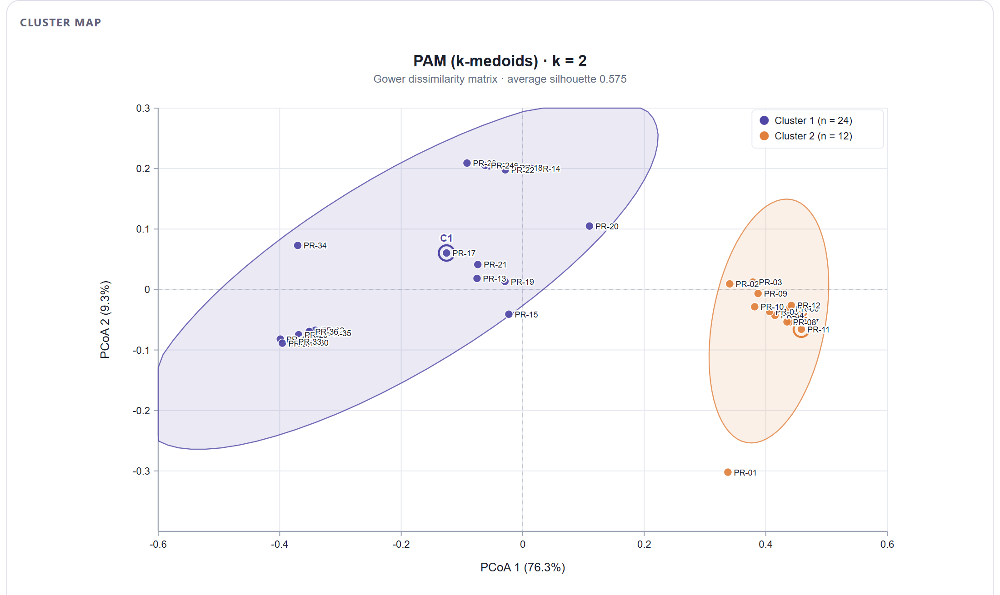
Figure 6.15. PAM on Gower with the 36 profiles. The rings mark the medoids: PR-17 represents the large cluster and PR-11 the small one. Since they are real profiles, you can describe each soil type with the values of its medoid. PR-01, at the bottom right, is the profile that the Gaussian mixture moves to the other cluster.
Exercise 5 · Genetic matrix: the cultivar that DBSCAN leaves out
▸Step by step
With the matrix of 12 cultivars and the UPGMA tree in three clusters, the recommendation is PAM because the matrix is used as is. Run it: 4 / 4 / 4, silhouette 0.665, the same as the tree. Medoids: Elotero, Tabloncillo and Azul.
Switch to DBSCAN and lower minPts to 3 (with 12 objects, 4 is demanding): ε = 0.18, three clusters and one noise object, Olotillo (figure 6.16). ARI with the tree 0.879.
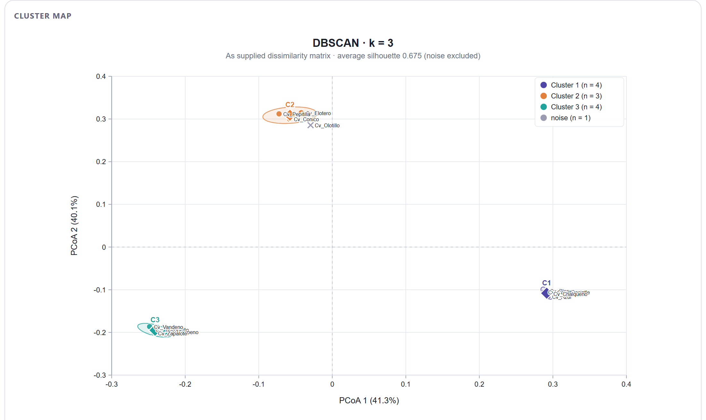
Figure 6.16. DBSCAN on the genetic matrix. The four cultivars in each cluster are so close together in the PCoA that their labels overlap; Olotillo (cross) has no cultivar at 0.18 or less: its distances to the other three in its cluster are 0.19, 0.20 and 0.21. It is left out by a few hundredths, neither a core nor a border point.
Exercise 6 · Four clusters and noise: when the silhouette leaves no doubt
▸Step by step
With the four simulated clusters, run k-means with k = 4: silhouette 0.714 (“strong”), 92.5% explained, four clusters of 20 (figure 6.17). DBSCAN with minPts = 6 also finds them, with no noise.
With the uniform noise, run k-means with k = 3: red warning No substantial structure (silhouette 0.174), four objects with a negative silhouette and one “poorly defined” cluster (figure 6.18).
Run DBSCAN with minPts = 6 (figure 6.19): a single cluster of 59 objects and one noise object. The silhouette is shown as “—”: with a single cluster it is undefined.
Go back to k-means and click Compare (figure 6.20): Methods disagree, with a minimum ARI of 0.19 between k-means and the mixture.
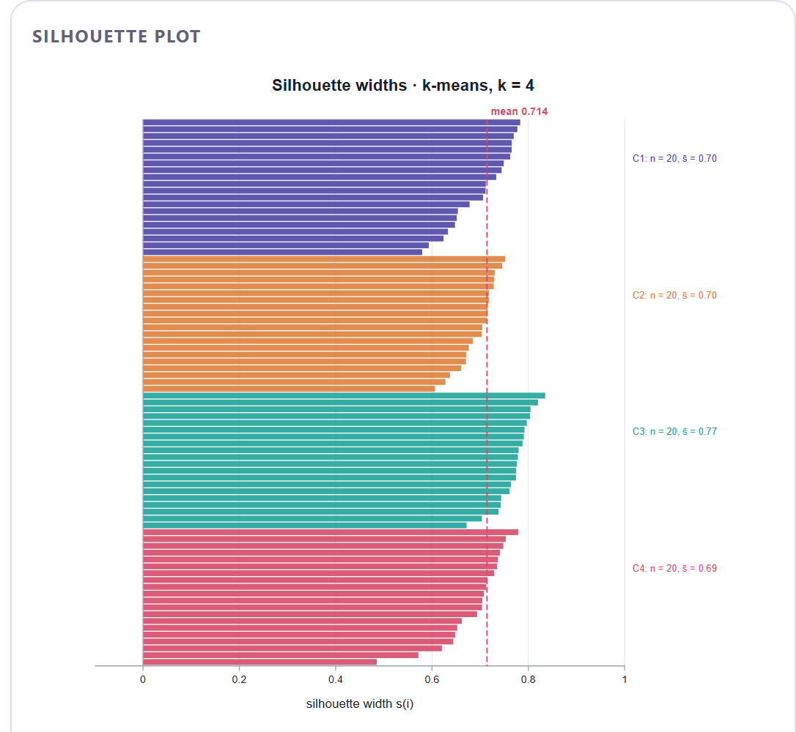
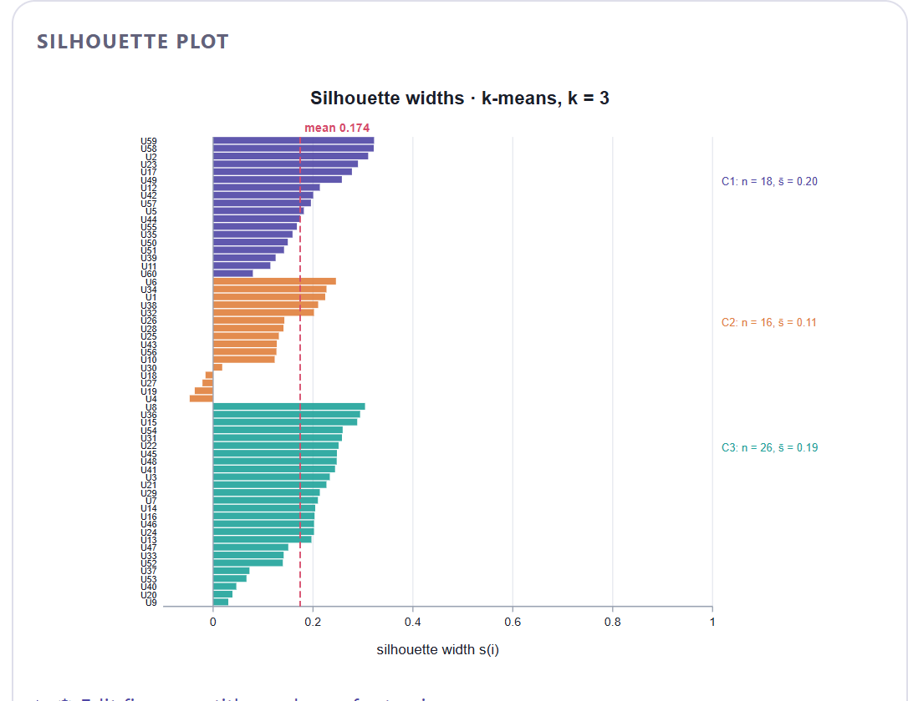
Figures 6.17 and 6.18. Two extreme silhouettes. On the left, the four simulated clusters: long, even bars, mean 0.714. On the right, the uniform noise in three clusters: short bars, mean 0.174 and an orange block that ends in negative bars.
θWhat you learned
This is the fourth sign of absence of structure, after Hopkins (Block 2), the disagreement between coefficients (Block 3) and the disagreement between linkages (Block 4): a low silhouette with warnings of poorly defined clusters, methods that do not agree with one another, and a DBSCAN that finds only one cluster. Of all the methods, DBSCAN is the only one that can answer “there are no clusters”, because it does not need k.
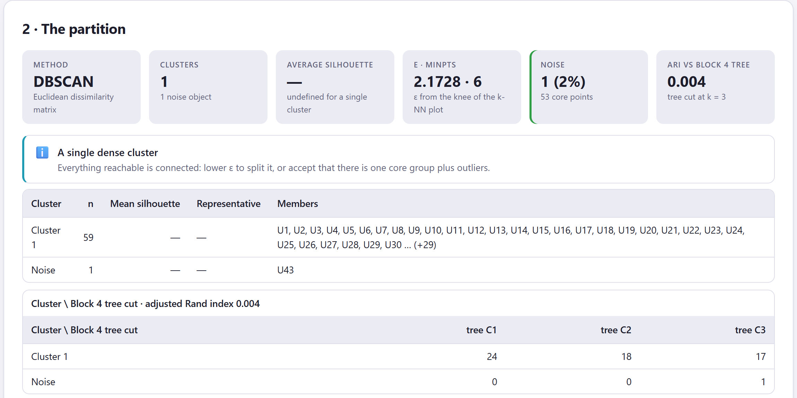
Figure 6.19. DBSCAN on the uniform noise: a single dense cluster of 59 objects and one noise object. The silhouette is undefined and the A single dense cluster check explains why. This is the correct answer: there are no clusters.
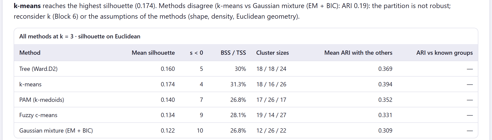
Figure 6.20. The comparison with the uniform noise: silhouettes between 0.12 and 0.17, different sizes with each method and a mean ARI with the others of 0.31 to 0.39.
!Important · what to report from this block
In the methods section: the algorithm with its parameters (algorithm and number of starts for k-means, m for fuzzy c-means, model and criterion for the mixture, ε and minPts for DBSCAN, graph and σ for spectral clustering), the coordinate source if applicable, k, the average silhouette and the dissimilarity it was computed on, and the seed. If you compared methods, the minimum ARI between them. For example: “k-means (Hartigan–Wong, 25 k-means++ starts, seed 1) on the PCoA axes of Bray–Curtis produced three clusters (average silhouette 0.29) that matched the landscapes (ARI = 1.00)”. The automatic paragraph in Block 8 writes this up with your values.
With a partition in hand, it remains to decide whether that k is the right one and whether the clusters are stable. The next chapter presents the thirteen criteria for choosing the number of clusters and how they vote, the gap statistic, stability by resampling, the support for the branches of the tree, external validation and the comparison of algorithms across k.
B6
Chapter seven · Block 6 · Validation
Number of clusters and validation
Every clustering method returns clusters, even on data with no structure. This block answers the questions that separate a result from an artefact: how many clusters the data support, whether those clusters withstand resampling, which branches of the tree are supported by the variables, how closely they match what you already knew, and which algorithm best describes the data across k.
7.1How many clusters? Thirteen criteria and a vote
7.2The gap statistic
7.3Bootstrap stability
7.4Support for the tree clusters (AU and BP)
7.5External validation
7.6Comparing algorithms across k
7.7Settings, tables and figures of the block
7.8Step by step
Block 6 has one theory card and five working cards. 1 · Optimal number of clusters evaluates each k in a range with thirteen criteria and counts their votes. 2 · Stability of the clusters (bootstrap) resamples the objects and measures whether each cluster reappears. 3 · Support of the tree clusters resamples the variables and gives each branch of the tree a support value. 4 · External validation compares two clusterings. 5 · Comparison of algorithms over k pits the tree, k-means and PAM against each other over the same range. The cards are independent: you can run only the ones you need, in any order.
The block becomes available as soon as Block 3 computes a matrix. Cards 2 and 4 also need a partition: the tree cut from Block 4 or the partition from Block 5. Once card 1 has finished, Block 7 is enabled.
Table 7.1. The four questions of the block and the tool that answers each one.
Question
Card
What it resamples or compares
Main result
How many clusters?
1 · Optimal number of clusters
one partition for each k
Consensus k, the vote of each criterion and the gap statistic.
Are the clusters stable?
2 · Stability of the clusters
the objects
Mean Jaccard per cluster and its verdict.
Which branches of the tree are supported?
3 · Support of the tree clusters
the variables, at several scales
AU and BP for each branch.
Do they match what I already know?
4 · External validation
two clusterings
ARI, NMI, purity and χ² test.
Which algorithm is best suited?
5 · Comparison of algorithms over k
three methods over the range of k
Connectivity, Dunn and silhouette.
7.1How many clusters? Thirteen criteria and a vote
There is no single criterion for the number of clusters. Each index measures something different (compactness, separation, the gain from adding a cluster), and each one fails in different situations. The app computes all of them for every k in the range and lets them vote: the k with the most votes is the consensus.
123456
Figure 7.1. Card 1 · Optimal number of clusters before running, with the maize races and the Ward.D2 tree from Block 4.
1Partitions produced by: how the partition for each k is obtained: by cutting the Block 4 tree, with k-means or with PAM.
2k from: the first k in the range (at least 2).
3k to: the last one; it starts at 10, or at n − 1 if there are fewer than 11 objects. The range must contain at least three values.
4Gap statistic: reference sets B: how many reference sets the gap statistic uses (section 7.2); 0 skips it.
5Evaluate every k →.
6Adopt k: carries the consensus k over to Blocks 4 and 5.
✓Decision rule · which partition generator the app proposes
If…
it proposes
you built a tree in Block 4
Cutting the Block 4 tree: the clusters for each k are cuts of the same tree, nested and reproducible.
there is no tree and the coefficient is Euclidean (or a loaded matrix)
k-means, with 5 starts and seed 1.
there is no tree and the coefficient is not Euclidean
PAM, which works directly on the Block 3 matrix.
The proposal is updated when you build the tree, as long as you have not yet evaluated a range. You can change it: if you intend to use PAM in Block 5, choose PAM here so that the number of clusters is evaluated with the same method.
Two spaces for computing the indices
Some criteria work with dissimilarities and others with coordinates. The silhouette, Dunn, the C-index and McClain–Rao use the Block 3 matrix as it is. Calinski–Harabasz, Davies–Bouldin, PBM, Ratkowsky–Lance, Hartigan, Krzanowski–Lai, Ball–Hall, the elbow and the gap use coordinates: the Block 2 working matrix if the coefficient is Euclidean, the MDS coordinates if you loaded a matrix, and the PCoA axes of the coefficient in any other case. The Partitions from tile states which one was used.
Table 7.2. The thirteen criteria, the rule by which each one votes and its vote with the maize races (Ward.D2 tree, k from 2 to 10).
Criterion
What it measures
Votes for
Maize
Silhouette
Cohesion versus separation of each object, averaged (section 6.7).
the maximum
3 (0.419)
Calinski–Harabasz
Between-cluster sum of squares versus the within-cluster one, each divided by its degrees of freedom.
the maximum
3 (40.6)
Davies–Bouldin
Spread of each cluster and of its most similar neighbour, relative to the distance between their centroids.
the minimum
2 (0.915)
Dunn
Minimum distance between clusters divided by the maximum diameter of a cluster.
the maximum
5 (0.515)
C-index
Sum of within-cluster distances, compared with the smallest and largest possible sums.
the minimum
4 (0.026)
McClain–Rao
Mean within-cluster distance divided by the mean between-cluster distance.
the minimum
10 (0.454)
PBM
Product of the reduction in spread and the maximum separation between centroids, penalised by k.
the maximum
2 (7.73)
Ratkowsky–Lance
Proportion of the variation of each variable explained by the clusters, divided by √k.
the maximum
3 (0.469)
Ball–Hall
The within-cluster sum of squares per cluster, W/k.
the largest drop
2
Krzanowski–Lai
How much W improves on reaching k, compared with how much it improves on moving to k + 1.
the maximum
3 (4.32)
Hartigan
Whether adding a cluster is worthwhile: H = (Wk/Wk+1 − 1)(n − k − 1).
the first k with H ≤ 10
3 (8.21)
Gap statistic
How much more compact the clusters are than those of uniform data (section 7.2).
the first-standard-error rule
4 (1.104)
Elbow (WSS)
The within-cluster sum of squares, W, which always decreases with k.
the knee of the curve
4 (95.8)
θTheory in brief · why one criterion is not enough
The within-cluster sum of squares always decreases as clusters are added, so no criterion can simply look for the minimum of W: each one penalises it or compares it in a different way. Calinski–Harabasz and PBM tend to favour a few large clusters. Dunn and McClain–Rao, which depend on extreme distances or on means that decrease with k, often drift to the upper end of the range. The silhouette often prefers k = 2 when one cluster is far removed from the rest. That is why the vote matters more than any single index, and a split vote is also informative: the data admit several resolutions or have no clear structure.
Tiles and checks
Figure 7.2. The result with the maize: consensus k = 3 with 5 of 13 votes, and runner-up k = 2 with 3. The silhouette votes for 3; the gap and the elbow, for 4. Because the winner does not reach half of the votes, the check describes it as a weak consensus.
Table 7.3. The tiles of card 1.
Tile
What it shows
Consensus k
The k with the most votes and how many of the 13 criteria chose it. Ties are resolved in favour of the smaller k.
Runner-up
The k with the second-highest number of votes.
Silhouette
The k with the maximum silhouette and its value.
Gap statistic
The k given by the first-standard-error rule, the number of reference sets and the k of the global maximum.
Elbow (WSS)
The knee of the W curve: the point farthest from the straight line joining its ends.
Partitions from
The partition generator and the coordinate space.
Table 7.4. The checks of card 1 and when they appear.
Check
Appears when…
✅ Clear consensus for k = …
the winner gathers at least half of the votes; it states whether the silhouette agrees.
⚠️ Tie between k = … and k = …
the two most-voted values are tied. It recommends the smaller one, unless the extra cluster is interpretable, and checking both with the stability analysis.
ℹ️ Weak consensus for k = …
the winner does not reach half; the structure may be hierarchical (several valid resolutions) or weak.
⚠️ The consensus k = … is the upper end of the range
the winner is the last k: several criteria keep improving up to the end of the range, which usually indicates that there is no natural number of clusters.
⚠️ Low silhouette at the consensus k
the silhouette at the consensus is below 0.25.
⚠️ The gap statistic finds no cluster structure (k = 1)
the gap chooses k = 1 (section 7.2).
ℹ️ Gap statistic: first-SE rule chooses…
the gap rule and its global maximum disagree.
ℹ️ The silhouette peaks at k = 2
the silhouette prefers two clusters; it suggests looking at 3 and 4 and at the tree.
ℹ️ How the vote works
always: the count is a guide, not a test, and the final k must be interpreted in Block 7.
Below the checks, the Internal indices by k table gives the value of each criterion for each k. The header of each column indicates the k chosen by that criterion, and its value is highlighted. The Hartigan and Krzanowski–Lai columns are left empty at the last k, because they need W at k + 1.
iNote · the Adopt k button
Adopt k = … in Blocks 4 and 5 writes the consensus k into the Block 4 tree cut and applies it, and also writes it into the Number of clusters k field of Block 5. The Block 5 partition is not recomputed automatically: you have to press Run → there again. If you prefer another k (the runner-up, or the silhouette's choice), change it by hand in those blocks.
Figure 7.3.Every criterion at a glance with the maize: one panel per criterion, with the k it chooses marked in orange. The curves say more than the vote: the silhouette and Calinski–Harabasz have a clear peak at 3, the gap rises up to 4 and then levels off, and McClain–Rao keeps falling until the end of the range.Figure 7.4.Consensus of the criteria: how many criteria vote for each k, with their names inside the bars. The consensus, in orange, is k = 3: silhouette, Calinski–Harabasz, Ratkowsky–Lance, Krzanowski–Lai and Hartigan.Figure 7.5. The two most frequently consulted curves. On the left, the elbow: W falls from 187.6 to 115.5 on going from two to three clusters, and only to 95.8 with four, where the app places the knee. On the right, the average silhouette by k, with its maximum at 3 (0.419), very close to 2 (0.406).
7.2The gap statistic
The other criteria compare partitions with one another; the gap compares each partition with what would be obtained from data without clusters. It is the only one of the thirteen that can conclude that there is no structure.
θTheory in brief · the gap relative to uniform data
For each k, the app computes log Wk with your data. It then generates B reference sets with the same number of objects, spread uniformly over the box occupied by your coordinates, clusters them with the same method and averages their log Wk. The gap is the difference: Gap(k) = mean of the reference log Wk − log Wk. A large gap indicates clusters that are much more compact than those produced by chance.
Because the reference sets vary, each gap has a standard error, sk = standard deviation × √(1 + 1/B). The first-standard-error rule chooses the smallest k such that Gap(k) ≥ Gap(k + 1) − sk+1: the first k beyond which adding a cluster no longer brings an appreciable improvement. When the range starts at 2, the app also evaluates k = 1; if the rule stops there, the data are no more clustered than uniform data.
Figure 7.6.Gap statistic with the maize, with bars of ± 1 standard error. The gap rises from 0.24 at k = 1 to 1.04 at k = 3 and 1.10 at k = 4; from there on it levels off. At k = 3 the rule is not yet satisfied (1.036 < 1.104 − 0.054); at k = 4 it is (1.104 ≥ 1.101 − 0.055).
Table 7.5. How to read the gap curve.
Shape of the curve
Interpretation
Rises and levels off (maize, figure 7.6)
The knee is the number of clusters; the rule finds it.
Sharp peak followed by a decline (four simulated clusters)
Strong structure: the rule, the maximum and the vote agree.
Flat or declining from k = 1 (uniform noise)
There are no clusters: the rule chooses k = 1.
Keeps rising to the end of the range
Nested structure or many PCoA axes; the rule gives the coarsest resolution and the maximum the finest.
!Important · when to distrust the gap
The uniform reference box is built on the coordinates. With few objects and many dimensions (a matrix of 12 cultivars has up to 11 MDS axes) the reference sets vary widely, the standard errors grow and the rule becomes conservative: it may stop at k = 1 even when the silhouette and the stability show clear clusters. The gap check warns about this when there are fewer than 30 objects. With 50 reference sets the computation is fast; raise it to 100 or more when reporting the result.
7.3Bootstrap stability
A real cluster should reappear if you repeat the analysis with a slightly different sample of objects. Card 2 does exactly that: it resamples, clusters again and looks for each original cluster among the new ones.
θTheory in brief · the Jaccard of each cluster
In each of the B replicates, n objects are drawn with replacement and the distinct ones are kept, about 63% of them. With these, the partition is recomputed with the same type of method and the same k. Each original cluster, restricted to the drawn objects, is compared with every new cluster by means of the Jaccard index (objects in common divided by objects in either of the two), and the best value is kept. In the end, each cluster has B Jaccard values. Their mean summarises the stability; a replicate with Jaccard below 0.5 counts as dissolved and one above 0.75 as recovered.
Table 7.6. Controls of card 2 and how each partition is reclustered.
Element
What it does
Partition
Block 5 partition (if it exists) or Tree cut (Block 4).
Bootstrap samples B
From 10 to 500; 50 by default. The seed is fixed, so the result is reproducible.
Method for the replicates
PAM and CLARA are reclustered with PAM; k-means and hierarchical k-means, with k-means; the tree cut and the other Block 5 methods (fuzzy, mixtures, DBSCAN, spectral), with the Block 4 linkage.
DBSCAN noise
It is treated as one more cluster during resampling, and a notice says so.
Figure 7.7. The stability of PAM with k = 3 on Bray–Curtis with the 24 insect sites. The cluster of four organic fields (cluster 1) dissolves in 26 of the 50 replicates: mean Jaccard 0.538, “doubtful”. The other two are stable.
✓Decision rule · the verdict for each cluster
Mean Jaccard
Verdict
What to do
≥ 0.85
highly stable
Interpret it with confidence.
0.75 to 0.85
stable
Interpret it.
0.60 to 0.75
some pattern
There is something there, but its boundaries depend on the sample.
0.50 to 0.60
doubtful
Do not describe it as a cluster without further evidence.
< 0.50
dissolved
It is not a cluster: it depends on a few objects.
The check above the table counts the stable clusters (≥ 0.75), those that only show some pattern, and the doubtful or dissolved ones (< 0.6). It becomes a warning if there are any of the latter.
Figure 7.8.Bootstrap stability of the clusters with the insects: the bar is the mean Jaccard and the whisker extends down to the minimum. The lines mark 0.75 (stable) and 0.5 (dissolved). The cluster of four organic fields is shown in orange, one step away from dissolving, and its minimum reaches 0.
iNote · stability is not truth
A very stable cluster can be a systematic artefact: if the method always splits the data at the same place, the split is repeated in every replicate. That is why stability complements, but does not replace, the number of clusters and the interpretation. The converse, however, is conclusive: a cluster that dissolves is almost never a real cluster.
7.4Support for the tree clusters (AU and BP)
Card 3 answers a different question: if you measured other variables of the same kind, would the same branch appear? It resamples the variables, not the objects, at several scales, and gives each branch of the tree two values: BP and AU.
θTheory in brief · multiscale bootstrap
In the ordinary bootstrap, as many variables as there are are drawn with replacement, the tree is rebuilt, and the number of replicates in which each branch appears is counted: this is its bootstrap probability, BP. BP is biased and underestimates the support for real branches. The multiscale bootstrap repeats the draw with 10 sample sizes, from 0.5 to 1.4 times the number of variables, and observes how the frequency of each branch changes with the proportion r of variables drawn. Using the scales at which the branch appears neither always nor never, it fits by weighted least squares the model z(r) = v√r + c/√r, where z is the normal quantile of 1 − BP(r), and extrapolates: AU = 1 − Φ(v − c) is the approximately unbiased probability, and BP = 1 − Φ(v + c). A branch with AU ≥ 95% is strongly supported by the data.
Figure 7.9. Card 3 with the maize and 30 replicates per scale. Because there are only 8 variables, the warning that the method is liberal appears. The table, of which the first three rows are visible, lists the 12 branches with AU ≥ 95%, from the most to the least supported. Among them are the three regional clusters: highlands (14 accessions, AU 100, BP 61), coast (15, AU 99, BP 34) and valleys (15, AU 95, BP 38).
Table 7.7. Controls, conditions and messages of card 3.
Element
Detail
Resamples per scale
From 10 to 500; 30 by default. 10 × B trees are built; 30 is fast, but use 200 or more when reporting the values.
AU threshold
The minimum AU for a branch to enter the table and receive a box in the figure; 0.95 by default.
Variables and distance
The numeric variables of the working matrix (without the indicator columns of the nominal variables), with Euclidean distance and the Block 4 linkage.
When it is not available
It is hidden with a loaded matrix (there are no variables); it refuses to run with more than 200 objects or fewer than 3 variables.
ℹ️ Different distance
If your coefficient is not Euclidean, it warns that this tree differs from yours.
⚠️ Only … variables
With fewer than 15 variables the method is liberal: even with random data many branches reach AU ≥ 95%. Use the AU as a guide and judge the clusters with card 2.
!Important · the number of variables is decisive
The multiscale bootstrap assumes that the variables are many and exchangeable. When this was tested with uniform data on 40 objects, the proportion of branches with AU ≥ 95% was over half with 6 variables, one third with 8, one in five with 10 and one in ten with 15; with 30 or more variables it approaches the expected value. That is why, with the maize or the soils (8 numeric variables), the 12 and 19 “supported” branches include many uninteresting pairs. With tens or hundreds of variables (expression, markers, species) the AU is the right tool.
Figure 7.10.Tree with bootstrap support: the Ward.D2 tree of the maize with the AU (%) of each branch in red and a box around those that reach the threshold. A branch with AU 0 did not appear in any replicate at any scale.
7.5External validation
If you have a known grouping (species, regions, treatments) or two partitions you want to contrast, card 4 measures how closely they agree. The clusters need not have the same names or the same number: the indices compare how the pairs of objects are distributed.
Figure 7.11. PAM with k = 3 against the insect landscapes: ARI 0.610, NMI 0.740, purity 83.3% and χ² = 32 with 4 degrees of freedom (p < 0.001). The paragraph describes it as substantial agreement.
Table 7.8. The indices of card 4.
Tile
What it measures
Scale
Adjusted Rand
Proportion of pairs of objects treated alike by the two clusterings (together in both or apart in both), corrected for the agreement expected by chance.
1 identical, 0 chance; green > 0.7, amber > 0.4.
Rand
The same proportion without correction; it becomes inflated with many clusters.
0 to 1.
NMI
Normalised mutual information: how much one clustering tells you about the other.
0 to 1; green > 0.7.
Variation of information
Information lost and gained in moving from one clustering to the other.
0 identical; lower is better.
Jaccard · FM
Pairs together in both divided by pairs together in at least one (Jaccard), and the geometric mean of the two proportions (Fowlkes–Mallows).
0 to 1.
Purity
Proportion of objects that belong to the majority class of their cluster.
Increases with the number of clusters.
χ² test
Independence of the cross-table, with Cramér's V.
Green if p < 0.05.
Table 7.9. The card 4 paragraph according to the ARI.
ARI
Sentence
> 0.8
The two labellings are essentially the same partition.
0.5 to 0.8
Substantial agreement: most objects are clustered the same way, with a minority elsewhere.
0.2 to 0.5
Partial agreement: related but different structures.
≤ 0.2
The labellings are unrelated: what random labels would give.
Figure 7.12.Cross-table: each cell gives the number of objects and the row percentage, and is coloured by that percentage. Clusters 1 and 2 are pure (organic and conventional fields); cluster 3 brings together the 8 hedgerows and the other 4 organic fields.
iNote · what to compare with what
The Compare and with selectors offer the tree cut, the Block 5 partition and the known grouping (the group column from Block 1). By default they compare the Block 5 partition with the known grouping or, if there is none, with the tree. Do not choose the same one twice. With DBSCAN, noise counts as one more cluster, cluster 0. Purity favours the partition with more clusters; the ARI is the index you should report.
7.6Comparing algorithms across k
Card 5 compares algorithms: instead of fixing one k and one method, it runs through the card 1 range with the tree (with the Block 4 linkage), k-means (5 starts, seed 1) and PAM, and scores each combination with three measures.
Table 7.10. The three measures of the comparison.
Measure
What it measures
Best
Connectivity
For each object, how many of its 10 nearest neighbours ended up in another cluster; the j-th neighbour has weight 1/j. It measures whether the clusters respect neighbourhoods.
the minimum (0 to ∞)
Dunn
Minimum distance between clusters divided by the maximum diameter.
the maximum
Silhouette
The average silhouette on the Block 3 matrix.
the maximum
θTheory in brief · why the three measures disagree
Connectivity is almost always lowest with two clusters: the fewer the clusters, the fewer neighbours end up on the other side. Dunn depends on two extreme distances and fluctuates a great deal; it tends to reward a high k in which a small, isolated cluster raises the minimum separation. The silhouette is the most balanced of the three. That is why the table of optima rarely gives a single winner: read it as a map of trade-offs, and use the silhouette curve to decide on the method, not on k, which you already decided in card 1.
Figure 7.13. The comparison with the maize. At the top, the best method and k for each measure: connectivity is lowest with two clusters, Dunn is highest with k-means at ten, and the silhouette with the tree at three. At the bottom, all the measures by method and k, in a table that scrolls horizontally to the PAM columns; the tree and k-means give the same partitions up to k = 5.Figure 7.14.Comparison of algorithms over k with the silhouette: one line per method and a circle at the best value. PAM drops earlier than the other two from k = 4 onwards.
7.7Settings, tables and figures of the block
The block produces up to nine figures, all of them editable and exportable with the figure editor (section 9.1). The five figures of card 1 appear together; the gap figure appears only if B is greater than zero.
Table 7.11. The figures of the block and their own controls.
Figure
What it shows
Own controls
Every criterion at a glance
One panel per criterion against k (figure 7.3).
Title and palette.
Consensus of the criteria
Votes by k (figure 7.4). If the gap votes for k = 1, a line says so.
Show index names inside the bars, title and palette.
Elbow · Average silhouette by k
The W and silhouette curves (figure 7.5).
Title and palette.
Gap statistic
The gap with ± 1 standard error, from k = 1 (figure 7.6).
Title and palette.
Bootstrap stability of the clusters
Mean and minimum Jaccard per cluster (figure 7.8).
Dissolved colour, title and palette.
Tree with bootstrap support
The tree with AU and BP (figure 7.10).
Threshold for the boxes; show AU and BP; size of the values; leaf labels and their size; branch width; colours of AU, BP and boxes.
Cross-table
The coloured cross-table (figure 7.12).
Colour map and Show row percentages.
Comparison of algorithms over k
One measure by method and k (figure 7.14).
Measure (silhouette, Dunn or connectivity), palette and legend position.
Table 7.12. Fixed values of the block, for reproducing or reporting an analysis.
Computation
Value
Partitions with k-means (cards 1 and 5)
5 starts, seed 1.
Gap reference sets
Seed 2026. With more than 150 objects, or with k-means as the generator, they are clustered with k-means with 2 starts.
Stability
Seed 77.
Multiscale bootstrap
Scales 0.5, 0.6, …, 1.4 of the number of variables; seed 13.
Connectivity
10 nearest neighbours.
iNote · what happens to the results when the data change
Every time Block 3 recomputes the matrix, the results of this block are cleared and Block 7 is disabled. The Block 8 report includes whatever you have run here: the consensus k with its votes, the stability of each cluster, the multiscale bootstrap and the external agreement.
7.8Step by step
With each example prepared as in the previous chapters (UPGMA in Block 4 for the species presence and the insects, and the proposed method in Block 5), table 7.13 summarises what Block 6 reports with its default values. The exercises go through each case in detail.
Table 7.13. The seven examples in Block 6 (k from 2 to 10, partitions from the tree).
Example
Consensus
Silhouette
Gap
Mean Jaccard
Remark
Maize races
3 (5/13)
3 · 0.419
4
1.00 · 0.99 · 0.99
Weak consensus; three very stable clusters.
Species presence
2 = 3 (4/13)
3 · 0.333
3
0.98 · 1.00 · 0.98
Tie; the three habitats are interpretable.
Insect abundance
2 (10/13)
2 · 0.494
2
0.54 · 0.92 · 0.80
Conventional fields versus the rest.
Soil profiles
3 (7/13)
3 · 0.607
3
0.93 · 0.89 (k = 2)
The vote corrects the two-cluster cut.
Distance matrix
3 (8/13)
3 · 0.665
1
0.98 · 0.98 · 0.99
The gap is conservative with 12 objects.
Four simulated clusters
4 (10/13)
4 · 0.714
4
1.00 for all four
Everything agrees.
Uniform noise
10 (5/13)
10 · 0.197
1
0.56 · 0.60 · 0.64
Consensus at the edge; there are no clusters.
The mean Jaccard is that of the Block 5 partition with 50 replicates and the k of the previous chapters (3, except for the soils and the four simulated clusters).
Exercise 1 · Maize races: a weak consensus and very stable clusters
▸Step by step
With the maize, the Ward.D2 tree cut into three clusters and hierarchical k-means in Block 5, go to Block 6. The proposed generator is the tree. Press Evaluate every k → (figures 7.2 to 7.6): consensus 3 with 5 votes, silhouette 3, gap and elbow 4.
In card 2, press Run the bootstrap: mean Jaccard 1.000, 0.988 and 0.988, with all 50 replicates recovered in the three clusters. Switch to Tree cut (Block 4): 1.000, 0.998 and 0.997.
In card 3, press Compute AU / BP (figures 7.9 and 7.10) and read the warning about the 8 variables.
In card 4, compare the Block 5 partition with the known grouping: ARI, NMI and purity are all 1; χ² = 88 with 4 degrees of freedom.
In card 5, press Compare over the k range above (figures 7.13 and 7.14).
θWhat you learned
A split vote does not mean weak clusters. With the maize, five criteria choose 3, three choose 2 and three choose 4: the tree has a first split into two (highlands versus the rest), and the gap and the elbow suggest a fourth cluster, as did the Gaussian mixture in chapter 6. Yet the three regional clusters reappear in every replicate and match the regions exactly. The number of clusters is decided on the whole body of evidence: the vote, the shape of the curves, the stability and the meaning.
Exercise 2 · Species presence: a tie settled by interpretation
▸Step by step
With Jaccard, the UPGMA tree and PAM in Block 5, evaluate the range: 4 votes for k = 2 and 4 for k = 3 (figure 7.15). The consensus tile shows 2, because of the smaller-k rule, and the warning Tie between k = 2 and k = 3 appears.
Look at who votes for what: for 2, Calinski–Harabasz, PBM, Ball–Hall and Hartigan; for 3, the silhouette (0.333), Krzanowski–Lai, the gap and the elbow. The coordinates are the PCoA axes of Jaccard.
Run the stability of PAM with k = 3: 0.977, 0.997 and 0.976.
Run card 3: with 22 variables the warning does not appear. The forests (AU 98) and the grasslands (AU 97) are supported; the complete wetlands stay at 84, and without S22 they rise to 97.
Figure 7.15. The tie with the species presence data. The criteria that reward a few large clusters vote for 2; the silhouette, the gap and the elbow, for 3. Dunn, the C-index, Davies–Bouldin, McClain–Rao and Ratkowsky–Lance are spread over 7, 9 and 10.
θWhat you learned
The smaller-k rule is a convention, not a blind recommendation; the check says so: prefer the smaller one unless the extra cluster is interpretable. Here it is: three habitats and three stable clusters that match them (ARI 1.000, chapter 6). When the vote is tied, stability and knowledge of the system decide. And the AU is a reminder that in card 3 the branches are evaluated with Euclidean distance on zeros and ones, not with your Jaccard: the blue notice points this out.
Exercise 3 · Insect abundance: the clearest vote is not the most useful
▸Step by step
With Bray–Curtis, the UPGMA tree and PAM with k = 3, evaluate the range: consensus k = 2 with 10 of 13 votes, silhouette 0.494, and the check The silhouette peaks at k = 2 (figure 7.16).
Run the stability of PAM with k = 3 (figures 7.7 and 7.8): the cluster of four organic fields is doubtful (0.538). Switch to Tree cut (Block 4): clusters of 16, 3 and 5 objects with Jaccard 0.868, 0.643 and 0.815.
Compare in card 4 (figures 7.11 and 7.12): PAM against the landscapes gives ARI 0.610; the tree against the landscapes, 0.419.
Press Adopt k = 2 in Blocks 4 and 5, go back to Block 5, run PAM and return. The mean Jaccard rises to 0.998 and 0.997, and the ARI with the landscapes is 0.549: the two clusters are the conventional fields (8) versus the organic fields and hedgerows together (16).
Figure 7.16. The indices with the insects: almost all of them point to k = 2 at the left edge. The gap has its maximum at 7 (0.316), but the rule stops at 2.
θWhat you learned
The dominant structure of this community is management: the conventional fields are very different from everything else, and that division is the one seen by almost all the criteria and the one that withstands every replicate. The three landscapes do exist, but the organic fields resemble the hedgerows and their cluster is fragile. Neither answer is wrong: k = 2 describes the strongest structure and k = 3 that of the sampling design. Report it that way, with the stability of each cluster, instead of forcing a single figure.
Exercise 4 · Soil profiles: the vote corrects the cut
▸Step by step
With Gower, the UPGMA tree cut into two and PAM with k = 2, evaluate the range: consensus k = 3 with 7 votes and Clear consensus. The silhouette rises from 0.575 with two clusters to 0.607 with three (figure 7.17).
Run the stability with the current partition (k = 2): 0.925 and 0.887, although the cluster of 12 profiles dissolves in 5 of the 50 replicates.
Press Adopt k = 3 in Blocks 4 and 5: a green message confirms that the tree cut has already been applied. In card 2, choose Tree cut (Block 4) and run: the three clusters, of 12 profiles each, have Jaccard 1.000.
Go back to Block 5, run PAM with k = 3 and return: 12 / 12 / 12, also with Jaccard 1.000. The two-cluster cut merged profiles PR-13 to PR-24 with PR-25 to PR-36.
Figure 7.17. The soils: the knee of the elbow and the maximum of the silhouette are at k = 3. The W curve falls to less than half on going from two to three clusters.
θWhat you learned
The cut suggestion in Block 4 is based on the jumps in height of the tree, and the largest jump does not always mark the most useful number of clusters. Here two clusters were “reasonable” and stable, but the vote, the elbow, the silhouette and the gap pointed to three, and with three the stability becomes perfect. Evaluating the full range before interpreting keeps you from settling for the first plausible partition.
Exercise 5 · Distance matrix: when the gap falls short
▸Step by step
With the genetic matrix of 12 cultivars, the UPGMA tree and PAM with k = 3, evaluate the range. The coordinates are those of the MDS of your matrix.
Consensus 3 with 8 votes and silhouette 0.665; but the gap chooses k = 1 and the warning The gap statistic finds no cluster structure appears, with the clarification that with only 12 objects the rule is conservative (figure 7.18).
Run the stability: 0.980, 0.975 and 0.990. Card 3 does not appear: a matrix has no variables to resample.
Figure 7.18. The gap with the matrix: the maximum is at k = 3 (0.09), but the gap at k = 1 (−0.67) lies within one standard error of that at k = 2 (−0.62 ± 0.19), and the rule stops at 1.
θWhat you learned
The gap applies its rule honestly, but with 12 objects spread over 11 dimensions the reference sets are highly variable and the standard errors enormous. A single dissenting criterion does not invalidate the rest: the high silhouette, the broad vote and the almost perfect stability support the three clusters. The right thing to do is to report that the gap was inconclusive with so few objects, not to hide it.
Exercise 6 · Four simulated clusters: the textbook case
▸Step by step
With the 80 simulated objects, Ward.D2 and hierarchical k-means with k = 4, evaluate the range: consensus 4 with 10 votes, silhouette 0.714, gap and elbow 4. In the gap, the jump from 0.88 to 2.06 between k = 3 and 4 is unmistakable.
Stability: all four clusters with Jaccard 1.000. External validation against the simulated groups: ARI 1.000 and χ² = 240 with 9 degrees of freedom.
Comparison of algorithms: the maximum silhouette (0.714) and the maximum Dunn (0.896) coincide for the tree with k = 4.
Run card 3: 36 branches with AU ≥ 95% and the warning about the 5 variables. The four clusters of 20 have AU from 97 to 100, but many meaningless pairs also receive that support.
θWhat you learned
When the structure is strong, all the tools in the block say the same thing, and that agreement is what you should look for in your own data. Even here, with only 5 variables, the multiscale bootstrap inflates the support for small branches: its warning does not depend on whether the clusters are good, but on how many variables there are.
Exercise 7 · Uniform noise: recognising that there are no clusters
▸Step by step
With the 60 uniform objects, Ward.D2 and hierarchical k-means with k = 3, evaluate the range (figure 7.19). The “consensus” is k = 10 with 5 votes, and four checks appear: weak consensus, consensus at the edge of the range, low silhouette (0.20) and gap without structure.
Look at the gap (figure 7.20): negative over the whole range, with its maximum at k = 1.
Run the stability: mean Jaccard 0.558, 0.604 and 0.640, with between 12 and 22 dissolved replicates per cluster. No cluster is stable; two show some pattern and one is doubtful. With the tree cut, 0.558, 0.529 and 0.486: one dissolves.
Run the comparison of algorithms: the best silhouette, 0.209, belongs to k-means with k = 7.
Figure 7.19. The uniform noise in card 1. The tiles seem to give an answer (k = 10), but the checks take it apart: the vote is split, it stops at the edge of the range, the silhouette is low and the gap chooses a single cluster.Figure 7.20. The gap with the noise: −0.03 at k = 1 and lower at every other value, within one standard error. The data are no more clustered than the reference data.
θWhat you learned
Block 6 exists for this case. All the methods of Blocks 4 and 5 produced clusters, and the card 1 criteria, forced to choose a k ≥ 2, chose one. Only the combination of evidence reveals what is going on: low silhouette, a vote at the edge, a gap at 1 and clusters that fall apart under resampling. When you see that pattern in your data, the correct conclusion is a continuous gradient, not a typology.
!Important · what to report from this block
In the methods section: the range of k, the partition generator and the criteria used; the number of gap reference sets; the number of stability replicates and the reclustering method; if you used the multiscale bootstrap, the replicates per scale and the number of variables; and the external agreement indices. In the results: the chosen k with its votes and those of the runner-up, the mean Jaccard of each cluster and the ARI with the known grouping. For example: “k = 2–10 was evaluated with 13 criteria; k = 3 received 5 votes (k = 2 and k = 4, 3 each). The three clusters were highly stable over 50 bootstrap replicates (mean Jaccard 0.99–1.00) and matched the regions of origin (ARI = 1.00)”. The Block 8 paragraph writes this with your values.
With a justified number of clusters and clusters that withstand resampling, what remains is the part that gives the analysis its meaning: describing each cluster. The next chapter presents the cluster profiles, the variables, categories and species that characterise each one, the classification rules of discriminant analysis and the assignment of new objects.
B7
Chapter eight · Block 7 · Profiles
Profiles, interpretation and prediction
A cluster is only worth something once it can be given a name. This block turns the labels “cluster 1, cluster 2” into descriptions: which variables lie above or below the mean in each cluster, which categories and which species characterise it, which simple rules recognise it, and how to assign objects that took no part in the analysis to the clusters.
8.1Describing the clusters: test values
8.2Categorical variables
8.3Indicator species
8.4Discriminant analysis
8.5Classification tree rules
8.6Assigning new observations
8.7Settings, tables and figures of the block
8.8Step by step
Block 7 has one theory card and four working cards. In 1 · Profile the clusters you choose the partition and the variables. 2 · What characterises each cluster describes each cluster with tiles, written summary cards, tables and figures. 3 · Discriminant analysis and classification rules fits a linear discriminant analysis and a classification tree that reproduce the clusters. 4 · Assign new observations uses those rules to classify new objects. Cards 2 to 4 appear when you press Profile →; the same button enables Block 8.
Table 8.1. The tools of the block and the question each one answers.
Tool
Question
Result
Test value v, ANOVA and Kruskal–Wallis
Which variables distinguish each cluster?
Means by cluster with their v; F, η² and P values by variable.
Proportions and χ²
Which categories are abundant in each cluster?
Over- and under-represented categories; Cramér’s V.
Indicator value (IndVal)
Which species indicate each cluster?
Specificity, fidelity and permutation test.
Linear discriminant analysis
Which combination of variables separates the clusters?
Discriminant axes, weights, accuracy and map.
Classification tree
Which simple rules recognise each cluster?
Rules of the form “Cluster 3 if DaysToFlower ≤ 73”.
Assignment of new objects
Which cluster does a new object belong to?
Three assignments and their agreement.
8.1Describing the clusters: test values
Describing a cluster means saying how it departs from the whole data set. The app compares the mean of each cluster with the overall mean by means of a test value.
✓Decision rule · which variables card 1 offers
Column in Block 1
Appears as
Active quantitative, count, binary or ordinal
Quantitative variable, with its original values (not those transformed in Block 2).
Active nominal
Categorical variable.
Supplementary
Quantitative or categorical according to its type, marked supplementary; missing values are replaced by the mean or form the category (missing).
Label, known groups or excluded
Does not appear.
The indicator species checkbox appears when there are at least two count or binary variables, and it is ticked if Block 2 recognised an ecological or binary table. With DBSCAN, noise is described as one more cluster, the last one.
1234
Figure 8.1. Card 1 · Profile the clusters with the insect abundances: 14 families of counts, all ticked, and the indicator species checkbox switched on.
1Partition: the one from Block 5 (if there is one) or the tree cut from Block 4.
2Indicator species: treats counts and binary variables as species and computes their IndVal with the given number of Permutations (section 8.3).
3Quantitative variables and, if there are any, Categorical variables: all of them come ticked; the coloured tag gives the type of each one.
4Profile →.
θTheory in brief · the test value
If a cluster of nk objects were drawn at random from the N, its mean would vary around the overall mean with variance s²/nk · (N − nk)/(N − 1), where s² is the variance of the variable with denominator N. The test value is the difference between the cluster mean and the overall mean divided by that standard deviation: v = (x̄k − x̄)/√[s²/nk · (N − nk)/(N − 1)]. It is read like a z value: |v| ≥ 1.96 flags a variable that characterises the cluster, from above if v > 0 and from below if v < 0. In addition, for each variable a one-way ANOVA tells whether it separates the clusters as a whole, with η² (the proportion of variation explained) as the effect size, and the Kruskal–Wallis test gives the same answer using ranks.
Figure 8.2. The tiles and the cluster summary cards with the maize (hierarchical k-means, three clusters). Each card lists up to four variables above and four below with |v| ≥ 1.96, sorted by |v|, with the cluster mean against the overall mean.
Table 8.2. The tiles of card 2.
Tile
What it shows
Partition
The partition described and the number of objects.
Clusters
The number of clusters and their sizes.
Discriminating variables
How many quantitative variables have an ANOVA with p < 0.05; in amber if none.
Strongest separator
The variable with the largest F, with its η².
Associated categorical variables
How many categorical variables have a χ² with p < 0.05 (section 8.2).
Indicator species
How many species are indicators with p < 0.05 (section 8.3).
The summary cards turn the table into sentences. With the maize, cluster 1 (14 highland accessions) flowers late, at 95.5 days against 80.6 (v = 5.4), and has narrower leaves, lower ear placement, shorter plants and shorter ears. Cluster 2 (15 from the valleys) yields more, 5.24 t/ha against 4.08 (v = 5.4), with heavier grains, taller plants and higher ear placement. Cluster 3 (15 from the coast) has more rows and wider leaves, and flowers earlier: 66.9 days (v = −5.2). A card with no significant variable says that the cluster is an “average” or a small one.
Figure 8.3.Quantitative variables by cluster with the maize, sorted from largest to smallest F. For each cluster, the mean and its v in brackets; means with |v| ≥ 1.96 are in bold, and v is green if positive or red if negative. Days to flowering separate the clusters better than any other variable (F = 156.3, η² = 0.88); the number of rows, least well (F = 18.3, η² = 0.47).
!Important · the P values of the active variables are descriptive
The clusters were built precisely so that they differ in the active variables, so those variables will always come out “significant”. With the uniform noise of exercise 7, which has no clusters, four of the five variables have an ANOVA with p < 0.05. Use v, F and η² to rank and describe, not as proof that the clusters exist: that is the job of Block 6. Only supplementary variables, which played no part in the clustering, support inferential statements such as “the clusters differ in altitude” when altitude was not used to form them.
Figure 8.4.Cluster profiles as a heat map: the mean of each cluster in standard deviation units (z), in blue above the overall mean and in red below it, with the variables sorted by F. It can be read at a glance: the highlands in red except for flowering, the valleys in blue except for flowering and rows, and the coast with flowering and grain weight in red.
8.2Categorical variables
Nominal variables are described with proportions. For each category and each cluster, the app compares the proportion of the category within the cluster with its proportion in the whole data set, using a test value built in the same way as the one for means.
θTheory in brief · over- and under-represented categories
If a category accounts for a proportion p of the N objects and the cluster has nk, the proportion within the cluster would, by chance, have variance p(1 − p)/nk · (N − nk)/(N − 1). The test value is the difference in proportions divided by its standard deviation, a normal approximation to the hypergeometric test: v ≥ 1.96 marks an over-represented category (▲) and v ≤ −1.96 an under-represented one (▼). For the variable as a whole, the χ² test on the clusters × categories table tells whether there is an association, and Cramér’s V (from 0 to 1) how strong it is.
Each categorical variable has its own table: one row per category and one column per cluster with the count and the percentage within the cluster, the ▲ and ▼ marks, and the χ² with Cramér’s V in the title. The cluster summary cards add the over-represented categories that occur at least twice, with the percentage in the cluster against the overall one. With the soil profiles in three clusters (exercise 4), texture has χ² = 72 with 10 degrees of freedom and V = 1.00: each texture falls in a single cluster.
Figure 8.5.Composition of the categorical variables by cluster with the soils in three clusters: one stacked bar per cluster with the proportion of each texture. Cluster 1 consists of loams (83%) and silt loams, cluster 2 of clays and clay loams, and cluster 3 of sandy loams (75%) and sands.
8.3Indicator species
In community ecology, the natural question is not which mean is high but which species indicates each cluster: a species that lives almost only in that cluster and occurs in almost all of its sites. The indicator value of Dufrêne and Legendre, IndVal, measures exactly that.
θTheory in brief · specificity times fidelity
For a species and a cluster, specificity A is the share of the species’ mean abundance that belongs to that cluster: the mean in the cluster divided by the sum of its means over all clusters. Fidelity B is the proportion of the cluster’s sites where the species occurs. IndVal = A × B, from 0 to 100%. Each species is assigned to the cluster where its IndVal is highest. Significance is obtained by permuting the cluster labels: the P value is the proportion of permutations (plus the observed one) in which the maximum IndVal equals or exceeds the observed value. With 499 permutations the smallest possible P value is 0.002.
Table 8.3. How to read IndVal.
Pattern
Reading
High A, high B
Ideal indicator: exclusive and constant (Sagittaria, 100 × 90).
High A, low B
Exclusive but rare: its presence betrays the cluster, its absence says nothing (Nymphaea, 100 × 70).
Low A, high B
Constant but shared: frequent in the cluster and outside it too (Salix, 71 × 100).
IndVal > 50% and p < 0.05
A good indicator for describing the cluster or recognising it in the field.
Figure 8.6. The Indicator value (Dufrêne–Legendre) table with the species presence data (PAM, three clusters), sorted by IndVal; the first seven of 22 are visible. Sagittaria is the strongest indicator of cluster 2, the wetlands: it occurs in 9 of its 10 sites (B = 90%) and in no other (A = 100%), IndVal = 90%.
Figure 8.7.Indicator species: one bar per species, coloured by the cluster it indicates, with A and B on the right and an asterisk if p < 0.05. The faded bars at the end (Opuntia, Agave, Lupinus) are not indicators. Seventeen of the 22 species are.
iNote · with abundances, fidelity carries little weight
Fidelity counts presences. In an abundance table where almost every species occurs in every site, like the insect table, B equals 100% for all of them and IndVal reduces to specificity: a family is an indicator because it is concentrated in one cluster, not because it is absent from the others. With presence–absence data both parts count.
8.4Discriminant analysis
Test values look at one variable at a time. Linear discriminant analysis (LDA) seeks the combination of variables that best separates the clusters, and with it a rule for classifying any object. Card 3 appears when at least one quantitative variable is ticked.
θTheory in brief · axes that separate clusters
LDA computes the within-cluster covariance matrix, W, and the between-cluster matrix, B, and seeks the axes that maximise the between-cluster variance relative to the within-cluster variance: the eigenvectors of W⁻¹B. There are at most k − 1 axes (LD1, LD2…), and the percentage of each tells what share of the separation it explains. Wilks’ lambda, Λ = ∏ 1/(1 + λi), ranges from 0 (complete separation) to 1 (none) and is tested with Bartlett’s χ². For classification, each object receives the posterior probability of belonging to each cluster, assuming normal clusters with a common covariance; the prior probabilities are proportional to the cluster sizes or equal. If W is nearly singular, the app adds a small ridge to it (10⁻⁴ of its mean trace).
Figure 8.8. The discriminant analysis with the maize. Λ = 2.2 × 10⁻⁵ (χ² = 402.8 with 16 degrees of freedom), 100% correct by resubstitution and also by leave-one-out. LD1 explains 67% of the separation and LD2 33%. The confusion matrix gives the resubstitution result and, in brackets, the leave-one-out validation.
Table 8.4. Tiles and tables of card 3.
Element
What it is
Wilks Λ
The lambda with its χ², degrees of freedom and P value; in green if p < 0.05. Very small values are written in scientific notation.
Resubstitution accuracy
Proportion of objects that the rule returns to their own cluster when all the data are used. Always optimistic.
Leave-one-out accuracy
Each object is classified with a rule fitted without it: the honest estimate for new objects. Green > 90%, amber > 70%. It is computed for up to 600 objects.
Discriminant axes
Number of axes and the percentage of each one.
Tree rules
Tree rules, depth and accuracy (section 8.5).
Standardised coefficients
The weight of each variable on each axis, in units of within-cluster standard deviation. They tell which variables the rule uses, but the weight is shared among correlated variables.
Structure correlations
The correlation of each variable with each axis. They tell what the axis means and are more stable than the coefficients.
With the maize, LD1 correlates mainly with yield (r = 0.86), ear height (0.84) and plant height (0.82): it is a vigour axis that separates the valleys from the highlands. LD2 correlates with days to flowering (0.77) and grain weight (0.73), and inversely with the number of rows (−0.56): it separates the coast, early and with many rows, from the other two.
Figure 8.9.Discriminant map: the objects on LD1 and LD2 with the 95% ellipse and the centroid (diamond) of each cluster. A cross would mark a misclassified object; with the maize there are none. With only two clusters there is a single axis, and the map becomes a density curve per cluster along LD1.
!Important · many variables and few objects
The discriminant rule has as many parameters per cluster as there are variables, and with many variables it learns the training objects by heart. Two warnings watch for this: Few objects for … variables, when there are fewer objects than variables plus clusters, and Resubstitution accuracy … is much higher than leave-one-out, when the difference exceeds 15 points. With the species presence data (22 variables, 30 sites) resubstitution is perfect, but leave-one-out gets only 53% right (exercise 2). Before classifying new objects, untick in card 1 the variables that do not discriminate and press Profile → again.
8.5Classification tree rules
A classification tree summarises the clusters as yes-or-no questions about one variable at a time. It loses some accuracy compared with LDA, but it can be explained in a sentence and applied in the field without a calculator.
θTheory in brief · successive splits with the Gini index
The tree starts with all the objects and tries every variable and every cut point (the midpoint between two consecutive observed values). It chooses the split that most reduces the Gini impurity, 1 − Σ pc², where pc is the proportion of each cluster in the node. It repeats the process in each branch until the node is pure, reaches the maximum depth, has fewer than twice the minimum number of objects per leaf, or no split improves the impurity. Each leaf predicts its majority cluster, and each path from the root to a leaf is a rule.
Figure 8.10. The rules and the tree with the maize. Two variables are enough: accessions that flower in 73 days or fewer are from the coast (cluster 3); among the late ones, those 211 cm tall or shorter are from the highlands (cluster 1) and the taller ones from the valleys (cluster 2). All three leaves are pure. Each node shows the variable or the cluster, the number of objects, the percentage of the majority cluster and a bar with the composition.
Table 8.5. Controls of card 3.
Control
What it does
Prior probabilities
Proportional to cluster sizes (default) or Equal. With clusters of very different sizes, equal priors prevent the rule from favouring the large cluster.
Tree depth
From 1 to 6 levels; 3 by default. More depth means more rules and more risk of fitting the noise.
Minimum objects per leaf
From 1 to 50; 3 by default. Prevents rules that describe one or two objects.
Recompute
Refits the LDA and the tree with the new controls, without repeating the profiles.
8.6Assigning new observations
A typology proves truly useful when it can classify whatever comes next: a new accession, a site sampled the following year, a soil from another plot. Card 4 assigns new objects with three rules at once, and their agreement tells you how far to trust the assignment.
Figure 8.11. Card 4 · Assign new observations after pressing Fill with an example and Assign to clusters. The example creates three objects close to the means of clusters 1, 2 and 3; the three rules assign them to those clusters with posterior probability 1.000.
Table 8.6. The three assignment rules and how to prepare the table.
Element
Detail
LDA cluster · Posterior
The cluster with the highest posterior probability in the discriminant analysis, and that probability.
Nearest centroid
The cluster whose centroid is closest, after standardising with the mean and standard deviation of the original data.
Tree rule
The cluster of the leaf that the object reaches in the tree.
Agreement
all three agree or methods differ. A disagreement flags an object between clusters; the posterior probability tells how doubtful it is.
The table
Paste it or load it with Choose File (CSV, TSV or text). The first row must contain the variable names, regardless of case; a column with any other name is taken as a label. Missing variables are filled with the overall mean, with a warning.
⬇ Assignments (CSV)
Saves, for each object, the three assignments, the probability and the values used.
iNote · new objects do not change the clusters
Assigning is not reclustering: the centroids, the discriminant rule and the tree stay fixed. An object very different from all the others will still be assigned to the least distant cluster, with a high posterior if it lies far out in that cluster’s direction. If you expect objects of a type that was not in the data, compare their values with the profiles in card 2 and, if necessary, repeat the analysis with them included.
8.7Settings, tables and figures of the block
The block produces up to eight figures, all editable and exportable with the figure editor (section 9.1). The first four appear with quantitative variables; the categories figure, with categorical ones; the species figure, with IndVal; and the last two, with card 3.
Table 8.7. The figures of the block and their own controls.
Figure
What it shows
Own controls
Cluster profiles as a heat map
Means by cluster and variable (figure 8.4).
Cell value (z, test value v or mean scaled by variable), Colour map, show values, all variables or the 30 most discriminating.
Radar of cluster means
One polygon per cluster with the means scaled from 0 to 1 (figure 8.12).
Number of variables (the most discriminating), scaling by the range of the means or of the data, fill opacity, line width, label size, legend.
Parallel coordinates
The means in z joined by lines, with the objects in faint lines (figure 8.13).
Number of variables, draw the objects (up to 200 by default), line width.
Distribution of each variable by cluster
Box plots by cluster, the most discriminating variables first (figure 8.14).
Number of variables (up to 24).
Composition of the categorical variables
Stacked bars by cluster (figure 8.5).
Number of variables, category palette.
Indicator species
IndVal by species (figure 8.7).
Number of species, names in italics.
Discriminant map
Objects on LD1 and LD2 (figure 8.9).
95% ellipses, labels (automatic up to 60), label and point size, legend.
Classification tree
The tree with the composition of each node (figure 8.10).
Title, palette and legend.
iNote · what is downloaded and what passes to Block 8
⬇ Profile table (CSV) saves, for each quantitative variable, the overall mean and standard deviation; for each cluster, the size, mean, standard deviation and test value; and F, its P value, η², the Kruskal–Wallis H and its P value. The Block 8 report includes the cluster summary cards, the tables and the figures exactly as you edited them. If Block 3 recomputes the matrix, the Block 7 results are cleared and you have to press Profile → again.
Figure 8.12.Radar of cluster means with the maize. Each axis runs from the cluster with the smallest mean (centre) to the one with the largest (edge): the valleys form the large polygon, the highlands only reach out towards flowering, and the coast towards rows and leaf width. The radar exaggerates small differences; use it to communicate, not to measure.
Figure 8.13.Parallel coordinates of the cluster means: the thick line of each cluster over the 44 accessions in faint lines. It shows both the mean profile and how widely the objects are scattered around it.
Figure 8.14.Distribution of each variable by cluster: one panel per variable with its ANOVA P value. The boxes show what the means hide: the three clusters barely overlap in flowering, while in rows the valley cluster covers almost the whole range of the other two.
8.8Step by step
With each example prepared as in the previous chapters (UPGMA in Block 4 for the species presence data and the insects, the method proposed in Block 5, and Block 6 evaluated), table 8.8 summarises what Block 7 says with all the variables ticked. The exercises look at each case in detail.
Table 8.8. The seven examples in Block 7.
Example
k
Best separator
Discriminating
LDA leave-one-out
Tree
Maize races
3
DaysToFlower (η² 0.88)
8 of 8
100%
3 rules, 100%
Species presence
3
Sagittaria (η² 0.86)
17 of 22
53.3%
5 rules, 93%
Insect abundance
3
Carabidae (η² 0.77)
14 of 14
100%
3 rules, 100%
Soil profiles
3
CEC_cmol_kg (η² 0.96)
8 of 8
100%
3 rules, 100%
Distance matrix
3
No variables: there are no profiles; Block 8 is enabled.
Four simulated clusters
4
V5 (η² 0.94)
5 of 5
100%
4 rules, 100%
Uniform noise
3
V5 (η² 0.63)
4 of 5
91.7%
6 rules, 95%
The soils, with the three clusters adopted in Block 6 (exercise 4 of chapter 7). “Discriminating” counts the variables with ANOVA p < 0.05.
Exercise 1 · Maize races: three named types
▸Step by step
With the maize and hierarchical k-means with three clusters, go to Block 7. The proposed partition is the one from Block 5 and the eight variables come ticked. Press Profile → (figures 8.2 to 8.4).
Read the summary cards and give the clusters names: cluster 1 is late and short, cluster 2 vigorous and high-yielding, cluster 3 early. Check in Block 6 that they match the highlands, the valleys and the coast.
Scroll down to card 3 (figures 8.8 to 8.10): Λ = 2.2 × 10⁻⁵, 100% by leave-one-out and a three-rule tree based on flowering and plant height.
In card 4 press Fill with an example and Assign to clusters (figure 8.11). Change the flowering of the first object to 70 by hand and assign again: the tree and the discriminant send it to the coast (posterior 0.989), the centroid keeps it in the highlands, and the agreement column reads methods differ.
θWhat you learned
Profiles turn numbers into recognisable types: highland maize, late and short; valley maize, tall and high-yielding; coastal maize, early. The tree shows that two field measurements are enough to recognise them, and the disagreement after altering an object shows why it pays to use all three rules: the tree decides with a single threshold, the discriminant gives a lot of weight to flowering, and the centroid weighs all eight variables equally. An object that is early but otherwise has the traits of the highlands is rightly flagged as doubtful.
Exercise 2 · Species presence: indicators and an overfitted rule
▸Step by step
With Jaccard, UPGMA and PAM, go to Block 7: the indicator species checkbox is already ticked. Press Profile → (figures 8.6 and 8.7): 17 of the 22 species are indicators.
Read the summary cards: cluster 1 is grassland (Bouteloua, Muhlenbergia, Bromus, Festuca), cluster 2 wetland (Sagittaria, Typha, Polygonum, Salix, Nymphaea) and cluster 3 forest (Pinus, Arbutus, Quercus, Alnus).
Scroll down to card 3 (figure 8.15): 100% by resubstitution, 53.3% by leave-one-out, and the warning that the rule memorises the sites.
In card 1, untick the species that are not indicators or have an IndVal below 60%; 13 remain. Profile again: leave-one-out accuracy rises from 53.3% to 90% and the warning disappears.
Figure 8.15. The discriminant analysis with 22 species and 30 sites: Wilks highly significant and perfect resubstitution, but under leave-one-out the confusion matrix spreads the sites across the wrong clusters (in brackets). The amber warning explains why.
θWhat you learned
With communities, indicator species are the best description: they tell you what to look for in the field to recognise each habitat. The discriminant rule with all the species, by contrast, is a mirage: with more parameters than information it fits the 30 sites and fails on any new one. Leave-one-out accuracy is the only one that matters for prediction; resubstitution accuracy is useful only for comparison.
Exercise 3 · Insect abundance: a cluster with no traits of its own
▸Step by step
With Bray–Curtis, UPGMA and PAM with three clusters (4 / 8 / 12), press Profile → with the 14 families and indicator species ticked (figures 8.1 and 8.16).
Read the summary cards: cluster 2 (the 8 conventional fields) has more leafhoppers, lepidopteran larvae, aphids and leaf beetles, and fewer mites, ground beetles, springtails and spiders. Cluster 3 (hedgerows and four organic fields) has more ground beetles, bees, mites and spiders.
Cluster 1, the other four organic fields, only has fewer weevils (v = −2.0) and no indicator species.
In card 3, the tree sums it up with two variables: Apidae > 6.5 gives cluster 3; with fewer bees, Staphylinidae > 4.5 gives cluster 1 and the rest cluster 2.
Figure 8.16. The summary cards with the insects. Clusters 2 and 3 have opposite profiles and many indicators; cluster 1 barely departs from the mean.
θWhat you learned
A cluster with no traits of its own is an intermediate cluster: its objects lie between the extremes and have nothing that characterises them by themselves. It is the same signal given by Block 5 (organic fields split up) and Block 6 (their cluster, doubtful under the bootstrap). Consistent with one another, the three pieces of evidence support describing a management gradient rather than three sharp types.
Exercise 4 · Soil profiles: a cluster defined by its texture
▸Step by step
With Gower and PAM, adopt in Block 6 the three clusters proposed by the vote and run PAM again in Block 5. Block 7 shows eight quantitative variables (including the ordinal drainage and the binary calcareous variable) and texture as a categorical one.
Press Profile → (figures 8.5 and 8.17). Cluster 2 is clayey and acidic: 43% clay, pH 5.4, 6.3% organic matter, poor drainage and gentle slope. Cluster 3 is sandy and alkaline: 73% sand, pH 7.9, steeper slope and almost always calcareous.
The summary card of cluster 1 has no quantitative variable at all: it only says that the cluster is loam (83%) or silt loam. In the table, all its means lie between those of the other two, with |v| ≤ 1.2.
In card 3, the tree separates the three with pH ≤ 6.3 and sand ≤ 61%, without errors.
Figure 8.17. The soils in three clusters. Cation exchange capacity is the best separator (F = 354.2, η² = 0.96). Cluster 1 is described only by its texture.
θWhat you learned
A cluster that is intermediate in every numerical variable can be a perfectly real type: here it is the loam soils, stable in Block 6 with Jaccard 1.000. What defines it is a categorical variable. That is why it pays to profile with all the available variables, supplementary ones included, and not only with those that have extreme means.
Exercise 5 · Distance matrix: nothing to profile
▸Step by step
Load the genetic matrix and go to Block 7 after Blocks 4 to 6 (figure 8.18). There are no variables to tick, and a warning explains why.
The Continue to the report → button is already enabled: the Block 8 report includes the partition and its validation.
Figure 8.18. Block 7 with the distance matrix: no variables, the warning, and the step to the report enabled.
θWhat you learned
A distance matrix allows you to cluster and validate, but not to describe: to say how the clusters differ you need the variables. If you have data on the objects (origin, year, morphological traits), load them as a table with the matrix separately, or use them outside the app to interpret the clusters obtained.
Exercise 6 · Four simulated clusters: each cluster, a combination
▸Step by step
With the 80 objects and hierarchical k-means with four clusters, run the profiles: all five variables separate the clusters, with η² from 0.92 to 0.94.
Read the summary cards: no cluster is defined by a single variable. Cluster 1 has low V1 and high V2; cluster 2, low V2 and V4 and high V1 and V3; cluster 3, very low V5 and high V3 and V4; cluster 4, high V1, V2 and V5.
In card 3: three discriminant axes (69%, 25% and 6%), 100% by leave-one-out, and a four-rule tree based on V1 and V2.
θWhat you learned
Real clusters are usually distinguished by combinations, not by one variable. That is why the summary card lists several, LDA needs three axes and the tree uses the same variable at two levels. If Block 6 said that the structure is strong, Block 7 should be able to describe it clearly; if it cannot, review the variables you chose.
Exercise 7 · Uniform noise: profiles that mean nothing
▸Step by step
With the 60 uniform objects and hierarchical k-means with three clusters, run the profiles (figure 8.19): four of the five variables have an ANOVA with p < 0.05, and V5 separates with F = 48.6.
The summary cards describe three clusters with “characteristic” variables, as if they were types.
In card 3: Λ = 2.4 × 10⁻⁴, 91.7% correct by leave-one-out and six rules with 95% accuracy.
Figure 8.19. The table of variables with the uniform noise. The clustering cut the space along V5 and V1, so those variables “separate” the clusters with tiny P values. None of this proves that the clusters exist.
θWhat you learned
This is the warning of section 8.1 come true. Any partition, even of data with no structure, produces convincing profiles, significant variables and rules that recognise themselves with high accuracy. Only Block 6 (low silhouette, gap at k = 1, unstable clusters) reveals that there are no clusters. Never interpret Block 7 without first looking at Block 6.
!Important · what to report from this block
In the methods section: that the clusters were described with test values, ANOVA and Kruskal–Wallis; that the P values of the active variables are descriptive; the number of IndVal permutations, if you used it; and, for the discriminant analysis, the prior probabilities and the leave-one-out validation. In the results: a description of each cluster with its main variables and categories, the indicator species with their IndVal and P value, and the leave-one-out accuracy. For example: “Cluster 1 (n = 14) was characterised by later flowering (95.5 vs. 80.6 days; v = 5.4) and shorter plants; a discriminant analysis correctly classified 100% of the accessions under leave-one-out validation”. The Block 8 paragraph drafts this with your values.
With the clusters described, all that remains is to bring everything together. The next chapter presents the Block 8 report: which sections it includes, how to choose them, the methods and results paragraphs it drafts with your values, and how to export the report and the figures.
B8
Chapter nine · Block 8 · Report
Report and export
An analysis is finished when it can be communicated. This chapter brings together the tools for doing so: the editor that adapts each figure to a journal’s style, export in the formats and resolutions that publishers require, and Block 8, which gathers all the tables, checks and figures into a self-contained report, drafts the results and a methods paragraph with your values, and packs data, tables and figures into a single file.
9.1The figure editor
9.2Exporting for publication
9.3The automatic report
9.4The methods paragraph and the ZIP package
9.5Step by step
Sections 9.1 and 9.2 describe tools that are present in every block: each figure in the app has its own Edit figure panel and download bar. Sections 9.3 and 9.4 describe Block 8, which has two cards: 1 · What goes into the report, where you choose what to include and how to export it, and 2 · Preview, where you see the report exactly as it will be saved. Block 8 is enabled as soon as Block 7 describes the clusters, or earlier if the data are a distance matrix.
Table 9.1. What the app produces to communicate an analysis.
Output
Where
What it is for
Edited figure (PNG, TIFF, SVG, JPG, WEBP)
Any block
A single figure for an article, a thesis or a presentation.
CSV table
Blocks 2 to 7
Memberships, profiles or results for another spreadsheet or program.
HTML report
Block 8
A document that opens in any browser and holds the whole analysis.
PDF report
Block 8
The same report printed from the browser, for archiving or sharing.
Methods paragraph
Block 8
A text in English with the methods and values used, ready to edit.
ZIP package
Block 8
Report, data, tables and every figure in vector format and at high resolution.
9.1The figure editor
All ClusteringPro figures are drawn as vector graphics and redrawn instantly with every change. The Edit figure — titles, colours, fonts, sizes panel, below each figure, has two tabs: one for what is drawn and one for how it looks.
Figure 9.1. The Content & colours tab of the Block 5 cluster map with the maize. Its controls are specific to this figure: title, subtitle and axis titles; cluster regions and their opacity; centres, numbers and labels; point size and shape; shape by known grouping; noise colour, palette and legend position.
The first tab differs from figure to figure, and chapters 3 to 8 describe its controls in the figure tables of each block. Nearly all of them have at least a Title and a Palette. The text boxes accept any title: clearing an axis title replaces it with the automatic one.
Figure 9.2. The Style & typography tab, the same for every figure.
Table 9.2. The style and typography controls.
Control
What it does
Theme
Light (default), Paper (cream background), Dark (dark background, for presentations), Minimal (no grid) and Journal (black & white axes), with black axes and no grid.
Font family
Sans-serif (default), System interface font (the operating system’s font), Serif or Monospace. These are generic families: each computer uses its own.
Font size: all
Scales all the text at once, from 0.6 to 2.6 times.
Scale each group of text separately, from 0.6 to 3 times, on top of the overall scale.
Bold axis titles
Axis titles in bold.
Gridlines · Dashed gridlines
Shows the grid and draws it dashed.
Width (px) · Height (px)
Figure size, from 400 to 2,400 by 300 to 2,000 pixels. It changes the aspect ratio and the space for labels, not the sharpness.
iNote · the style is remembered
Theme, typeface, font sizes, bold and grid are shared preferences: changing them in one figure applies them to every figure drawn afterwards, and the browser remembers them for the next session. You therefore only need to set a journal’s style once. Width, height and the controls of the first tab, by contrast, belong to each figure and return to their initial values when the figure is recomputed.
Table 9.3. Available cluster palettes and colour maps.
Type
Options
Cluster palettes (Palette)
ClusteringPro, Vivid, Harvest, Soil & crop, Soft, Deep, Pastel, Greyscale and two colour-blind-safe ones: Okabe–Ito and Paul Tol.
Colour maps (Colour map)
Viridis, Magma, Inferno, Plasma and Cividis (colour-blind safe); diverging Red–Yellow–Blue, Red–Blue, Spectral and Blue–White–Red; sequential Greens, Yellow–Green, Browns and Heat.
Figure 9.3. The same map with the default style (left) and with the Journal theme, the Serif family and no grid (right): black axes, a black legend frame and dashed reference lines, as many journals require.
9.2Exporting for publication
Below the editor, each figure has its download bar: format, resolution, background and the ⬇ Download figure button. On the right, the app calculates the size of the resulting file in pixels and in centimetres at the chosen resolution.
Figure 9.4. The download bar of the cluster map set up for a journal: TIFF at 600 dpi, white background. The figure will be 7,280 × 4,880 pixels, 30.8 × 20.7 cm at 600 dpi.
Table 9.4. The download formats.
Format
Characteristics
PNG
Lossless, with the resolution stored in the file so that other programs place it at the correct size. Supports a transparent background. The general-purpose format.
TIFF (journal submission)
Uncompressed RGB with the resolution stored, the format many publishers require. Files are large.
SVG (vector, editable)
Vector: it can be enlarged without losing sharpness and edited in vector drawing and presentation programs. Resolution does not apply.
JPG · WEBP
Compressed, for web pages or lightweight presentations. Do not use them for articles.
Table 9.5. The resolutions: the figure is multiplied by a factor and saved with the corresponding dpi. Sizes for the cluster map, with a base size of 910 × 610 pixels.
Option
Factor
dpi
Pixels
Use
Screen · 2× (150 dpi)
2
150
1,820 × 1,220
Screen and presentations.
High · 4× (300 dpi)
4
300
3,640 × 2,440
Default; theses and reports.
Very high · 6× (450 dpi)
6
450
5,460 × 3,660
Posters.
Publication · 8× (600 dpi)
8
600
7,280 × 4,880
Line art for journals.
Maximum · 12× (900 dpi)
12
900
10,920 × 7,320
When the journal asks for more than 600 dpi.
✓Decision rule · which format and resolution to choose
If the figure is going to…
download
a journal that asks for TIFF
TIFF at 600 dpi, white background, Journal theme if the journal prefers black axes.
a journal that accepts vector files (PDF, EPS, SVG)
SVG: it can be converted to PDF or EPS in a vector drawing program without loss of quality.
a thesis or a report in a word processor
PNG at 300 dpi.
a presentation on a coloured background
PNG with Transparent (PNG) and, on a dark background, the Dark theme.
a figure you will edit later (arrows, labels)
SVG.
The chosen resolution is remembered for subsequent figures. A transparent background only has an effect in PNG; JPG and TIFF always have a white background.
!Important · dpi and size on the page
What determines sharpness is the number of pixels. The app stores the dpi and calculates the centimetres assuming that the figure is printed at its base size, 910 pixels as 30.8 cm. When it is placed in an 8.5 cm column, the same 3,640-pixel image ends up at more than 1,000 effective dpi. If the journal specifies a column width, adjust the aspect ratio with Width and Height before exporting and increase the font sizes: when the figure is reduced, the lettering shrinks with it. An uncompressed TIFF takes about 3 bytes per pixel: the one in figure 9.4 weighs about 100 MB, and at 300 dpi about 27 MB.
9.3The automatic report
Block 8 recomputes nothing: it takes what is already on screen. Each table and each check is copied as it appears in its block, and each figure as you edited it, as a vector graphic. If you change something in another block, simply return to Block 8 and build the report again.
Table 9.6. The sections of the report.
Checkbox
Content
Data, preprocessing and clustering tendency
Variable summary, checks, variable table, preparation verdict, Hopkins and figures from Block 2.
Similarity and distance
Tiles, checks, figures and coefficient comparison from Block 3.
Hierarchical clustering
Tiles, checks, clusters of the cut, cross-tabulation, figures and linkage comparison from Block 4.
Partitioning and advanced methods
Tiles, checks, cluster table, cross-tabulations, figures and method comparison from Block 5.
Number of clusters and validation
Vote, stability, AU/BP, external validation, algorithm comparison and figures from Block 6.
Profiles, discriminant analysis and rules
Cluster summary cards, profiles, indicator species, discriminant analysis, rules, assignments and figures from Block 7.
Executive summary
Tiles with the key figures and a draft of the results section.
Auto-drafted methods paragraph
The methods paragraph (section 9.4).
How to cite the software
The citation with its DOI and the BibTeX entry.
Appendix: cluster membership
One row per object with its known group, its cluster in the tree and in the partition, and its silhouette.
Appendix: data as loaded
The complete original table; unticked by default.
123456
Figure 9.5. Card 1 · What goes into the report with the maize analysed in all six blocks: 30 figures and every section ready.
1Summary: completed blocks, figures to be included and data set.
2Title and Author(s). The title is proposed from the file name and follows the data set until you type your own.
3Objective / notes: an optional paragraph printed below the title.
4Sections: the block sections and the extras (table 9.6).
5Format and resolution of the raster figures in the ZIP package (section 9.4).
6The export buttons (table 9.7).
The six block sections carry a tag: ready if the block has already been run and not run yet if not, in which case the checkbox is disabled. A section is only included if it has something to show; cards that you did not run within a block, such as the multiscale bootstrap, simply do not appear.
Table 9.7. The buttons of card 1.
Button
What it does
Build and preview the report
Builds the report and shows it in card 2; on the right it gives its size and how many figures and tables it contains.
⬇ Report (HTML)
Downloads the report as a single HTML file, with the styles and figures embedded. It opens in any browser without an internet connection.
🖨 Print / save as PDF
Opens the report in a new window and starts printing; choose Save as PDF in the browser’s dialog. If the browser blocks pop-up windows, a warning asks you to allow them.
⬇ Full package (ZIP)
Builds and downloads the package (section 9.4); while it is working, the button reads Packing….
Copy the methods paragraph
Copies the methods paragraph to the clipboard and shows it in a text box below.
Figure 9.6. Card 2 · Preview with the maize report: title, date, data and main methods, a linked table of contents and the executive summary with its coloured tiles. The draft results begin below.
Table 9.8. The executive summary tiles and their colours.
Tile
Green
Amber
What it says below
Clustering tendency
Hopkins > 0.75
> 0.5
Non-random structure if p < 0.05.
Hierarchical tree
cophenetic > 0.75
> 0.6
Correlation and sizes.
Partition
silhouette > 0.5
> 0.25
Silhouette with its qualifier, and sizes.
Consensus k
half of the votes or more
fewer
Votes for the winner.
Stability
mean Jaccard > 0.75
> 0.6
highly stable, stable, only partly stable or unstable.
Agreement with known groups
ARI > 0.8
> 0.5
Only if there is a known grouping.
Discriminability
leave-one-out > 90%
> 70%
Accuracy of the discriminant analysis.
Most discriminant variables
no colour
The three with the highest η².
Below the amber threshold, the tile is red. The objects and dissimilarity tiles are not coloured.
Figure 9.7. The start of section 3. Hierarchical clustering of the maize report: the tiles and checks from Block 4 as they appear in the app, and its tables numbered in sequence throughout the report. Tables that have no title in the app receive a descriptive one. Figures keep their number and a caption that adds the context of the analysis, for example “Ward.D2 linkage on Euclidean dissimilarity, cut at k = 3”.
θTheory in brief · how the draft results are written
The draft has one paragraph per block that has been run, and each sentence chooses its wording with the same thresholds as the app’s checks: the Hopkins statistic is described as genuine structure above 0.75, structure that is present but weak above 0.5, and a nearly uniform spread below that; the tree is faithful with a cophenetic correlation above 0.8, acceptable above 0.7 and distorted below; the silhouette indicates strong, reasonable, weak or no substantial structure with the cut-offs 0.7, 0.5 and 0.25. The validation paragraph adds, when it happens, that the consensus k lies at the edge of the range or that the gap statistic found no structure, and it flags clusters with a Jaccard below 0.6. The profiles paragraph recalls that the P values of the active variables are descriptive, and warns if the discriminant analysis overfits. The draft is in English and every figure in it comes from the analysis: edit it, but do not change the numbers.
iNote · cluster numbers in the appendix
The membership appendix places the tree cluster and the partition cluster side by side. Their numbers are independent labels: with the maize, the valleys are cluster 3 of the tree and cluster 2 of hierarchical k-means, although both group exactly the same accessions (ARI = 1.000). Compare clusters by their members, not by their number.
9.4The methods paragraph and the ZIP package
The methods section of a clustering article is long and easy to leave incomplete. Block 8 drafts it from what you actually ran, with the value of every setting, and ends with the citation of the software.
Table 9.9. What the methods paragraph mentions depending on what was run.
Block
Content
Data (2)
Number of objects and of active variables by type, supplementary variables, missing values (removed or imputed), transformation and scaling, Hopkins statistic. With a loaded matrix, only that it was used as supplied, and the Hopkins statistic on its coordinates.
Dissimilarity (3)
Coefficient, the matrix it was computed on, and whether it is Euclidean.
Tree (4)
Linkage (with β if flexible), cophenetic correlation, agglomerative or divisive coefficient, k of the cut, ARI with the known groups and, if they were compared, the number of linkages.
Partition (5)
Method, k, space, algorithm and starts, mixture model or DBSCAN’s ε and minPts, silhouette and ARI with the tree.
Validation (6)
Range of k, the criteria and the votes for the winner; replicates and Jaccard for stability; replicates and scales for AU; external validation indices.
Profiles (7)
Tests used, χ² for the categorical variables, IndVal, and Wilks’ lambda and leave-one-out accuracy for the discriminant analysis, together with the tree.
Figure 9.8. The Methods and How to cite sections of the maize report. The paragraph goes through the blocks in order, from the data and their preprocessing to the discriminant analysis; the citation includes the concept DOI, which always points to the latest version, and a BibTeX entry.Figure 9.9. After pressing Copy the methods paragraph, the text appears in a box below the buttons. If the browser does not allow writing to the clipboard, as here, a message asks you to select it and copy it by hand.
Table 9.10. The contents of the ZIP package.
File or folder
Content
report.html
The report, identical to the one from ⬇ Report (HTML).
data/data_as_loaded.csv
The table as it was loaded.
data/preprocessed_matrix.csv
The Block 2 working matrix (with a loaded matrix, its MDS coordinates), with the known group.
data/dissimilarity_…csv
The full dissimilarity matrix, with the coefficient identifier in the file name.
tables/cluster_membership.csv
Known group, tree cluster, partition cluster and silhouette of each object.
tables/tree_merges.csv
The merges of the tree: step, the two branches and the height.
The Block 7 profiles and, if they were computed, the indicator values.
figures/svg/ · figures/png/ (or tiff, jpg, webp)
Every figure shown, in vector form and in the format and resolution chosen in card 1.
methods.txt · README.txt
The methods paragraph in plain text and a guide to the contents.
70
Files in the maize package
With all six blocks run, the package contains the report, 3 data files, 4 tables, 30 figures in SVG, 30 in PNG, the methods and the guide. At 150 dpi it takes up about 7 MB; at 600 dpi, several times more. Rasterising so many figures takes anywhere from a few seconds to over a minute, depending on the computer and the resolution.
9.5Step by step
The exercises use the examples prepared as in the previous chapters, with Blocks 2 to 7 run. Table 9.11 summarises the report for each one with the default options.
Table 9.11. The report for five examples with the default sections.
Example
Sections
Figures
Tiles in red or amber
What the draft warns about
Maize races
6
30
Hopkins, silhouette, consensus
Structure present but weak; weak silhouette.
Species presence
6
30
Hopkins, silhouette, consensus, discriminability
The discriminant analysis overfits (53% against 100%).
Distance matrix
5
21
Hopkins
Non-Euclidean matrix; the gap statistic found no structure.
Four simulated clusters
6
30
none
Strong structure in every paragraph.
Uniform noise
6
30
Hopkins, tree, partition, consensus, stability
Nearly uniform spread, distorted tree, consensus at the edge, gap at k = 1, partial stability.
Exercise 1 · Maize races: from analysis to complete report
▸Step by step
With the maize analysed in Blocks 2 to 7, go to Block 8 (figure 9.5). All six sections are ready and the proposed title is Cluster analysis of maize landraces morphology. Type your name in Author(s) and the objective in Objective / notes.
Press Build and preview the report (figure 9.6): about 950 KB, 30 figures and 12 tables. Go through the table of contents and read the draft results.
Press 🖨 Print / save as PDF and save the PDF from the browser’s dialog.
Press ⬇ Full package (ZIP) and open the package: check that tables/cluster_membership.csv contains the 44 accessions.
θWhat you learned
The report is the laboratory notebook of the analysis: it keeps every decision, every check and every figure as you left them, with the date and the data. Even if you do not publish it, archive it with the original data: a year from now it will tell you exactly which coefficient, which linkage and which k you used.
Exercise 2 · A figure for a journal
▸Step by step
In Block 5, open Edit figure for the cluster map (figure 9.1). In Content & colours type the axis titles in the journal’s language and choose the Okabe–Ito palette.
In Style & typography (figure 9.2) choose the Journal theme and the Serif family, and remove the grid (figure 9.3). Raise Font size: all to 1.3.
In the download bar choose TIFF and Publication · 8× (600 dpi) (figure 9.4) and press ⬇ Download figure.
Go to Block 6 and press Evaluate every k → again: the figures that are redrawn already come out with the Journal theme and the Serif family. Those you do not recompute keep their previous style, and that is how they go into the report.
θWhat you learned
The shared style saves you from repeating settings: once the journal’s look is set, every figure drawn afterwards inherits it, so it is best to set it before running the blocks or to recompute them at the end. What is specific to each figure, such as the titles or the palette, is adjusted in each one. Choose a colour-blind-safe palette when the clusters are distinguished only by colour, and increase the font size if the figure will be reduced to a single column.
Exercise 3 · Distance matrix: a report without variables
▸Step by step
With the genetic matrix analysed up to Block 6, move from Block 7 to Block 8. The profiles section appears as not run yet, disabled; the other five are ready.
Build the report (figure 9.10). The objects tile reads dissimilarity matrix supplied, there is no tile for known groups or for the discriminant analysis, and the draft describes the supplied matrix as non-Euclidean.
Read the methods paragraph: it begins by stating that the matrix of 12 objects was supplied directly, without mentioning variables, missing values or scaling.
Figure 9.10. The report summary with the distance matrix. The validation paragraph brings together the broad vote for k = 3, the gap warning and the almost perfect stability: the three facts that chapter 7 asked to be reported together.
θWhat you learned
The report adapts to what is there: with a distance matrix it describes what was done with it and leaves out what does not apply. Always check that the title matches the data set and that no tile refers to an analysis you did not run.
Exercise 4 · Uniform noise: the report does not hide anything
▸Step by step
With the 60 uniform objects analysed in every block, build the report and read the summary (figure 9.11).
Count the tiles in red and amber: tendency, tree, partition, consensus and stability.
Read the draft: a Hopkins statistic close to 0.5, a distorted tree, a silhouette with no substantial structure, the consensus at the edge of the range, the gap at k = 1 and only partial stability.
Note the Discriminability tile in green (91.7%) and the profiles paragraph with four “significant” variables.
Figure 9.11. The report summary with the uniform noise: five tiles in red or amber and a draft that warns, paragraph by paragraph, that there are no clusters to interpret.
θWhat you learned
A good report does not merely present results: it says how far to believe them. The green tiles of the discriminant analysis and the P values of the profiles do not contradict the red ones: they measure how well the clusters drawn by the algorithm can be reproduced, not whether they exist. When the summary fills up with amber and red, the honest conclusion is that the data form a continuum.
Exercise 5 · Species presence: beware of copying without reading
▸Step by step
With the species presence data analysed in every block, build the report and read the draft profiles paragraph: 17 significant indicator taxa and a discriminant analysis that correctly classifies 53.3% under leave-one-out, against 100% on the training sites, with the warning that the rule overfits.
Return to Block 7, leave ticked only the 13 species with an IndVal of at least 60%, and profile again.
Go back to Block 8 and build the report again: the Discriminability tile changes from red to amber at 90%, and the warning disappears from the draft.
θWhat you learned
The draft faithfully reflects the state of the app at the moment it is built. If you improve an analysis, rebuild the report; if you copy the draft into an article, check that its warnings still hold, and do not delete those that do.
!Important · before publishing
Read the draft results and the methods paragraph from beginning to end: they are a starting point, not a final text. Check that the title, the authors and the data set are correct; that the sections included match what you are going to report; that the draft’s warnings appear in your discussion; and that the figures use the style, format and resolution the journal requires. Cite the software with its DOI and keep the ZIP package together with your data: it allows anyone to reproduce the analysis.
This chapter completes the tour of the eight blocks. The appendices gather the reference material: the file formats the app accepts, a summary of all the decision rules, a glossary, solutions to the most common problems, the references for the methods and the third-party components.
A–F
Appendices · reference material
Appendices
The appendices are not meant to be read from start to finish: they are for reference. Here you will find the exact rules the app follows to read and write each file, the manual’s decision rules gathered in one place, a glossary of terms, acronyms and symbols, solutions to the most common problems, the full references for the methods and the third-party resources with their licences.
AFile formats
BSummary of decision rules
CGlossary
DTroubleshooting
EReferences
FThird-party resources
AFile formats
Chapter 3 explains how to lay out the data (tables 3.1 and 3.2) and how the app interprets each column (table 3.6). This appendix gathers the exact rules: how each file is recognised, which column names the app understands, what counts as a missing value, when a table is a distance matrix and what each downloaded file contains.
A.1 How the app recognises a file
Table A.1. Files that can be loaded in Block 2 and how the app reads them. The file extension determines the reader.
File
How it is read
What you should know
Spreadsheet .xlsx .xlsm .ods
With the app’s own reader, which opens the workbook (a compressed file whose content is stored as XML) using the browser’s built-in decompressor. The first sheet is read; if there are several, Sheet appears so that you can choose another.
Numbers are stored as numbers, so the decimal separator does not matter. Dates are not converted to numbers. Merged cells are detected (table A.3). The old binary formats .xls and .xlsb cannot be read: save the workbook again as .xlsx or export the sheet as .csv.
Delimited text .csv .txt .dat .prn
With the separator chosen in Text delimiter or, in automatic mode, the one given by the rule in table A.2.
UTF-8 encoding, with or without a byte-order mark. Fields enclosed in double quotes are accepted; two consecutive quotes inside a field stand for one quote.
Tab-separated text .tsv
Always with the tab character.
Otherwise, as for delimited text.
JSON .json
One of four layouts (table A.6).
Any other layout produces the message Unrecognised JSON layout.
Pasted text
The Paste from the clipboard instead area is read as delimited text.
In the reports, the file is named pasted-data.txt.
A.2 Delimited text: separators and numbers
Table A.2. Rules for reading text and numbers.
Aspect
Rule
Automatic separator
Comma, semicolon, tab and vertical bar are tried on the first 10 non-empty lines. Each candidate is scored by its mean number of occurrences per line, halved if it does not appear the same number of times on every line; the highest score wins. Spaces never separate columns.
Automatic decimal separator
In the first 500 rows, the text cells of the form 12,5 and those of the form 12.5 are counted. If there are more with a comma, the whole table is read with a decimal comma; otherwise, with a decimal point.
With a decimal comma
Points are taken as thousands separators and removed; the comma becomes the decimal point: 1.234,5 is read as 1234.5.
With a decimal point
Commas are taken as thousands separators and removed: 1,234.5 is read as 1234.5.
Other details of numbers
Internal spaces and a trailing % sign are ignored. A sign, decimals without a leading zero (.5) and scientific notation (1.2e-3) are accepted. A value that does not match these forms is not a number.
Missing values
An empty cell or, regardless of case: NA, N/A, NaN, null, none, ., -, --, ?, ND, S/D, SD, missing, faltante, inf, -inf and the spreadsheet error values in English and Spanish: #N/A, #N/D, #DIV/0!, #¡DIV/0!, #VALUE!, #VALOR!, #¡VALOR!, #REF!, #¡REF!, #NAME?, #¿NOMBRE?, #NUM!, #¡NUM!, #NULL! and #¡NULO!.
!Important · missing-value codes that are also categories
The words none and SD are read as missing values even in a text column. If a category has one of these names (a “none” treatment, an “SD” class), rename it before loading the table. The same applies to a lone hyphen, which in some tables means zero.
A.3 The shape of the table
Table A.3. How the app finds the header and what it corrects on its own. The warnings are shown below the reading message (table 3.3).
Situation
What the app does
Empty rows
Ignored throughout the table.
Title rows at the top
The header row is the first one with at least half as many cells as the widest row (and at least two). The rows before it are skipped with a warning.
Unnamed column
If it is the first column, it is named Object; any other is named V followed by its column number (V3 for the third).
Repeated names
The second receives _2, the third _3, and so on.
Rows longer than the header
The extra cells are discarded.
Summary rows
Rows whose first cell reads Total, Mean, Average, Promedio, Suma, Sum or Media are removed.
Merged cells
Spreadsheets only: a warning is shown in red, because only the first cell of the merged range keeps the value.
A.4 Column names the app recognises
Table 3.6 gives the order of the rules used to decide the type and role of each column. Several of them depend on the column name, which is compared regardless of case.
Table A.4. Names and name fragments that change how a column is interpreted.
To be proposed as…
The full name must be one of these
Object label (if all values are distinct)
id, code, codigo, código, accession, acc, genotype, genotipo, sample, muestra, site, sitio, plot, parcela, profile, perfil, name, nombre, label, obs, individual, cultivar, line, linea, línea, entry, rowname, row_name, object. A text column whose values are all distinct is also proposed as the label, even if it has another name.
Known grouping
group, grupo, class, clase, type, tipo, habitat, region, región, origin, origen, landscape, treatment, tratamiento, category, categoria, categoría, species, especie, cluster, population, poblacion, población, site_type, status, zone, zona, country, pais, país, family, familia. Only the first matching column takes this role.
Table A.5. Recognised name fragments and levels.
To be proposed as…
Condition
Counts
Non-negative integers with more than two distinct values and at least 15% zeros, or with a name that ends in _sp or _spp or contains abund, count, conteo, captur, reads, otu, asv, individuals or n_. In addition, if at least 4 active numeric columns (and 60% of them) are non-negative integers and 30% of those contain at least one zero, all of them become counts: the table is a community table.
Ordinal from a score
Integers with 9 or fewer distinct values (and fewer than a third of the number of rows) in a column whose name contains score, scale, grade, rating, sever, level, stage, damage or likert.
Ordinal from levels
All levels belong to one of these scales, which also give the order: very low · low · medium · high · very high; low · medium · high; low · moderate · high; none · low · medium · high; poor · moderate · good · excellent; poor · moderate · good · excessive; poor · fair · good · excellent; poor · moderate · good; small · medium · large; never · rarely · sometimes · often · always; light · moderate · severe; mild · moderate · severe; resistant · moderately resistant · moderately susceptible · susceptible; early · intermediate · late; bajo · medio · alto.
Binary
Exactly two levels from the same pair; the second is coded as 1: 0/1, no/yes, n/y, false/true, absent/present, a/p, −/+, no/si, no/sí, absence/presence, f/t.
Numeric
At least 90% of the non-missing values, and at least two of them, are read as numbers. Below that, the column is treated as text.
Excluded
Empty columns, constant numeric columns, text columns with more than 40 categories and a second text column whose values are all distinct.
A.5 Distance matrix
A table is taken as a distance matrix, rather than as a table of objects, when it meets all of these conditions: it has at least 3 rows; the header has one more cell than there are rows; the first column repeats, in the same order, the names in the header from the second cell onwards (regardless of case and of leading or trailing spaces); all other cells are non-negative numbers; and the diagonal is zero. If dij and dji differ by more than one part in a million (relative difference), they are replaced by their mean, and the reading message says so. If any condition fails, the table is read as an ordinary table of objects.
genetic_distance_matrix.csv · the first three rows and the first five columns
In an array of objects, the columns are the union of the keys of all the objects, in order of appearance; a key missing from an object becomes an empty cell.
Table A.7. The table of new objects in card 4 of Block 7 (section 8.6).
Aspect
Rule
Source
Pasted text or a .csv, .tsv or .txt file, with the separator detected as in table A.2.
Header
The first row. Each quantitative variable of the profile is looked up by name, regardless of case.
Label
The first column whose name is not a profile variable. Without one, the objects are named new 1, new 2…
Values
Read with an automatic decimal separator, cell by cell. A missing variable, an empty cell or a value that is not a number is replaced by the overall mean of that variable; the missing variables are named in a warning.
New objects for the maize data · with a label; they can also be tab-separated
Table A.8. Format of each downloadable file. The ZIP package is described in table 9.10 and the figures in section 9.2.
File
Content and format
All tables (.csv)
Comma-separated, with a decimal point, in UTF-8 with a byte-order mark and Windows line endings, so that spreadsheets display accented characters correctly. A field containing a comma, semicolon, quotation mark or line break is enclosed in quotes. The name begins with that of the data file without its extension, without accents and with _ in place of spaces and symbols (60 characters at most).
Block 2 · _preprocessed.csv
Object, Group (if there is a known grouping) and the columns of the working matrix, with 6 decimal places.
Block 3 · _<coeficiente>_distance.csv
A square matrix with the object names in the first row and the first column, with 6 decimal places. It can be loaded again as a distance matrix (section A.5).
Block 4 · _<enlace>_k<k>_clusters.csv
Object, Group and Cluster.
Block 4 · _<enlace>_merges.csv
One row per merge: Step, Left and Right (an object, or node and the step that formed it), Height (6 significant figures) and Size.
Block 5 · _<método>_k<k>.csv
Object, Group, Cluster (0 = DBSCAN noise), u_C1… (fuzzy c-means memberships) or P_C1… (mixture probabilities) and Silhouette, with 4 decimal places.
Block 7 · _cluster_profiles.csv
For each variable: Overall_mean, Overall_SD; for each cluster, C1_n, C1_mean, C1_SD, C1_vtest…; and F, p_ANOVA, eta2, H_Kruskal, p_Kruskal.
Block 7 · _new_assignments.csv
Object, LDA_cluster, Posterior, Centroid_cluster, Tree_cluster and the values used for each variable.
Block 8 · report (.html) and package (_package.zip)
The name is taken from the report title. The HTML file contains its styles and figures and needs no other files.
Figures
The internal name of the figure (for example cluster_map) with its extension. PNG with the resolution recorded in the file and an optional transparent background; uncompressed RGB TIFF with resolution tags; vector SVG; JPG and WEBP with light compression.
BSummary of decision rules
The manual’s decision rules, in the order of the app. Each box gives the section where the underlying theory is explained. Read them as guides for interpretation, not as laws: your knowledge of your objects always has the last word.
1Introduction to ClusteringPro
1.8How many objects and how many variables?
1.9Reading the average silhouette width
B1Home and theory
2.2A high value does not mean correct clusters
2.4Thresholds worth memorising
B2Data and exploratory analysis
3.2Which scaling the app proposes for quantitative data
3.4How the app reads the Hopkins statistic
3.5How the grade is computed
B3Similarity and distance
4.3What to do according to the diagnosis
4.6How to read the stress of the map
B4Hierarchical clustering
5.1Which rule the app proposes
5.4How the app reads the cross-tabulation
B5Partitioning and advanced methods
6Which method the app proposes
B6Number of clusters and validation
7.1Which partition generator the app proposes
7.3The verdict for each cluster
B7Profiles, interpretation and prediction
8.1Which variables card 1 offers
B8Report and export
9.2Which format and resolution to choose
1Introduction to ClusteringPro
✓Decision rule · how many objects and how many variables?Section 1.8
Situation
Reading
What to do
At least 5 to 10 objects per expected cluster
Adequate
The criteria for k, the silhouette and resampling are informative. With 30 objects and 3 expected clusters you can already work well.
Fewer than 5 objects per cluster
Limited
Small clusters dissolve under resampling and any outlier forms its own cluster. Interpret the tree, not the partition.
More variables than objects
Caution
All the distances become similar to one another. Remove redundant variables or cluster on the first principal components (Block 3).
Variables irrelevant to the question
Risk
Every “noise” variable dilutes the structure carried by the useful ones. Keep them as supplementary: they are not used for clustering, but they are used to describe the clusters.
The app flags the object-to-variable ratio in Block 2 and clusters with fewer than three objects in Block 5.
✓Decision rule · reading the average silhouette widthSection 1.9
Average silhouette
Structure
How to word it
0.71 to 1.00
Strong
“A strong, well-separated cluster structure was found.”
0.51 to 0.70
Reasonable
“The partition is clear, with some objects close to the boundaries.”
0.26 to 0.50
Weak
“The clusters overlap; the partition is exploratory.” Check it against the stability results in Block 6.
≤ 0.25
No substantial structure
Do not claim that there are clusters. Try another coefficient, another method or another number of clusters, or accept that the data form a gradient.
The thresholds are those of Kaufman and Rousseeuw (1990). In real biological data with many variables, a silhouette of 0.4 often already goes with interpretable clusters.
B1Home and theory
✓Rule · a high value does not mean correct clustersSection 2.2
Single linkage is the only rule that recovers the moons, and yet it has the lowest cophenetic correlation (0.651 against 0.751 for UPGMA). The cophenetic correlation measures how well the tree reproduces the pairwise distances, not whether the clusters are the true ones. Likewise, the k-means silhouette (0.453) is far from negligible even though the partition is absurd: the silhouette rewards compact, round clusters. With curved or elongated shapes, always look at the figure before the index.
✓Rules · thresholds worth memorisingSection 2.4
Measure
Thresholds and interpretation
Lesson
Hopkins
Close to 0.5 the data look uniform; below 0.75, be cautious; above 0.9 there is clear structure.
2
Objects per cluster
At least 5 to 10 objects for each cluster you expect. Many variables are fine, as long as all of them are relevant.
2
Cophenetic correlation
Above 0.75 the tree is a faithful summary of the distances. The agglomerative coefficient grows with sample size: compare it only between trees built from the same data.
5
Gap
Choose the smallest k whose gap lies within one standard error of the maximum.
10
Average silhouette
0.7 or more, strong structure; 0.5, reasonable; below 0.25, no substantial structure. A negative silhouette flags an object that is probably misassigned.
11
Jaccard stability
Above 0.75 a cluster is stable; below 0.5 it is doubtful.
11
B2Data and exploratory analysis
✓Decision rule · which scaling the app proposes for quantitative dataSection 3.2
If the standard deviations of the active variables…
then
differ by more than 20 times (maximum / minimum > 20)
z-scores, with a warning: without standardisation a single variable dominates.
differ by between 3 and 20 times
z-scores; keep the raw units only if all variables share the same unit and you want the larger ones to weigh more.
are similar (less than 3 times)
z-scores anyway: it changes little and keeps the analysis comparable.
and, in addition, some variable has a skewness greater than 1.5
log(x + 1) is proposed before scaling.
✓Decision rule · how the app reads the Hopkins statisticSection 3.4
If…
Level
Reading
P ≤ 0.05 and H ≥ 0.70
✅ clear
Clear clustering tendency: the data are far from spatial randomness; it is worth looking for clusters.
P ≤ 0.05 but H < 0.70
⚠️ modest
Detectable but modest: more than chance produces, but not by much. Expect a few well-populated clusters or gradients. With few objects per cluster H remains modest even when the map shows clear clouds: let the map and the VAT have their say.
P > 0.05 but H ≥ 0.62
⚠️ moderate
Moderate: some structure, perhaps gradients rather than discrete clusters.
P > 0.05 and H < 0.62
⛔ weak or none
Weak or no clustering tendency: the neighbour structure is that of random points. Any algorithm will still return clusters, but they may be arbitrary.
✓Decision rule · how the grade is computedSection 3.5
Letter
Condition
The app’s sentence
A
No red or amber warnings
The data are ready for clustering: clear tendency, balanced variables, no red flags.
B
One or two amber warnings, no red ones
Good to go, with the caveats listed below. Keep them in mind when you interpret the clusters.
C
One red warning, or more than two amber ones
Clustering is possible but fragile. Address the flagged points, or treat the results as exploratory.
D
Two or more red warnings
These data do not support a clustering analysis as they stand.
Counted as red: weak or no tendency, very different spreads without scaling, and fewer than 8 objects. Counted as amber: modest or moderate tendency, extreme outliers or more than 10% suspect objects, redundant variables, different spreads after transformation, more than 20% of rows dropped, and fewer than 3 objects per variable.
B3Similarity and distance
✓Decision rule · what to do according to the diagnosisSection 4.3
If the matrix…
then
is Euclidean (negative mass < 1%)
Anything goes: Ward, k-means on the PCoA axes, PCoA percentages.
is nearly Euclidean (1–10%)
Ward and PCoA are acceptable; the percentages are approximate.
is not Euclidean (≥ 10%)
Prefer UPGMA, complete linkage or PAM. If you want Ward or k-means, tick Take the square root of the dissimilarity (√d) on card 1 and recompute (with a loaded matrix, choose Square root on the Supplied matrix tab).
is not metric (violates the triangle inequality)
Hierarchical methods work (centroid and median linkage may show inversions); k-means needs coordinates: use PAM or a PCoA.
✓Decision rule · how to read the stress of the mapSection 4.6
Stress
Reading
< 0.10
The map reproduces the distances well: you can reason from it.
0.10–0.20
Acceptable representation; read distant pairs with caution and confirm on the heat map.
≥ 0.20
Poor two-dimensional representation: trust the matrix (heat map, neighbours table, tree), not the map.
Stress is computed after linearly rescaling the map distances, because classical PCoA always shrinks them slightly; this way it measures only the distortion, not that harmless shrinkage.
B4Hierarchical clustering
✓Decision rule · which rule the app proposesSection 5.1
If the Block 3 matrix…
then
is Euclidean or nearly so (negative mass < 5%)
Ward.D2: compact clusters of similar variance. The alternative is UPGMA if what matters is how faithfully the tree reproduces the distances. With community tables it adds that UPGMA on Bray–Curtis remains the classic choice.
is not Euclidean (negative mass ≥ 5%)
UPGMA (average), which needs only the matrix. If you want Ward, go back to Block 3 and tick the square root (√d).
✓Decision rule · how the app reads the cross-tabulationSection 5.4
ARI
App sentence
> 0.80
The tree recovers your known grouping almost exactly.
0.50–0.80
Substantial agreement with the known grouping, with some objects placed differently.
0.20–0.50
Partial agreement: the clusters and the known grouping capture different structure.
< 0.20
The clusters are unrelated to the known grouping (an ARI near 0 is what random labels give).
Purity is the proportion of objects that fall into the majority known group of their cluster. A low ARI does not mean that the tree is wrong: it may be finding a different structure, just as real, that the prior classification does not capture.
B5Partitioning and advanced methods
✓Decision rule · which method the app proposesChapter 6
If…
it proposes
the input is a distance matrix
PAM: it works on the matrix and its medoids are real objects.
the data are mixed, nominal, binary or ordinal
PAM, for the same reason: the Block 3 coefficient is not a Euclidean distance between coordinates.
it is a community table
PAM on Bray–Curtis (or k-means on Hellinger-transformed data).
Block 2 flagged extreme outliers
PAM: medoids resist outliers better than centroids.
the data are quantitative and there is a tree in Block 4
Hierarchical k-means: seeded with the centroids of the cut, reproducible.
the data are quantitative and there is no tree
k-means (Hartigan–Wong, many starts).
The coordinate source is set automatically: the working matrix if the Block 3 coefficient is Euclidean (or a matrix was loaded), the PCoA axes in any other case. The initial value of k is the Block 4 cut, or the number of known groups, or 3.
B6Number of clusters and validation
✓Decision rule · which partition generator the app proposesSection 7.1
If…
it proposes
you built a tree in Block 4
Cutting the Block 4 tree: the clusters for each k are cuts of the same tree, nested and reproducible.
there is no tree and the coefficient is Euclidean (or a loaded matrix)
k-means, with 5 starts and seed 1.
there is no tree and the coefficient is not Euclidean
PAM, which works directly on the Block 3 matrix.
The proposal is updated when you build the tree, as long as you have not yet evaluated a range. You can change it: if you intend to use PAM in Block 5, choose PAM here so that the number of clusters is evaluated with the same method.
✓Decision rule · the verdict for each clusterSection 7.3
Mean Jaccard
Verdict
What to do
≥ 0.85
highly stable
Interpret it with confidence.
0.75 to 0.85
stable
Interpret it.
0.60 to 0.75
some pattern
There is something there, but its boundaries depend on the sample.
0.50 to 0.60
doubtful
Do not describe it as a cluster without further evidence.
< 0.50
dissolved
It is not a cluster: it depends on a few objects.
The check above the table counts the stable clusters (≥ 0.75), those that only show some pattern, and the doubtful or dissolved ones (< 0.6). It becomes a warning if there are any of the latter.
B7Profiles, interpretation and prediction
✓Decision rule · which variables card 1 offersSection 8.1
Column in Block 1
Appears as
Active quantitative, count, binary or ordinal
Quantitative variable, with its original values (not those transformed in Block 2).
Active nominal
Categorical variable.
Supplementary
Quantitative or categorical according to its type, marked supplementary; missing values are replaced by the mean or form the category (missing).
Label, known groups or excluded
Does not appear.
The indicator species checkbox appears when there are at least two count or binary variables, and it is ticked if Block 2 recognised an ecological or binary table. With DBSCAN, noise is described as one more cluster, the last one.
B8Report and export
✓Decision rule · which format and resolution to chooseSection 9.2
If the figure is going to…
download
a journal that asks for TIFF
TIFF at 600 dpi, white background, Journal theme if the journal prefers black axes.
a journal that accepts vector files (PDF, EPS, SVG)
SVG: it can be converted to PDF or EPS in a vector drawing program without loss of quality.
a thesis or a report in a word processor
PNG at 300 dpi.
a presentation on a coloured background
PNG with Transparent (PNG) and, on a dark background, the Dark theme.
a figure you will edit later (arrows, labels)
SVG.
The chosen resolution is remembered for subsequent figures. A transparent background only has an effect in PNG; JPG and TIFF always have a white background.
CGlossary
The terms, acronyms and symbols used in the manual, each with a brief definition and the section where it is explained in detail. Below each term is its Spanish equivalent, as used in the Spanish edition of this manual.
C.1 Acronyms
Table C.1. Acronyms used in the manual and in the app. File formats are described in appendix A.
Acronym
Meaning
Acronym
Meaning
ARI
Adjusted Rand index
LDA
Linear discriminant analysis
AU
Approximately unbiased probability from the multiscale bootstrap
MDS
Multidimensional scaling
BIC
Bayesian information criterion
NMI
Normalised mutual information
BP
Bootstrap probability of a branch
PAM
Partitioning around medoids
CLARA
Clustering large applications: PAM on samples
PBM
Pakhira–Bandyopadhyay–Maulik index
CSV
Comma-separated values
PCA
Principal component analysis
DBSCAN
Density-based spatial clustering of applications with noise
PCoA
Principal coordinates analysis
DIANA
Divisive analysis
PNG · TIFF · SVG
Image formats (section 9.2)
dpi
Dots per inch
SD
Standard deviation (the _SD columns of the exported tables)
EM
Expectation–maximisation algorithm
UPGMA · WPGMA
Unweighted · weighted average linkage
η²
Proportion of the variation explained by the clusters
UPGMC · WPGMC
Centroid · median linkage
IndVal
Indicator value of a species
VAT
Visual assessment of clustering tendency
IQR
Interquartile range
VI
Variation of information
JSON
Text format for structured data (table A.6)
VII, VVI, VVV…
Covariance models of the Gaussian mixtures (section 6.4)
LD1, LD2
First and second discriminant axes
WSS
Within-cluster sum of squares
C.2 Terms
Table C.2. Glossary in alphabetical order.
Term
Definition
Section
A
Agglomerative and divisive clustering agrupamiento aglomerativo y divisivo
Agglomerative clustering starts with each object on its own and merges the two most similar clusters until only one remains; divisive clustering (DIANA) starts with all objects together and splits them.
Summarises, from 0 to 1, how marked the hierarchical structure is: close to 1, objects join their cluster early and the clusters join one another late.
5.3
AU and BP AU y BP
Support for a branch of the tree when the variables are resampled: BP (bootstrap probability) is the frequency with which it reappears; AU (approximately unbiased) corrects its bias using the multiscale bootstrap.
7.4
B
BIC criterio de información bayesiano
Bayesian information criterion: a trade-off between the fit of a model and its number of parameters. In Gaussian mixtures it chooses the number of components and the covariance model.
6.4
Bootstrap bootstrap
Resampling the data with replacement to see how much a result changes. The app resamples objects (stability) or variables (AU and BP).
7.3
Bray–Curtis dissimilarity Bray–Curtis
Dissimilarity for abundances: the sum of absolute differences divided by the sum of abundances. It ignores shared absences.
4.2
C
Calinski–Harabasz index Calinski–Harabasz
The ratio of between-cluster to within-cluster dispersion, each divided by its degrees of freedom. It votes for its maximum.
7.1
Centroid centroide
The mean of the coordinates of the objects in a cluster; it need not coincide with any object.
6.1
C-index C-index
Compares the sum of within-cluster distances with the minimum and maximum sums possible for that number of pairs. It votes for its minimum.
7.1
Classification tree árbol de clasificación
Splits the objects with yes-or-no questions about one variable at a time, choosing each split by the Gini impurity. Each path to a leaf is a rule.
8.5
Cluster grupo
A set of objects that are more similar to one another than to the rest.
1.3
Cluster stability estabilidad
The mean Jaccard coefficient with which each cluster reappears in the bootstrap replicates: above 0.75 it is stable; below 0.5 it dissolves.
7.3
Clustering tendency tendencia al agrupamiento
Whether the data contain clusters or are spread almost uniformly; it is assessed with Hopkins and VAT before clustering.
3.4
Connectivity conectividad
How many of the nearest neighbours of each object ended up in another cluster, with more weight for the nearest ones. Lower is better.
7.6
Consensus k consenso
The number of clusters with the most votes among the thirteen criteria of Block 6.
7.1
Cophenetic correlation correlación cofenética
The correlation between the original dissimilarities and the height at which each pair of objects is joined in the tree: how faithful the tree is to the matrix.
5.3
Cramér’s V V de Cramér
The strength of the association between two categorical variables, from 0 to 1, based on the χ² of their cross-tabulation.
8.2
D
Davies–Bouldin index Davies–Bouldin
The average, over the clusters, of the worst ratio between joint dispersion and distance between centroids. It votes for its minimum.
7.1
DBSCAN DBSCAN
Density-based clustering: it forms clusters from dense regions. An object is a core point if it has at least minPts objects within distance ε; objects that cannot be reached from any core point are noise.
6.5
Dendrogram dendrograma
The drawing of the hierarchical tree: the height of each junction is the dissimilarity at which the clusters were merged.
5.5
Dissimilarity and distance disimilitud y distancia
A number that grows the more two objects differ. A distance is a dissimilarity that also satisfies the triangle inequality.
4.1
Dunn index Dunn
The smallest distance between clusters divided by the largest cluster diameter. It votes for its maximum.
7.1
E
Elbow codo
The point on the curve of the within-cluster sum of squares beyond which adding clusters hardly reduces it.
7.1
Euclidean matrix matriz euclidiana
A dissimilarity matrix that can be represented exactly by points in a Euclidean space (Euclidean-embeddable). Ward and k-means assume one.
4.3
External validation validación externa
Comparing a partition with a known grouping, or two partitions with each other, using indices such as ARI and NMI.
7.5
F
Fuzzy c-means c-medias difuso
A variant of k-means in which each object has a degree of membership in each cluster; the exponent m controls how fuzzy the partition is.
6.3
G
Gap statistic estadístico gap
The difference between the logarithm of the within-cluster sum of squares expected under uniform data and the observed one. It can conclude that there are no clusters.
7.2
Gaussian mixture mezcla gaussiana
A model in which the data come from several normal distributions; it gives each object its probability of belonging to each component.
6.4
Gower dissimilarity Gower
Dissimilarity for mixed data: it averages a difference between 0 and 1 defined for each type of variable.
4.2
H
Hellinger transformation transformación de Hellinger
The square root of the relative abundances at each site. It makes the Euclidean distance suitable for species tables.
3.3
Hierarchical k-means k-medias jerárquico
k-means started from the centroids of the Block 4 tree cut, instead of from random starts.
6.1
Hopkins statistic estadístico de Hopkins
Compares the distances from random points and from real objects to their nearest neighbour. Close to 0.5, the data are no more clustered than random data.
3.4
I
IndVal valor indicador
Indicator value: the specificity times the fidelity of a species in a cluster, with its permutation test.
8.3
J
Jaccard coefficient Jaccard
Similarity between two sets: shared elements divided by the elements present in either. It is used with presence–absence data and to compare clusters.
4.2
K
k-means k-medias
A partitioning method that alternates between assigning each object to the nearest centroid and recalculating the centroids, minimising the within-cluster sum of squares.
6.1
Known grouping agrupación conocida
A prior classification of the objects (region, species, habitat). It is never used to form the clusters: it colours the figures and serves for external validation.
3.2
Kruskal–Wallis test Kruskal–Wallis
A rank-based test of whether a variable differs between clusters; the alternative to ANOVA that does not assume normality.
8.1
L
Lance–Williams recurrence fórmula de Lance y Williams
A general formula that updates the dissimilarities after each merge and reproduces almost all linkage rules; with a free β it gives flexible linkage.
5.2
Linear discriminant analysis análisis discriminante lineal
Finds the combinations of variables that best separate clusters already formed and provides a rule for classifying objects, with posterior probabilities.
8.4
Linkage rule regla de enlace
How the dissimilarity between two clusters is measured when building the tree: nearest neighbour, farthest neighbour, average, Ward, centroid and others.
5.2
M
Medoid medoide
The real object in a cluster with the smallest total dissimilarity to the others; the centre used by PAM and CLARA.
6.2
Multivariate outlier atípico multivariado
An object very far from the centre of the data when all variables are considered at once; it is measured with the squared Mahalanobis distance.
3.5
N
NMI información mutua normalizada
Normalised mutual information: how much one grouping tells about the other, from 0 (nothing) to 1 (the same).
7.5
Noise ruido
In DBSCAN, the objects that are not close to any core point and belong to no cluster; in the files they are coded as cluster 0.
6.5
O
Object objeto
Each row of the table: the unit being clustered (accession, site, sample, profile).
1.3
P
PAM and CLARA PAM y CLARA
Partitioning around medoids, with any dissimilarity; CLARA applies PAM to samples for large tables.
6.2
Partitioning particionamiento
Methods that divide the objects directly into k clusters, without building a tree.
6.1
Posterior probability probabilidad posterior
The probability that an object belongs to each cluster according to a model (Gaussian mixture or discriminant analysis).
6.4, 8.4
Principal coordinates coordenadas principales
Axes that reproduce on a map the dissimilarities of a matrix (classical MDS). With a non-Euclidean matrix, some eigenvalues are negative.
4.3
Purity pureza
The proportion of objects that belong to the most frequent class of their cluster; it favours partitions with many clusters.
7.5
R
Rand index and adjusted Rand index índice de Rand y Rand ajustado
The proportion of pairs of objects that two groupings treat in the same way; the adjusted index subtracts what is expected by chance, and is 0 for random labels and 1 for identical groupings.
7.5
Random seed semilla aleatoria
A number that fixes the randomness of a calculation: with the same seed, the same data and the same settings, the result is repeated.
1.6
Resubstitution and leave-one-out resustitución y dejando uno fuera
The accuracy of a classification rule on the same objects used to fit it (optimistic), or classifying each object with a rule fitted without it (honest).
8.4
S
Scaling escalado
Bringing the variables to comparable units (z-scores, 0–1 range, median and interquartile range) so that none dominates because of its units.
3.3
Shepard diagram diagrama de Shepard
A plot of the original dissimilarities against the distances on the map: the closer the points lie to the diagonal, the more faithful the map.
4.6
Silhouette silueta
For each object, (b − a)/max(a, b): closeness to its own cluster compared with the neighbouring one. The average summarises the partition: 0.7 strong, 0.5 reasonable, 0.25 weak.
1.9, 6.7
Specificity and fidelity especificidad y fidelidad
The two components of the indicator value: what share of a species’ abundance is in a cluster, and in what proportion of the cluster’s sites it occurs.
8.3
Stress estrés
How poorly a two-axis map reproduces the original dissimilarities; it is read together with the Shepard diagram.
4.6
Supplementary variable variable suplementaria
A variable that plays no part in forming the clusters and is used only to describe them; its tests in Block 7 do have inferential value.
3.2, 8.1
T
Tanglegram tanglegrama
Two dendrograms facing each other, with lines joining each object to itself; the crossings show where they differ.
5.7
Test value valor de prueba
The difference between the mean of a cluster and the overall mean, in units of its standard error; |v| ≥ 1.96 indicates a variable that characterises the cluster.
8.1
Tree cut corte del árbol
A horizontal line at a given height, or at a given number of clusters, that turns the tree into a partition.
5.4
U
UPGMA UPGMA
Average linkage: the dissimilarity between two clusters is the mean of the dissimilarities between their objects.
5.2
V
Variation of information variación de la información
A distance between two groupings based on the information lost and gained in passing from one to the other; 0 if they are identical.
7.5
VAT VAT
Visual assessment of tendency: the reordered dissimilarity matrix shown as an image, in which dark blocks along the diagonal indicate clusters.
3.4
W
Ward’s method Ward
Ward’s minimum variance method: the linkage that merges the clusters whose union least increases the within-cluster sum of squares. Ward.D2 applies the criterion to squared distances.
5.2
Wilks’ lambda lambda de Wilks
The proportion of the variation not explained by the discriminant axes: close to 0, the clusters are well separated.
8.4
Working matrix matriz de trabajo
The data after missing values have been handled and the variables transformed and scaled in Block 2; it is the basis of the quantitative coefficients and of the coordinate-based methods.
3.3
C.3 Symbols with more than one meaning
Table C.3. The literature uses the same letters for different quantities; the section makes clear which one is meant.
Symbol
Meanings (section)
k
Number of clusters (1.3) · number of neighbours in the DBSCAN distance plot (6.5) · number of levels of an ordinal variable (4.2).
B
Between-cluster sum of squares (6.1) · number of bootstrap replicates or reference data sets (7.2, 7.3) · fidelity component of the indicator value (8.3) · between-cluster covariance matrix of the discriminant analysis (8.4).
W
Within-cluster sum of squares (6.1, 7.1) · within-cluster covariance matrix of the discriminant analysis (8.4).
Silhouette of an object (6.7) · standard error of the gap, sk (7.2).
a, b
Mean distance from an object to its own cluster and to the neighbouring cluster, in the silhouette (6.7) · shared and exclusive presences in the two-by-two table of the binary coefficients, together with c and d (4.2).
v
Test value (8.1) · slope of the multiscale bootstrap fit, together with the curvature c (7.4).
r
Correlation coefficient (1.9, 5.3) · proportion of variables drawn in the multiscale bootstrap (7.4).
A
Specificity component of the indicator value (8.3) · AU probability, written with two letters (7.4).
λ, Λ
Eigenvalues of the discriminant axes and Wilks’ lambda (8.4) · eigenvalues of the principal coordinates map (4.3).
m
Fuzziness exponent of fuzzy c-means (6.3).
ε
Neighbourhood radius of DBSCAN (6.5).
β
Parameter of the Lance–Williams flexible linkage (5.2).
The most common problems, grouped by the stage at which they appear. The app’s messages are quoted exactly as they appear on screen; … marks a part that varies.
D.1 Opening the app and keeping your work
Table D.1. Problems when opening the app and returning to it.
Symptom or message
Cause
What to do
See
The page appears without colours or buttons, or the buttons do not respond.
Folders are missing (css/, js/) or the browser is very old.
Copy the complete folder and use an up-to-date browser.
1.5
Could not load the example. Open the app through Open ClusteringPro.bat or check that the js/ folder is complete.
js/examples.js, in which the examples are embedded, is missing.
Copy the js/ folder again, or open the app with Open ClusteringPro.bat, which reads them from data/.
1.5
Open ClusteringPro.bat closes or does not open the address.
Port 8900 is in use, almost always by another open copy.
Close the other window, or start the server on another port (-Port 9001) and open that address.
1.5
The results disappear when you reload or close the tab.
The app does not save analyses.
Download the tables you need, or the report and package from Block 8, before closing.
9.3
The figure style reverts to the original one.
It is stored in the browser, separately for each browser and for each way of opening the app (double-click or server). Clearing the browsing data deletes it.
Choose it again once; it is remembered for subsequent figures.
9.1
A block appears disabled in the step bar.
It depends on an earlier step that has not been run yet.
Follow the order: Block 3 needs preprocessed data; Blocks 4 to 6, a matrix; Block 7, a partition; Block 8, Block 7 (or a distance matrix).
1.8
A result changes when you repeat the analysis.
The seed, a setting or the data changed.
Note down the seed and the settings; with the same values the result is repeated.
1.6
D.2 Loading the data
Table D.2. Problems when reading a file in Block 2.
Symptom or message
Cause
What to do
See
The file has no data.
The file or sheet has no rows with content.
Check that you chose the right sheet in Sheet.
A.1
Could not read the text file: … · the spreadsheet: … · the JSON file: …
The file is damaged, password-protected or does not match its extension.
Open it in its own program and save it again as CSV in UTF-8.
A.1
Unrecognised JSON layout. Use an array of objects (one object per row).
The JSON file does not have any of the four accepted layouts.
Convert it to an array of objects.
A.7
The whole table ends up in a single column.
The detected separator is not the one used in the file (for example, text with many commas in a semicolon-separated file).
Choose the separator in Text delimiter and load the file again.
A.2
A numeric column appears as categorical.
It mixes decimal commas and decimal points, or fewer than 90% of its values are read as numbers (units or notes in the cells).
Use a single decimal separator, choose it in Decimal separator and leave only numbers in the column.
A.2
A category becomes an empty cell.
Its name is a missing-value code (none, SD, -).
Rename it in the file.
A.2
A distance matrix is read as a table of objects.
It fails one of the conditions: different names in rows and columns, a non-zero diagonal, negative values or empty cells.
Correct the matrix (table A.5) and load it again.
A.5
… merged cell ranges detected
Merged cells in the spreadsheet.
Unmerge them and fill in every row.
3.1
… summary rows (Total / Mean) inside the data
Rows of totals or averages.
They have already been removed; remove them from the original file as well.
A.3
The label column or the grouping column is not recognised.
Its name is not in the list in table A.4, or the labels are repeated.
Assign the role manually in the variables table.
3.2
D.3 Types, roles and preprocessing
Table D.3. Problems in cards 2 and 3 of Block 2.
Symptom or message
Cause
What to do
See
Integer category codes (1, 2, 3) are treated as quantities.
They are numbers and the column name does not indicate that they are classes.
Change their type to Nominal in the variables table; the app suggests doing so when there are few distinct values.
3.2
Nothing left to analyse: no objects or no active variables.
With Drop objects with any missing active value, a variable with many missing values removed almost all the rows, or no active variable is left.
Exclude that variable or choose Impute; check the roles.
3.3
Some values are negative: the transformation was applied only where possible …
Row-wise transformations and logarithms assume non-negative values.
Use these transformations only with abundances or counts.
3.3
The Block 2 grade drops because of very different scales.
Variables with very different units have not been standardised.
Choose z-scores or Robust in Scaling.
3.5
D.4 Analysis
Table D.4. Messages from Blocks 3 to 7.
Message or symptom
Cause and what to do
See
No variables of the required type (nominal, ordinal or binary) are active.
The chosen coefficient is for categorical variables and none is active. Choose a coefficient from the family of your data.
4.2
Correlation-type distances need several variables per object …
With fewer than three variables a correlation between objects is meaningless. Use a Euclidean or Manhattan distance.
4.2
Tick at least two coefficients. · Tick at least two methods. · Tick at least one method.
Comparisons need options to be ticked.
4.5
More than 1500 objects: the agglomeration is O(n³) in this version …
The tree would be too slow. Reduce the number of objects or use k-means or CLARA in Block 5.
5.1
Comparison of all methods is limited to 600 objects. · Choose two different linkages.
The limit of the linkage comparison; the tanglegram needs two different linkage rules.
5.7
Build a tree in Block 4 first: hierarchical k-means starts from its cut.
Hierarchical k-means uses the tree cut. Build the tree or use k-means.
6.1
PAM is limited to 800 objects here; use CLARA. · Spectral clustering is limited to 500 objects here.
Size limits of these methods.
6.2, 6.5
No mixture could be fitted (singular covariances). Try spherical or diagonal models. · Tick at least one covariance model.
With few objects per component, full covariances cannot be estimated. Tick VII or VVI, or reduce the number of components.
6.4
DBSCAN found no cluster with ε = … and minPts = …: every object is noise.
The radius is too small for that density. Increase ε (use the knee of the neighbour plot) or decrease minPts.
6.5
Use a range of at least three values of k.
The vote needs a range. Widen k from and k to.
7.1
No partition yet: cut the tree in Block 4 or run a method in Block 5.
Stability and profiles need a partition.
7.3, 8.1
Variables are needed to resample: not available for a supplied distance matrix. · Multiscale bootstrap is limited to 200 objects here. · At least three variables are needed.
Requirements of the multiscale bootstrap. With a distance matrix, use bootstrap stability over objects.
7.4
Only … variables: with so few columns the multiscale bootstrap is liberal …
With fewer than 15 variables the AU values are inflated. Judge the clusters with card 2.
7.4
One of the two labellings is not available yet. · Choose two different labellings.
The cut, the partition or the known grouping is missing, or you chose the same one twice.
7.5
Select at least one variable.
No variables are ticked in card 1 of Block 7.
8.1
Your data are a distance matrix: there are no variables to describe the clusters with …
This is not an error: without variables there are no profiles. The report is still available.
8.8
Some cluster has fewer than 2 objects … · Few objects for … variables … · Resubstitution accuracy … is much higher than leave-one-out …
The discriminant analysis does not have enough information or is overfitting. Use fewer variables, the most discriminating ones.
8.4
None of the variables was found. Expected columns: … · Missing columns filled with the overall mean: …
The names in the table of new objects do not match the profile variables.
A.7
D.5 Figures, report and package
Table D.5. Problems when exporting.
Symptom or message
Cause
What to do
See
Figure "…" could not be drawn: …
A setting leaves the figure with no data to draw (for example, a single cluster).
Go back to the settings of the block or of the figure; the rest of the block keeps working.
9.1
The labels overlap.
Too many objects for the size of the figure.
Increase Width and Height, reduce the label size or hide the labels.
9.1
The legend covers part of the figure.
The automatic position found no free space.
Change Legend position to Below the plot.
5.5
The transparent PNG setting produces a background in JPG or TIFF.
Only PNG supports transparency.
Export as PNG.
9.2
The TIFF file is tens of megabytes in size.
It is uncompressed.
That is what publishers ask for; for everyday use, choose PNG.
9.2
Allow pop-ups to print.
The browser blocked the report window.
Allow pop-up windows for the app, or download the HTML file and print it from there.
9.3
A section appears as not run yet.
That block has not been run with the current data.
Run it and build the report again.
9.3
The report shows results you have since changed.
It was built before the change.
Click Build and preview the report again.
9.3
Select and copy the text below.
The browser does not allow writing to the clipboard.
Select the paragraph in the box and copy it.
9.4
The ZIP package takes a long time, or Could not build the package: …
Rasterising all the figures at high resolution takes time and memory.
Lower the resolution of the ZIP or choose SVG only.
9.4
EReferences
The works that describe the methods, coefficients and indices calculated by the app, with full bibliographic details.
The symbol ◆ marks those corresponding to methods that the Block 8 methods paragraph can name: use them to complete the reference list of your article (section 9.4). The entries were checked against the publishers’ and journals’ databases. Seven original titles include the name of a software program; it is replaced by […].
Arthur, D. and Vassilvitskii, S. (2007). k-means++: the advantages of careful seeding. In: Proceedings of the Eighteenth Annual ACM-SIAM Symposium on Discrete Algorithms, pp. 1027–1035. Society for Industrial and Applied Mathematics, Philadelphia.
Baker, F.B. (1974). Stability of two hierarchical grouping techniques case I: sensitivity to data errors. Journal of the American Statistical Association 69: 440–445. doi:10.1080/01621459.1974.10482971◆
Ball, G.H. and Hall, D.J. (1965). ISODATA, a novel method of data analysis and pattern classification. Technical report AD 699616, Stanford Research Institute, Menlo Park. ◆
Bezdek, J.C. (1981). Pattern Recognition with Fuzzy Objective Function Algorithms. Plenum Press, New York. doi:10.1007/978-1-4757-0450-1◆
Bezdek, J.C. and Hathaway, R.J. (2002). VAT: a tool for visual assessment of (cluster) tendency. In: Proceedings of the 2002 International Joint Conference on Neural Networks, vol. 3, pp. 2225–2230. IEEE, Piscataway. doi:10.1109/IJCNN.2002.1007487◆
Bray, J.R. and Curtis, J.T. (1957). An ordination of the upland forest communities of southern Wisconsin. Ecological Monographs 27: 325–349. doi:10.2307/1942268◆
Breiman, L., Friedman, J.H., Olshen, R.A. and Stone, C.J. (1984). Classification and Regression Trees. Wadsworth, Belmont. ◆
Brock, G., Pihur, V., Datta, S. and Datta, S. (2008). […]: an […] package for cluster validation. Journal of Statistical Software 25(4): 1–22. doi:10.18637/jss.v025.i04
Caliński, T. and Harabasz, J. (1974). A dendrite method for cluster analysis. Communications in Statistics 3: 1–27. doi:10.1080/03610927408827101◆
Charrad, M., Ghazzali, N., Boiteau, V. and Niknafs, A. (2014). […]: an […] package for determining the relevant number of clusters in a data set. Journal of Statistical Software 61(6): 1–36. doi:10.18637/jss.v061.i06◆
Cramér, H. (1946). Mathematical Methods of Statistics. Princeton University Press, Princeton.
Davies, D.L. and Bouldin, D.W. (1979). A cluster separation measure. IEEE Transactions on Pattern Analysis and Machine Intelligence PAMI-1: 224–227. doi:10.1109/TPAMI.1979.4766909◆
Dempster, A.P., Laird, N.M. and Rubin, D.B. (1977). Maximum likelihood from incomplete data via the EM algorithm. Journal of the Royal Statistical Society, Series B 39: 1–22. doi:10.1111/j.2517-6161.1977.tb01600.x◆
Dice, L.R. (1945). Measures of the amount of ecologic association between species. Ecology 26: 297–302. doi:10.2307/1932409◆
Dufrêne, M. and Legendre, P. (1997). Species assemblages and indicator species: the need for a flexible asymmetrical approach. Ecological Monographs 67: 345–366. doi:10.1890/0012-9615(1997)067[0345:SAAIST]2.0.CO;2◆
Dunn, J.C. (1974). Well-separated clusters and optimal fuzzy partitions. Journal of Cybernetics 4: 95–104. doi:10.1080/01969727408546059◆
Ester, M., Kriegel, H.-P., Sander, J. and Xu, X. (1996). A density-based algorithm for discovering clusters in large spatial databases with noise. In: Proceedings of the Second International Conference on Knowledge Discovery and Data Mining, pp. 226–231. AAAI Press, Menlo Park. ◆
Fisher, R.A. (1936). The use of multiple measurements in taxonomic problems. Annals of Eugenics 7: 179–188. doi:10.1111/j.1469-1809.1936.tb02137.x◆
Fowlkes, E.B. and Mallows, C.L. (1983). A method for comparing two hierarchical clusterings. Journal of the American Statistical Association 78: 553–569. doi:10.1080/01621459.1983.10478008
Fraley, C. and Raftery, A.E. (2002). Model-based clustering, discriminant analysis, and density estimation. Journal of the American Statistical Association 97: 611–631. doi:10.1198/016214502760047131◆
Gower, J.C. (1966). Some distance properties of latent root and vector methods used in multivariate analysis. Biometrika 53: 325–338. doi:10.1093/biomet/53.3-4.325
Gower, J.C. (1971). A general coefficient of similarity and some of its properties. Biometrics 27: 857–871. doi:10.2307/2528823◆
Gower, J.C. and Legendre, P. (1986). Metric and Euclidean properties of dissimilarity coefficients. Journal of Classification 3: 5–48. doi:10.1007/BF01896809
Handl, J., Knowles, J. and Kell, D.B. (2005). Computational cluster validation in post-genomic data analysis. Bioinformatics 21: 3201–3212. doi:10.1093/bioinformatics/bti517
Hartigan, J.A. (1975). Clustering Algorithms. Wiley, New York. ◆
Hartigan, J.A. and Wong, M.A. (1979). Algorithm AS 136: a K-means clustering algorithm. Journal of the Royal Statistical Society, Series C (Applied Statistics) 28: 100–108. doi:10.2307/2346830◆
Hennig, C. (2007). Cluster-wise assessment of cluster stability. Computational Statistics & Data Analysis 52: 258–271. doi:10.1016/j.csda.2006.11.025◆
Hopkins, B. and Skellam, J.G. (1954). A new method for determining the type of distribution of plant individuals. Annals of Botany 18: 213–227. doi:10.1093/oxfordjournals.aob.a083391◆
Horn, H.S. (1966). Measurement of "overlap" in comparative ecological studies. The American Naturalist 100: 419–424. doi:10.1086/282436◆
Hubert, L. and Arabie, P. (1985). Comparing partitions. Journal of Classification 2: 193–218. doi:10.1007/BF01908075◆
Hubert, L.J. and Levin, J.R. (1976). A general statistical framework for assessing categorical clustering in free recall. Psychological Bulletin 83: 1072–1080. doi:10.1037/0033-2909.83.6.1072◆
Jaccard, P. (1912). The distribution of the flora in the alpine zone. New Phytologist 11: 37–50. doi:10.1111/j.1469-8137.1912.tb05611.x◆
Kaufman, L. and Rousseeuw, P.J. (1990). Finding Groups in Data: An Introduction to Cluster Analysis. Wiley, New York. doi:10.1002/9780470316801◆
Kruskal, J.B. (1964). Multidimensional scaling by optimizing goodness of fit to a nonmetric hypothesis. Psychometrika 29: 1–27. doi:10.1007/BF02289565
Kruskal, W.H. and Wallis, W.A. (1952). Use of ranks in one-criterion variance analysis. Journal of the American Statistical Association 47: 583–621. doi:10.1080/01621459.1952.10483441◆
Krzanowski, W.J. and Lai, Y.T. (1988). A criterion for determining the number of groups in a data set using sum-of-squares clustering. Biometrics 44: 23–34. doi:10.2307/2531893◆
Kulczyński, S. (1928). Die Pflanzenassoziationen der Pieninen. Bulletin International de l'Académie Polonaise des Sciences et des Lettres, Classe des Sciences Mathématiques et Naturelles, Série B, Supplément II (1927): 57–203. ◆
Lance, G.N. and Williams, W.T. (1966). Computer programs for hierarchical polythetic classification ("similarity analyses"). The Computer Journal 9: 60–64. doi:10.1093/comjnl/9.1.60◆
Lance, G.N. and Williams, W.T. (1967). A general theory of classificatory sorting strategies: 1. Hierarchical systems. The Computer Journal 9: 373–380. doi:10.1093/comjnl/9.4.373◆
Lê, S., Josse, J. and Husson, F. (2008). […]: an […] package for multivariate analysis. Journal of Statistical Software 25(1): 1–18. doi:10.18637/jss.v025.i01◆
Legendre, P. and Gallagher, E.D. (2001). Ecologically meaningful transformations for ordination of species data. Oecologia 129: 271–280. doi:10.1007/s004420100716◆
Legendre, P. and Legendre, L. (2012). Numerical Ecology, 3rd edn. Elsevier, Amsterdam.
Lloyd, S.P. (1982). Least squares quantization in PCM. IEEE Transactions on Information Theory 28: 129–137. doi:10.1109/TIT.1982.1056489◆
MacQueen, J. (1967). Some methods for classification and analysis of multivariate observations. In: Le Cam, L.M. and Neyman, J. (eds), Proceedings of the Fifth Berkeley Symposium on Mathematical Statistics and Probability, vol. 1, pp. 281–297. University of California Press, Berkeley. ◆
Mahalanobis, P.C. (1936). On the generalised distance in statistics. Proceedings of the National Institute of Sciences of India 2: 49–55. ◆
McClain, J.O. and Rao, V.R. (1975). […]: a program to test for the quality of clustering of a set of objects. Journal of Marketing Research 12: 456–460. ◆
McQuitty, L.L. (1966). Similarity analysis by reciprocal pairs for discrete and continuous data. Educational and Psychological Measurement 26: 825–831. doi:10.1177/001316446602600402◆
Meilă, M. (2007). Comparing clusterings—an information based distance. Journal of Multivariate Analysis 98: 873–895. doi:10.1016/j.jmva.2006.11.013
Morisita, M. (1959). Measuring of interspecific association and similarity between communities. Memoirs of the Faculty of Science, Kyushu University, Series E (Biology) 3: 65–80. ◆
Murtagh, F. and Legendre, P. (2014). Ward's hierarchical agglomerative clustering method: which algorithms implement Ward's criterion? Journal of Classification 31: 274–295. doi:10.1007/s00357-014-9161-z◆
Ng, A.Y., Jordan, M.I. and Weiss, Y. (2002). On spectral clustering: analysis and an algorithm. In: Dietterich, T.G., Becker, S. and Ghahramani, Z. (eds), Advances in Neural Information Processing Systems 14, pp. 849–856. MIT Press, Cambridge (Massachusetts). ◆
Nuñez, J.R., Anderton, C.R. and Renslow, R.S. (2018). Optimizing colormaps with consideration for color vision deficiency to enable accurate interpretation of scientific data. PLoS ONE 13(7): e0199239. doi:10.1371/journal.pone.0199239
Ochiai, A. (1957). Zoogeographical studies on the soleoid fishes found in Japan and its neighbouring regions—II. Bulletin of the Japanese Society of Scientific Fisheries 22: 526–530. doi:10.2331/suisan.22.526◆
Okabe, M. and Ito, K. (2008). […]: how to make figures and presentations that are friendly to colorblind people. Web page (original version 2002, revised 2008). https://jfly.uni-koeln.de/color/
Orlóci, L. (1967). An agglomerative method for classification of plant communities. Journal of Ecology 55: 193–206. doi:10.2307/2257725◆
Pakhira, M.K., Bandyopadhyay, S. and Maulik, U. (2004). Validity index for crisp and fuzzy clusters. Pattern Recognition 37: 487–501. doi:10.1016/j.patcog.2003.06.005◆
Podani, J. (1999). Extending Gower's general coefficient of similarity to ordinal characters. Taxon 48: 331–340. doi:10.2307/1224438
Rand, W.M. (1971). Objective criteria for the evaluation of clustering methods. Journal of the American Statistical Association 66: 846–850. doi:10.1080/01621459.1971.10482356
Ratkowsky, D.A. and Lance, G.N. (1978). A criterion for determining the number of groups in a classification. Australian Computer Journal 10: 115–117. ◆
Rogers, D.J. and Tanimoto, T.T. (1960). A computer program for classifying plants. Science 132: 1115–1118. doi:10.1126/science.132.3434.1115◆
Rousseeuw, P.J. (1987). Silhouettes: a graphical aid to the interpretation and validation of cluster analysis. Journal of Computational and Applied Mathematics 20: 53–65. doi:10.1016/0377-0427(87)90125-7◆
Russell, P.F. and Rao, T.R. (1940). On habitat and association of species of anopheline larvae in south-eastern Madras. Journal of the Malaria Institute of India 3: 153–178. ◆
Ružička, M. (1958). Anwendung mathematisch-statistischer Methoden in der Geobotanik (synthetische Bearbeitung von Aufnahmen). Biológia (Bratislava) 13: 647–661. ◆
Schwarz, G. (1978). Estimating the dimension of a model. The Annals of Statistics 6: 461–464. doi:10.1214/aos/1176344136◆
Shimodaira, H. (2004). Approximately unbiased tests of regions using multistep-multiscale bootstrap resampling. The Annals of Statistics 32: 2616–2641. doi:10.1214/009053604000000823◆
Smith, N.J. and van der Walt, S. (2015). A better default colormap for […]. Talk at a scientific computing conference, Austin (Texas). It introduced the magma, inferno, plasma and viridis colour maps (the last developed with E. Firing), released under the CC0 public domain dedication.
Sokal, R.R. and Michener, C.D. (1958). A statistical method for evaluating systematic relationships. University of Kansas Science Bulletin 38: 1409–1438. ◆
Sokal, R.R. and Rohlf, F.J. (1962). The comparison of dendrograms by objective methods. Taxon 11: 33–40. doi:10.2307/1217208◆
Sokal, R.R. and Sneath, P.H.A. (1963). Principles of Numerical Taxonomy. W.H. Freeman, San Francisco. ◆
Sørensen, T. (1948). A method of establishing groups of equal amplitude in plant sociology based on similarity of species content and its application to analyses of the vegetation on Danish commons. Kongelige Danske Videnskabernes Selskab, Biologiske Skrifter 5(4): 1–34. ◆
Strehl, A. and Ghosh, J. (2002). Cluster ensembles—a knowledge reuse framework for combining multiple partitions. Journal of Machine Learning Research 3: 583–617. ◆
Suzuki, R. and Shimodaira, H. (2006). […]: an […] package for assessing the uncertainty in hierarchical clustering. Bioinformatics 22: 1540–1542. doi:10.1093/bioinformatics/btl117◆
Tibshirani, R., Walther, G. and Hastie, T. (2001). Estimating the number of clusters in a data set via the gap statistic. Journal of the Royal Statistical Society, Series B 63: 411–423. doi:10.1111/1467-9868.00293◆
Tol, P. (2021). Colour schemes. Technical note SRON/EPS/TN/09-002, issue 3.2, 18 August 2021. SRON Netherlands Institute for Space Research.
Torgerson, W.S. (1952). Multidimensional scaling: I. Theory and method. Psychometrika 17: 401–419. doi:10.1007/BF02288916
von Luxburg, U. (2007). A tutorial on spectral clustering. Statistics and Computing 17: 395–416. doi:10.1007/s11222-007-9033-z
Ward, J.H. (1963). Hierarchical grouping to optimize an objective function. Journal of the American Statistical Association 58: 236–244. doi:10.1080/01621459.1963.10500845◆
Yule, G.U. (1900). On the association of attributes in statistics: with illustrations from the material of the Childhood Society, &c. Philosophical Transactions of the Royal Society of London, Series A 194: 257–319. doi:10.1098/rsta.1900.0019◆
FThird-party resources
ClusteringPro is an original work: its code, its figure engine, its colour palettes and scales, its illustrations and its practice data were all created for this program. It includes no third-party software components: no libraries, typefaces, images or data files from other sources, and the app makes no requests to the internet. The app and the manual do use some published colour designs, which are declared here together with their terms of use.
iHow the app reads a spreadsheet workbook
An .xlsx, .xlsm or .ods file is actually a compressed archive that stores its content as XML. Block 2 opens it with the app’s own code (js/sheets.js): it decompresses each part with the decompressor built into the browser and reads the XML with the browser’s own parser. That is why the app needs no external library. The old binary formats .xls and .xlsb are not supported: save the workbook again as .xlsx.
Table F.1. Published designs used by the app.
Resource
Authors
Terms
Where it is used
Colour-blind-safe palette
Okabe and Ito (2008): eight colours; the app adds a grey and a dark brown.
Open-access guide; its authors are cited.
Okabe–Ito (colour-blind safe) palette.
Qualitative colour scheme
Tol (2021): the bright scheme plus black and two colours from the vibrant scheme.
Open-access technical note; the author is cited.
Paul Tol (colour-blind safe) palette.
Viridis, Magma, Inferno and Plasma colour maps
Smith and van der Walt, with Firing for Viridis (2015).
Dedicated to the public domain (CC0 1.0); their authors appreciate credit.
Continuous scales of the heat maps (five colours from each).
Cividis colour map
Nuñez, Anderton and Renslow (2018).
Article dedicated to the public domain (CC0); it is cited.
Cividis (colour-blind safe) scale.
The other eight heat-map scales (Red–Yellow–Blue, Red–Blue, Spectral, Blue–White–Red, Greens, Yellow–Green, Browns and Heat) and the ClusteringPro, Vivid, Harvest, Soil & crop, Soft, Deep, Pastel and Greyscale palettes are original to the app. The scales are built from colours anchored in a perceptual colour space: in the diverging scales, lightness rises towards the centre and falls symmetrically towards the ends, and the two ends remain distinguishable with red–green colour blindness; in the sequential scales, it decreases continuously. The font families of the figures are generic: each computer uses its own.
Table F.2. Resources used in the manual.
Resource
Authors and licence
Use
Typefaces Cormorant, Crimson Pro and Jost
Christian Thalmann; Jacques Le Bailly; Owen Earl. SIL Open Font License (OFL), version 1.1.
Headings, body text and labels. The HTML pages load them from a public font service and the PDF embeds them, as the licence allows; without a connection, the browser uses system fonts.
Illustrations and diagrams
Original to this manual.
Vector cover and explanatory figures.
Practice data
Included with the app: five files in the data/ folder and two data sets that the app simulates in the browser with fixed seeds.
The app’s examples and the manual’s exercises.
Screenshots
Of the app itself.
Figures in the chapters.
!Important · when sharing or redistributing the app
The ClusteringPro code is distributed under the GNU General Public License, version 3 or later (LICENSE file). If you share the folder, keep it complete and with its LICENSE file. If you publish a figure made with the Okabe–Ito palette, the Tol palette or the Cividis scale, cite their authors.
This appendix concludes the English version of the manual.
 1
2
3
4
5
6
7
8
1
2
3
4
5
6
7
8

 1
2
3
4
5
6
1
2
3
4
5
6